PDF handbook
The handbook combines the guides and public API index. The complete searchable reference, including internal and legacy entries, is available on the website. You can also use the browser’s Save as PDF command to export this page.
Contents
- Installation and first example
- Study setup
- Bodies and states
- Gravity and estimated parameters
- Shapes and Kaula priors
- Measurements and schedules
- Noise, priors and solvers
- Consider parameters and covariance histories
- Near-field gravity covariance
- Multi-arc covariance and estimation
- Results and exports
- Model comparisons
- Hera paper reproduction
- Example scripts
- Spacecraft and landing covariance
- 3D approach and landing covariance
- Equations and conventions
- Glossary and notation
- Derivative validation
- Extension interfaces
- Capabilities and limits
- Troubleshooting
- Public API index
Installation and first example
BASCO computes formal covariance for binary-asteroid masses, moments of inertia and gravity parameters. A script supplies the bodies, nominal state, mutual gravity order, estimated parameters and measurement assumptions. The library propagates the state and sensitivities, assembles measurement derivatives and computes covariance and derived reports.
The example below uses the same public components as the Hera reproduction. Its one-hour duration leaves some gravity-parameter combinations unconstrained. The reported rank and unavailable uncertainties identify those combinations.
Installation
Run these commands from the BASCO checkout, using a host Python 3.11 or newer and uv:
python3 -B tools/dev.py bootstrap
python3 -B tools/dev.py build
python3 -B tools/dev.py ad_environment
python3 -B tools/dev.py test
The build requires a C++ compiler, CMake, pkg-config, Armadillo and OpenBLAS development libraries. The managed helper stores its interpreter, installed wheel, native build and command logs in the machine-local BASCO cache. Scientific scripts run against that installed package outside the checkout. After editing library source, rebuild; the installed wheel does not follow source edits automatically.
The currently validated platform is macOS arm64. The native dependencies on the validated machine require macOS 26.0. A successful run on another platform remains a separate portability check.
If installing a built package instead of using the repository helper, request the recommended optional dependencies as basco[ad,plot]. BASCO still needs its compiled native extensions. The runtime troubleshooting guide distinguishes host, build and scientific environments.
Covariance example
Save this as my_binary.py in the repository. Every physical number below uses metres, kilograms, seconds and radians. axes are semi-axes. This is the same composition validated in the existing getting-started guide.
from pathlib import Path
import numpy as np
import basco as bc
primary = bc.Body(
"primary",
bc.UniformEllipsoid(axes=[400.0, 350.0, 300.0], density=2200.0),
)
secondary = bc.Body(
"secondary",
bc.UniformEllipsoid(axes=[90.0, 75.0, 60.0], density=2200.0),
)
G = bc.G_SI
separation = 2000.0
n = np.sqrt(G * (primary.mass + secondary.mass) / separation**3)
state = bc.BinaryState(
position=[separation, 0.0, 0.0],
velocity=[0.0, separation * n, 0.0],
omega_primary=[0.0, 0.0, 2.0 * np.pi / 14400.0],
omega_secondary=[0.2 * n, 0.1 * n, n],
A_to_N=np.eye(3),
B_to_A=np.eye(3),
)
system = bc.BinarySystem(primary, secondary, state, G=G, name="my binary")
model = bc.BinaryDynamics(system, gravity=bc.HouGravity(mutual_order=6))
parameters = (
bc.Parameters(model)
.estimate_masses()
.estimate_moments(degrees=(2,))
.estimate_harmonics(degrees=(3, 4))
.estimate_initial_state()
)
measurements = bc.ObservationPlan.uniform(
stop=3600.0,
cadence=600.0,
channels=(
bc.RelativePosition(sigma=1.0),
bc.BodyAttitude("primary", sigma=np.deg2rad(1.0)),
bc.BodyAttitude("secondary", sigma=np.deg2rad(1.0)),
bc.PrimaryBarycentricPosition(
sigma=1.0,
nuisance=bc.PolynomialBias("barycenter", degree=1),
),
),
)
study = bc.CovarianceStudy(
model,
parameters,
measurements,
integrator=bc.RK4(dt=60.0),
priors=(),
solver=bc.SquareRootSolver(),
)
print(study.describe()["unknown_labels"])
rows = study.linearize()
result = rows.covariance()
print(result.summary())
print(result.mass_properties().summary())
folder = bc.export_study(
rows,
result,
root=Path(__file__).resolve().parent / "results",
label="my-binary-g06-e04",
)
print(folder)
Run it with:
python3 -B tools/dev.py run my_binary.py
This chooses Hou automatic differentiation. JAX is optional at installation/import time, but required when this default provider propagates. Missing JAX produces an actionable error; BASCO never silently chooses a different derivative method.
The launcher starts outside the repository. Script-relative paths should use Path(__file__), as the example does. The returned export path points to tables, diagnostics, named arrays and a checksum manifest. See reading results before interpreting uncertainty numbers.
Native analytic derivatives
Add this keyword to the study constructor:
transport=bc.NativeAnalyticTransport(),
Then run:
python3 -B tools/dev.py run --native my_binary.py
Both choices matter: the constructor chooses the scientific provider, while --native chooses an environment without JAX. The native route preserves the hand-derived Hou partials and the same physical model and parameter map. Derivative methods explains what is shared and what is independently checked.
Figure export
Prepare and use the plotting environment:
python3 -B tools/dev.py plot_environment
python3 -B tools/dev.py run --plot my_binary.py
Inside the script, add figures=True, theme=bc.PlotTheme(tex=False) to export_study. Math text works without a TeX installation. tex=True explicitly requests external LaTeX. The shared paper-inspired palette and theme apply across the standard plots.
Related guides
| Goal | Read next |
|---|---|
| Understand every component in this script | Build a study |
| Supply your own geometry, frames or state | Bodies and states |
| Change what is estimated | Parameters |
| Add data channels, gaps or barycenter uncertainty | Observations |
| Compare noise, priors or degrees cheaply | Reuse and trades |
| Inspect signatures and member definitions | Public components |
The custom-binary example demonstrates Astropy quantities. The Hera runner is the full paper recipe rather than a short smoke study.
Study setup
A BASCO runner configures physical and statistical components through the public API. This page describes those components and the objects returned during an analysis. The first example provides a complete script.
Unless stated otherwise, snippets below are fragments using import basco as bc and the model components created in the quickstart.
Bodies, initial state and gravity
Create two Body objects from an analytic ellipsoid or a checked moment distribution, then a BinaryState. Put them in BinarySystem, including the fixed gravitational constant G and a descriptive system name.
system = bc.BinarySystem(primary, secondary, state, G=bc.G_SI, name="my binary")
model = bc.BinaryDynamics(system, gravity=bc.HouGravity(mutual_order=6))
Mass distribution, reference radii and initial state all affect the physical problem. Bodies and states explains their units, frames and required moment completeness.
Estimated parameters
parameters = (
bc.Parameters(model)
.estimate_masses()
.estimate_moments(degrees=(2,))
.estimate_harmonics(degrees=(3, 4))
.estimate_initial_state()
)
This choice differs from the paper's all-raw degree-4 parameterization. It retains degree-2 inertia and uses independent exterior coefficients at degrees 3 and 4. The model still evaluates order-6 gravity, including fixed higher moments. See parameter choices before changing bases.
Measurements
plan = bc.ObservationPlan.uniform(
stop=3600.0,
cadence=600.0,
channels=(
bc.RelativePosition(sigma=1.0),
bc.BodyAttitude("primary", sigma=0.01),
bc.BodyAttitude("secondary", sigma=0.01),
),
)
These are predicted measurement directions with default independent sigmas. Schedules mask observed rows on this grid while propagation continues. Add barycentric position and nuisance explicitly when that is part of the experiment. Observation configuration covers those choices.
Numerical and statistical settings
study = bc.CovarianceStudy(
model,
parameters,
plan,
integrator=bc.RK4(dt=60.0),
priors=(),
solver=bc.SquareRootSolver(),
)
print(study.describe())
describe() resolves the configuration before expensive propagation. The fixed integration step must be compatible with the output cadence. The constructor's default transport is Hou AD. To use the preserved manual route, pass transport=bc.NativeAnalyticTransport() explicitly and choose the native runtime environment.
Noise, priors and solving explains correlated weights, prior producers and the separate projected-solver policy.
Retain the linearized study
rows = study.linearize()
result = rows.covariance()
study.run() performs both steps; repeated calls can repeat propagation. Retaining rows lets you change noise, priors and covariance solver without propagating again.
| Object | Important contents | Normal use |
|---|---|---|
study |
Model, resolved parameter intent, observation plan, provider and policies | Describe or produce a linearization |
rows.transport |
Epochs, native states, transition/sensitivity arrays and checked identity | Reuse expensive dynamics |
rows |
Unweighted design rows, exact observation order, coordinate layout, scales, nominal and statistics | Reanalyze assumptions |
result |
Data/posterior support, covariance/nullspace, diagnostics and physical reports | Interpret or export uncertainty |
presentation |
Canonical tables/series/statuses with provenance | Render consistent files and figures |
The design-row matrix is rows.design_rows; its rows follow rows.row_labels/row_units, and columns follow rows.layout.labels/units. Read the layout instead of relying on a remembered mass column index.
Reports and exports
print(result.summary())
print(result.mass_properties().summary())
print(result.harmonics(max_degree=4).summary())
Inspect support and assumptions before presenting sigmas. A short experiment can validly leave many parameters unresolved. Results and files covers nullspace-aware reports, covariance blocks and standard exports.
Runner structure
For a reusable runner, define a function such as make_study(...) with arguments for the model settings being compared. The function composes public components and returns a CovarianceStudy. Keep command-line parsing, output paths and printing in the runner.
The Hera runner demonstrates this structure. Its factory independently exposes case, gravity order, estimated degrees, raw/harmonic basis, higher-degree body selection, prior, step, duration and transport. The degree-trade runner reuses that factory and checked transports.
Configuration changes and recomputation
| Change | Component to replace | Does it require new propagation? |
|---|---|---|
| Measurement precision/correlation | Noise | No |
| Prior strength/producer | Priors | No |
| Numerical support strategy | Solver | No |
| Fewer/reordered existing estimated parameters | rows.with_parameters(...) |
No, for a compatible subset |
| Channels or blackout masks at retained epochs | Observation plan + checked transport | No |
| Mutual gravity order, initial state or integration step | Model/integrator | Yes |
| New parameter directions or required output epochs | Parameter map/schedule | Requires appropriate new transport |
See reuse and trade studies for exact examples and the distinction between conditioning and marginalization.
Bodies and states
BASCO's public physical inputs use metres, kilograms, seconds and radians. Physical-boundary classes also accept compatible Astropy quantities. Internal native translation is kilometre-based; let the codecs convert it. A plausible numerical answer can still be physically wrong when frames or moment normalization are mixed, so keep these conventions with every input and export.
Analytic ellipsoids
UniformEllipsoid is the simplest complete moment source:
import basco as bc
primary = bc.Body(
"primary",
bc.UniformEllipsoid(axes=[400.0, 350.0, 300.0], density=2200.0),
)
print(primary.mass)
print(primary.inertia)
The axes are three positive semi-axes, in metres; density is kg/m³. The distribution generates mass-weighted raw moments through degree 6. It has analytic homogeneous-ellipsoid moments, unlike a finite-resolution triangulated ellipsoid.
Body.mass is kilograms and Body.inertia contains principal inertias in kg m². The body's display name does not replace the physical-coordinate IDs primary and secondary assigned by its role in the binary.
Explicit moment distributions
MomentDistribution accepts your own centered principal-axis table. A key (l, m, n) represents:
T_{lmn}=\int x^l y^m z^n\,dm,
\qquad [T_{lmn}]=\mathrm{kg}\,\mathrm{m}^{l+m+n}.
(0, 0, 0) is the mass. First moments and degree-2 products of inertia vanish in the required frame. The three positive diagonal second moments determine principal inertia through sums, for example Izz = T200 + T020.
For a safe miniature example, start with a complete analytic table and make the roles explicit:
ellipsoid = bc.UniformEllipsoid([400.0, 350.0, 300.0], 2200.0)
distribution = bc.MomentDistribution(
raw_moments=ellipsoid.moments(order=6),
reference_radius=ellipsoid.reference_radius,
bounding_radius=ellipsoid.bounding_radius,
characteristic_length=ellipsoid.characteristic_length,
available_degree=6,
missing="error",
)
primary = bc.Body("primary", distribution)
Replace the moment table only when its units, frame, centering and degree completeness are known. missing="zero" is an explicit scientific declaration that omitted nonstructural moments are zero. It is not an automatic repair for an incomplete data file.
| Field | Role |
|---|---|
reference_radius |
Fixed radius used for harmonic normalization/reporting |
bounding_radius |
Enclosing sphere used in non-overlap/separation checks |
characteristic_length |
Positive numerical coordinate scale |
available_degree |
Completeness of the supplied nominal moment table |
These radii/lengths can differ. Changing a report radius is a convention change that must travel with the coefficients and covariance.
For OBJ ingestion, mesh alignment and fresh shape campaigns, use shapes and Kaula priors. In particular, geometric volume moments are not already mass-weighted moments.
Binary state convention
BinaryState contains six physical fields:
| Field | Meaning | Unit |
|---|---|---|
position |
Inertial secondary-minus-primary position, expressed in primary-body components | m |
velocity |
Inertial relative velocity, expressed in primary-body components | m/s |
omega_primary |
Primary inertial angular velocity, expressed in primary components | rad/s |
omega_secondary |
Secondary inertial angular velocity, expressed in primary components | rad/s |
A_to_N |
Rotation mapping primary-body components to inertial components | dimensionless |
B_to_A |
Rotation mapping secondary-body components to primary-body components | dimensionless |
velocity is not the time derivative of position in the rotating primary frame. Similarly, the secondary spin is not supplied in secondary-body components. Rotate those inputs explicitly before building the state.
Both input matrices must be proper rotations. The initial state is a physical input, not an arbitrary 30-element vector. An order-6 mutual model also needs adequate separation relative to the declared body bounds.
Binary system and gravitational constant
The quickstart's complete primary, secondary and state objects compose as:
system = bc.BinarySystem(
primary, secondary, state,
G=bc.G_SI,
name="my binary",
)
model = bc.BinaryDynamics(system, gravity=bc.HouGravity(mutual_order=6))
G is fixed in this model. Mass reports transform its mass covariance into GM covariance using that fixed value; they do not estimate uncertainty in the gravitational constant.
Native30 and physical18
The retained integration representation has 30 components: translation/spins and two nine-entry rotation matrices. BinaryState.to_native() and BinaryState.from_native(...) own its codec. Export metadata names each native axis and its unit convention.
Physical state uncertainty has 18 coordinates: relative position, relative velocity, two spins and two three-component local attitude errors. physical_lift and physical_dual map between those tangents and native entries. retract_native applies a finite physical state update using a consistent attitude retraction.
BinaryState.from_native(native, project=True) explicitly projects matrix roundoff to SO(3); it is used when passing propagated arc-end states into the next nominal arc. It is not a general license to repair arbitrary invalid attitude inputs or perturb nine DCM entries independently for validation.
Source owners: models.py, coordinates.py, state.py. Continue with estimated parameter coordinates.
Gravity and estimated parameters
Two independent choices define an experiment: which gravity terms affect the nominal motion, and which physical quantities are uncertain estimated parameters. A degree-6 nominal model does not imply degree-6 estimation. Fixed nominal terms still affect motion and can affect a mass derivative.
Mutual gravity order
model = bc.BinaryDynamics(system, gravity=bc.HouGravity(mutual_order=6))
This fragment assumes system from the quickstart. HouGravity supports total mutual orders 2, 4 and 6. The distributions must provide complete nominal moment data through the selected order. Keep the gravity order in run labels, configuration and comparison captions.
Mutual order is the truncation of the two-body expansion. It should not be confused with the maximum degree present in a coefficient report, shape ensemble or independent estimated parameter basis.
Parameter selection
Parameters belongs to a specific model. Its chained calls retain selection order:
parameters = (
bc.Parameters(model)
.estimate_masses(bodies="both")
.estimate_moments(bodies="both", degrees=(2,))
.estimate_harmonics(bodies="both", degrees=(3, 4))
.estimate_initial_state()
)
resolved = parameters.resolve()
print(resolved.labels)
print(resolved.units)
print(resolved.scales)
bodies can be "primary", "secondary" or "both". Omitted quantities are fixed at the supplied nominal. Omit estimate_initial_state() only when a conditional, fixed-initial-state analysis is intended.
| Selection | Independent physical coordinates | Unit |
|---|---|---|
estimate_masses() |
Each selected mass | kg |
estimate_moments(degrees=(2,)) |
Three diagonal mass-normalized moments per selected body | m² |
estimate_moments(degrees=(3, 4)) |
Complete normalized raw degree-3/4 moments, including trace directions | m³ / m⁴ |
estimate_harmonics(degrees=(3, 4)) |
Independent unnormalized exterior C/S coefficients with a declared trace complement | dimensionless |
estimate_initial_state() |
18 physical initial-state errors | Mixed SI/radians |
Raw and harmonic selections cannot overlap for the same body and degree. Degree-2 harmonic-only selection is rejected because the rotational equations need the third inertia coordinate. Independent degree-5/6 estimated parameters, and estimated parameter degrees above the active gravity order, are unsupported.
Raw versus exterior parameterizations
The paper reproduction uses:
parameters = (
bc.Parameters(model)
.estimate_masses()
.estimate_moments(degrees=(2, 3, 4))
.estimate_initial_state()
)
There are 58 physical estimated parameters: two masses plus 28 selected normalized moments per body. Coestimating the initial state adds 18, and a three-component barycenter offset/rate adds 6 observation-nuisance coordinates: 82 joint coordinates.
The mixed degree-2/raw plus degree-3/4/harmonic basis in the first example has 40 physical coordinates: two masses, three degree-2 moments per body, and 7 degree-3 plus 9 degree-4 coefficients per body. With the same state/barycenter treatment it has 64 joint coordinates.
These are different inverse problems. Raw higher-degree moments can contain exterior trace null directions. Priors that constrain such directions must be stated. The exterior coordinate map uses a fixed trace-complement gauge, rather than making the missing raw directions implicitly measurable.
Parameter normalization and mass derivatives
Raw estimated parameter coordinates are normalized by body mass, not radius. A degree-n normalized raw moment has units mⁿ. Harmonics are dimensionless at a fixed reference radius. Their public report uses unnormalized C/S conventions; Kaula ensembles use a separately declared normalized convention and map it explicitly.
Changing a mass scales all retained mass-weighted moments of that body at fixed normalized shape, including higher nominal moments that are not independently estimated. ResolvedParameters.raw_jacobian records this full physical map; raw_slots records raw moment order. Do not implement a custom mass variation by changing only the monopole.
Scaling and layouts
Positive characteristic scales support numerical conditioning even when a coefficient's nominal value is zero. They introduce no statistical knowledge. CoordinateLayout records ordered labels, units, scales and n_state, the prefix count of local state/nuisance coordinates.
Use resolved.labels, the joint rows.layout, and named covariance access rather than depending on numeric positions. Results explains covariance_for(...) and nullspace-aware derived transforms.
Changing estimated degree after propagation
When a retained linearization already contains the needed directions, a compatible subset can be selected with rows.with_parameters(...). The omitted coordinates are then conditioned on their nominal values; they are not marginalized. Priors reset unless supplied explicitly for the new layout.
Changing nominal gravity order always changes dynamics and requires new matching transport. Reuse and trades gives examples of both operations.
The Hera degree-trade example distinguishes the paper's primary-only higher-degree no-prior case from a symmetric both-body experiment. Preserve that distinction when comparing Figure 5.
Shapes and Kaula priors
BASCO separates geometry, shape sampling, coefficient statistics, prior construction and plotting. A shape campaign does not automatically change the gravity model or estimated degree. A Kaula-style prior is an empirical statistical assumption derived from an explicitly defined ensemble.
Body moments from an OBJ mesh
import basco as bc
mesh = bc.TriangleMesh.from_obj("primary.obj", scale_to_m=1.0)
distribution = mesh.to_distribution(
mass_kg=5.2e11,
max_degree=6,
reference_radius_m=390.0,
)
primary = bc.Body("primary", distribution)
The file path must exist. scale_to_m=1000.0 is appropriate for a kilometre-based OBJ. TriangleMesh requires a closed, consistently outward-wound triangular surface. Checks cover topology, degenerate faces and positive signed volume; they do not certify arbitrary self-intersection freedom.
to_distribution() recenters and principal-aligns the mesh, integrates mass-weighted moments, checks structural residuals and clears only permitted roundoff. This supplies the centered/principal-axis representation required by both Hou routes. The fixed harmonic radius and enclosing bound remain distinct.
For a self-contained generated geometry:
mesh = bc.TriangleMesh.ellipsoid([400.0, 350.0, 300.0], subdivisions=2)
distribution = mesh.to_distribution(mass_kg=5.2e11, max_degree=6)
This is a finite-resolution triangulation. UniformEllipsoid gives analytic moments and should not be expected to agree exactly with every coarse mesh.
Volume moments and mass moments
mesh.moments(max_degree=4, mass_kg=...) produces mass-weighted moments in kg mⁿ without automatically changing the frame. Omitting mass_kg produces geometric volume moments in mⁿ⁺³. Those geometric moments cannot be passed as if they already included density.
mesh.aligned() returns center-of-mass/principal-axis geometry. The frame convention matters both for body construction and for whether perturbed ensemble members are realigned.
Shape-sampling example
The following continues from the generated mesh/distribution above. It creates four perturbed copies as a compact API demonstration, not a statistically mature prior:
sampler = bc.RadialShapeSampler(
roughness_m=2.0,
correlation_lengths_m=(50.0, 100.0),
copies_per_length=2,
seed=17,
)
ensemble = bc.build_shape_ensemble(
mesh.aligned(),
sampler,
reference_radius_m=distribution.reference_radius,
body="primary",
max_degree=4,
density_models=(),
realign=True,
)
rule = bc.KaulaRule.fit(
ensemble,
fit_degrees=(2, 3, 4),
apply_degrees=(2, 3, 4),
lock_exponent=None,
)
print(rule.sigma("C20"))
ensemble.to_jsonl("my-primary-ensemble.jsonl")
RadialShapeSampler uses seeded spherical-harmonic radial fields with degree 0/1 removed and rescaled to requested RMS roughness. The default seed convention distinguishes the actual requested correlation lengths. legacy_integer_length_seed=True explicitly selects the integer-length seed convention used for paper reproduction.
realign=True recenters/principal-aligns each sampled shape. realign=False retains the paper's perturbation-frame convention. This choice changes the statistics and must remain in provenance.
Resolution, correlation lengths, roughness, sample count and fitted degree range are scientific campaign settings. Large high-resolution degree-12 campaigns can be expensive; sampling degree 12 does not enable degree-12 Hou propagation or independent estimated parameters.
Optional interior variations
DensityVariation offers mass-preserving "core", "shell" and "torus" alternatives, with contrast and region dimensions. Supply them through density_models=(...):
interiors = (
bc.DensityVariation("core", contrast=0.2),
bc.DensityVariation("shell", contrast=-0.2),
)
This defines alternatives only; pass interiors to a new build_shape_ensemble(...) call to use them. Check region containment in the actual body. A generic mesh check does not prove an arbitrary core or torus lies wholly inside it.
Coefficient statistics and fitted laws
KaulaRule fits independent zonal and nonzonal coefficient-magnitude power laws. The shape-member RMS informs the fit, and adopted upper amplitudes cover retained shape/interior members. These magnitudes are not a cloud of nominal-subtracted estimation residuals.
fit_degrees selects the degrees used for fitting; apply_degrees selects degrees receiving prior sigmas. lock_exponent=2.0 adopts that exponent only when it lies within the fitted one-sigma interval. It does not force every fitted law to follow degree⁻².
The ensemble and rules use geodesy 4-pi normalized, dimensionless coefficients at an explicit fixed radius. Ordinary result.harmonics() reports unnormalized C/S. The prior producer performs the conversion; do not manually paste normalized sigmas into an unnormalized covariance.
Prior construction
After composing model, parameters and measurements for the corresponding body:
shape_prior = bc.KaulaPrior(
parameters,
{"primary": rule},
raw_moment_priors=True,
)
study = bc.CovarianceStudy(
model,
parameters,
measurements,
integrator=bc.RK4(dt=60.0),
priors=(shape_prior,),
)
The rule radius must match the model radius. Body keys may be primary/secondary or A/B. A rule for one body adds no prior to the other. No mass, initial-state or barycenter prior is implied.
raw_moment_priors=True adds the paper's separate independent raw-moment constraints using RMS touching-coefficient sigmas. It is a modeling choice, not an inverse transform of harmonic covariance. Set it false for harmonic knowledge alone and retain any resulting trace/inertia null directions in the reported results.
Saving and plotting
loaded = bc.CoefficientEnsemble.from_jsonl("my-primary-ensemble.jsonl")
saved_rule = rule.to_dict()
reloaded_rule = bc.KaulaRule.from_dict(saved_rule)
from basco.kaula_plotting import render_kaula
render_kaula(
{"primary": rule},
"my-kaula-figures",
theme=bc.PlotTheme(tex=False),
)
The plotting call needs a rule retaining its ensemble and a new output path. It renders existing fitted data; it performs no propagation or fresh sampling. Older JSONL files without metadata require explicit body and reference_radius_m when loaded.
The Hera Kaula example separates replay/refitting of captured paper clouds from --fresh sampling. Label those activities accurately. The pinned benchmark prior remains available for exact historical reproduction; the generic components above support a new binary's own campaign.
Measurements and schedules
An ObservationPlan describes predicted measurement directions, their default uncertainties and their times. It is independent of the gravity kernel, derivative provider and covariance solver. Ordinary plans currently use positive elapsed epochs on one uniform grid.
The snippets below use import basco as bc and NumPy as np. Their model and parameters come from the quickstart.
Built-in measurement channels
| Channel | Prediction directions | Default/public units |
|---|---|---|
| RelativePosition | Three inertial components of secondary-minus-primary position | m |
| BodyAttitude | Three local inertial attitude prediction directions for primary or secondary | rad |
| PrimaryBarycentricPosition | Three inertial primary-position components relative to the binary barycenter, plus optional nuisance | m |
channels = (
bc.RelativePosition(sigma=1.0),
bc.BodyAttitude("primary", sigma=np.deg2rad(1.0)),
bc.BodyAttitude("secondary", sigma=np.deg2rad(1.0)),
bc.PrimaryBarycentricPosition(
sigma=1.0,
nuisance=bc.PolynomialBias("barycenter", degree=1),
),
)
plan = bc.ObservationPlan.uniform(
stop=86400.0,
cadence=900.0,
channels=channels,
)
Each built-in channel takes a scalar sigma. For component-specific weights, supply DiagonalNoise in the assembled row order, or implement a custom channel. Each sigma must be positive and finite. Component labels across channels must be unique. A separate noise model can replace these default independent weights after linearization.
BodyAttitude supplies the covariance tangent. A general adapter for actual measured-attitude residuals is unfinished. Adding a covariance channel is not equivalent to completing observed-data fitting for that channel.
Didymos position relative to the center of mass
For inertial relative position rho_N, the primary's prediction is:
\boldsymbol y_A(t)=-\frac{M_B}{M_A+M_B}\boldsymbol\rho_N(t)
+\boldsymbol R_0 +(t-t_{\mathrm{ref}})\boldsymbol V_0.
At fixed relative state, its direct mass derivatives include:
\frac{\partial\boldsymbol y_A}{\partial M_A}
=\frac{M_B}{(M_A+M_B)^2}\boldsymbol\rho_N,
\qquad
\frac{\partial\boldsymbol y_A}{\partial M_B}
=-\frac{M_A}{(M_A+M_B)^2}\boldsymbol\rho_N.
The implementation retains these direct terms in addition to propagated mass sensitivity. observations.py owns the value and derivative maps. This is the modular channel used in the reproduced Hera study.
Omitting nuisance conditions on a known barycenter. PolynomialBias with degree=1 instead coestimates a free three-component offset and rate, adding six unknowns without an implicit prior. Its reference_epoch is seconds. Polynomial terms use (t - t_ref)**k / k!, so degree-2 coefficients represent acceleration in m/s² rather than an arbitrary quadratic coefficient.
Epochs and row order
The first measurement is at one cadence after arc start; there is no observation at t=0, and no invented final observation when duration is not on the cadence boundary. Integration still retains its own initial state and the output states needed by the observation plan.
print(plan.epochs)
print(plan.visibility())
print(plan.row_sigmas())
Observation rows are ordered by epoch, then visible channels in the supplied order, then components within each channel. rows.row_labels and rows.row_units are authoritative after assembly. Correlated covariance and residual vectors must follow that exact order.
Add a recurring blackout
plan = bc.ObservationPlan.uniform(
stop=14 * 86400.0,
cadence=900.0,
channels=channels,
schedule=bc.PeriodicBlackout(period=86400.0, duration=8 * 3600.0),
)
This removes observations during the blackout, while the binary continues propagating. A schedule masks the existing output grid; it does not create new epochs or accelerate dynamics by skipping gaps.
Per-channel cadence
channels = (
bc.RelativePosition(sigma=1.0),
bc.Scheduled(
bc.BodyAttitude("secondary", sigma=0.01),
bc.Every(period=1800.0),
),
)
With a 900-second plan grid, Every(1800.0) retains every other matching epoch for that stream. The plan schedule and stream schedule must both permit an observation.
| Schedule | Meaning |
|---|---|
| Always | All existing epochs |
| Every | Epochs matching a repeated period/offset |
| Periodic | Observed intervals of a repeated period |
| PeriodicBlackout | Complement of repeated blackout intervals |
| Windows | Union of half-open [start, stop) observing windows |
| AllOf, AnyOf, Not | Combine schedules, also via &, | and ~ |
passes = bc.Windows(((3600.0, 7200.0), (14400.0, 18000.0)))
allowed = passes & bc.PeriodicBlackout(period=86400.0, duration=1800.0)
Windows.around(centers, before=..., after=...) builds pass windows around supplied centers. Schedules evaluate elapsed mission time, including schedule_offset; multi-arc composition supplies each arc's offset so a daily gap does not accidentally restart every arc.
Reuse and custom measurements
Changing channels or masks on the same retained grid can reuse checked transport. See reuse and trades. A new measurement can implement the ObservationChannel structural contract without inheriting a base class. Its local prediction derivative and direct parameter derivative must both be explicit; a missing derivative is not assumed zero.
The extension chapter includes a range-channel example and the boundaries of custom-observation AD. Multi-arc studies explain continuous nominal trajectories with independent local estimated states.
Noise, priors and solvers
The observing geometry supplies information directions; noise determines their weight; priors add independent stated knowledge; the solver determines finite-precision support. Keep these four roles separate when comparing experiments.
For parameters held uncertain in the estimator, and for uncertainty versus observation cutoff or physical time, see consider parameters and covariance histories. That analysis keeps the external uncertainty separate from estimator prior information.
Snippets assume the study, rows, primary, NumPy and bc objects from the quickstart.
Independent measurement noise
Without an override, channel sigmas define independent scalar observation errors. After propagating once, replace that model with DiagonalNoise:
baseline = rows.covariance()
twice_the_sigma = rows.covariance(
noise=bc.DiagonalNoise(2.0 * rows.sigmas),
)
This changes standard deviations, not variances, and performs no new dynamics. rows.sigmas follows the actual retained observation rows, including schedule masks.
Correlated measurement noise
CorrelatedNoise accepts a finite symmetric positive-definite covariance and uses Cholesky whitening. Its rows and columns follow the full scalar observation order and mixed physical row units.
For a small study, this example adds correlation only between its first two scalar rows:
measurement_covariance = np.diag(rows.sigmas**2)
measurement_covariance[0, 1] = measurement_covariance[1, 0] = (
0.2 * rows.sigmas[0] * rows.sigmas[1]
)
correlated = rows.covariance(
noise=bc.CorrelatedNoise(measurement_covariance),
)
This is an API illustration, not a recommended physical correlation model. A dense full observation covariance can be large. Custom NoiseModel implementations may provide appropriate structured whitening, but must whiten vectors and matrices consistently and fully describe their settings.
A named Gaussian prior
GaussianPrior identifies independent coordinates by labels and units:
mass_prior = bc.GaussianPrior(
name="independent primary mass knowledge",
labels=("primary.mass",),
units=("kg",),
covariance=[[(0.05 * primary.mass)**2]],
source="external mass constraint",
)
posterior = rows.covariance(priors=(mass_prior,))
The example states a 5% prior standard deviation. It does not alter what the observations measured. Replacing priors replaces the complete retained set for that analysis; it does not silently append to it. Use priors=() for data-only analysis.
A multi-coordinate prior preserves off-diagonal covariance. A zero covariance is not a way to fix an unknown; remove the estimated parameter when conditioning on an exact value. Unknown labels, wrong units and duplicate prior information identities are errors.
Prior mean and reference
For covariance alone, an omitted prior mean centers the prior on the nominal. For repeated nonlinear estimation, use a fixed explicit physical prior mean and update the reference at each iterate. Centering a prior on every new iterate changes the statistical problem.
For example, a fixed prior mean can be written:
mass_prior = bc.GaussianPrior(
"external primary mass",
labels=("primary.mass",),
units=("kg",),
covariance=[[(0.05 * primary.mass)**2]],
mean=[primary.mass],
)
PriorBlock supports knowledge about mapped physical quantities. It carries a Jacobian, column and row layouts, a noise model, mean/reference and source. IndependentPriors composes independent producers while retaining each block's correlations and provenance.
KaulaPrior is a reusable physical prior producer, explained in shapes and Kaula. Multi-arc shared priors belong once on the global study, not once per arc.
Joint square-root solver
SquareRootSolver is the default. It uses scaled SVD support and QR covariance/correction algebra. It diagnoses data and posterior support, retains null directions and returns full joint covariance only when supported.
joint = rows.covariance(solver=bc.SquareRootSolver())
print(joint.summary())
Characteristic scales are physical column scales for conditioning. They are not prior sigmas. Zero nominal coefficients still need positive scales. Inspect rows.layout.scales and the singular spectrum when rank is sensitive.
Nuisance-projected solver
NuisanceProjectedSolver eliminates the local state/nuisance block with Householder QR before diagnosing marginal physical information. It matches the documented Hera convention:
projected = rows.covariance(solver=bc.NuisanceProjectedSolver())
This strategy requires numerically usable local columns and applies an explicit nuisance-condition guard. It does not make an unobservable local block safe to eliminate. Joint and projected strategies can make different declared support decisions in ill-conditioned problems; a different finite answer is a reason to inspect diagnostics, basis and refinement rather than choose the prettier result.
Both strategies preserve prior provenance and expose common support diagnostics, including numerical_support_loss_after_prior. This diagnostic can identify loss/rotation of numerically retained data support after adding prior rows; a mathematically informative prior does not guarantee every finite-precision truncation behaves ideally.
Numerical rank thresholds
rank_rtol controls a numerical support threshold. It is not a prior and does not repair observability. Record the selected policy with results, and compare thresholds/bases/refinement when conclusions depend on it. Never turn a threshold until an expected sigma appears.
The next chapter, reading results, explains data versus posterior rank, supported quantities and full cross covariance. The solver source and projected source expose the actual support policies.
Consider parameters and covariance histories
Consider analysis quantifies the effect of parameters held at nominal values in an estimator. Covariance histories answer either when observations constrain a quantity or how uncertainty evolves after an information set is fixed. BASCO implements these operations separately and retains complete state, mass, field and consider cross covariance.
These operations reuse a LinearizedStudy. Changing noise, priors, consider roles or history cutoffs does not propagate the dynamics again. The source linearization must already contain every required derivative direction. Changing the gravity model, nominal bodies or derivative directions requires a compatible new linearization.
Choose estimated, fixed or considered parameters
| Role | Statistical treatment |
|---|---|
| Estimated | Fit the coordinate from observations and any independent prior equations. |
| Fixed | Hold the coordinate exactly at its nominal value; assign no uncertainty. |
| Considered | Hold the coordinate at its nominal value in the estimator while propagating an explicitly supplied uncertainty. |
Consider coordinates are selected from the full retained layout. Every remaining coordinate is estimated, including retained initial-state and observation-nuisance coordinates. Changing the role does not change the nominal dynamics or the units of a coordinate. Parameters and gravity order explains how to retain the desired physical derivative directions before assigning uncertainty roles.
The following fragment assumes rows and bc from the Hera study. It holds the primary mass at nominal while accounting for an illustrative, independent external mass uncertainty of 1%. That percentage is a demonstration input, not a measured Hera constraint.
mass_index = rows.layout.labels.index("primary.mass")
mass_uncertainty = bc.ConsiderParameters(
labels=("primary.mass",),
units=("kg",),
covariance=[[(0.01 * rows.nominal[mass_index]) ** 2]],
name="external primary mass",
source="illustrative independent 1% mass uncertainty",
)
considered = rows.covariance(consider=mass_uncertainty, priors=())
print(considered.summary())
print(considered.mass_properties().summary())
priors=() deliberately requests no estimated-parameter priors in this illustration. A degree-4 fit without such priors may leave some combinations unresolved; report availability identifies that outcome. To retain independent field knowledge, supply the intended prior producers explicitly. Do not represent the same external uncertainty both as a consider covariance and as independent prior information.
ConsiderParameters accepts a correlated positive-semidefinite covariance. Its row and column order follows labels, and each entry has the product of the corresponding physical units. Labels must exist in rows.layout; units must match exactly. Zero variance is allowed. The consider distribution remains unchanged by the observations.
ConsiderParameters.from_priors(priors, layout, nominal, labels=...) constructs an external distribution from centered independent prior equations for the selected coordinates. It combines mapped equations and preserves correlations. It rejects equations coupled to outside coordinates, shifted means and incomplete rank; it does not silently condition an arbitrary joint distribution. Remove those same selected equations from the estimator when using the external distribution. The Hera runner shows this separation for degree-3/4 moments.
Equations and error sign
Let the whitened observation and permitted prior equations be
y=A x+B c+\epsilon,\qquad E[\epsilon\epsilon^T]=I,\quad E[cc^T]=C,\quad E[\epsilon c^T]=0.
x contains the estimated deviations and c the true deviations from the fixed consider nominal. With error defined as truth minus estimate, a full-column-rank batch estimator has
e_x=x-\widehat{x}=-A^+\epsilon+Sc,\qquad S=-A^+B,
P_f=A^+(A^+)^T,\qquad
P_{xx}=P_f+SCS^T,\qquad P_{xc}=SC,\qquad P_{cc}=C.
Pf is conditional covariance with the consider coordinates known exactly. Pxx includes their effect on the stated estimator. The derivative of the fitted estimate with respect to a true consider perturbation has the opposite sign to S. The distinction matters for cross covariance and downstream outputs.
For output error Jx ex + Jc c, BASCO evaluates
P_q=J_xP_fJ_x^T+(J_xS+J_c)C(J_xS+J_c)^T.
The direct Jc term is essential. In the scalar example y = x + c + noise, S = -1. The output x + c has Jx = Jc = 1, so its consider contribution cancels. Mapping only Pxx would miss this cancellation. The numerical implementation uses scaled square-root solves; these equations do not prescribe forming normal equations.
This is a fixed-estimator batch error-covariance analysis. It does not change the estimator gain to include consider uncertainty and does not implement a recursive Schmidt filter. All data and prior equation errors are assumed independent of the consider error. A coupled prior can express x - L c = u with an independent residual u; arbitrary correlations between measurement noise and c need an additional explicit statistical model.
Prior equations retain both their estimated and consider derivative columns. A prior involving only considered coordinates does not update C. Adding the external C as more information would change the analysis and may double count knowledge.
Read a consider result
ConsiderResult retains the full original layout so physical reports include direct consider effects:
| Attribute | Meaning |
|---|---|
layout |
Full source order, including estimated and considered coordinates. |
estimated_layout |
Coordinate order actually fitted. |
information_result or conditional |
Conditional estimated-space covariance, spectra, ranks and null directions. |
sensitivity |
Estimated-error response S, with estimated rows and consider columns. |
estimated_covariance |
Estimated-coordinate covariance including consider uncertainty, when fully available. |
estimated_consider_covariance |
Error cross covariance SC, when fully available. |
joint_covariance |
Complete estimated/consider covariance in the original layout, when available. |
The consider result's ranks describe the estimated space, not a fit of the considered coordinates. full_rank means all estimated coordinates are supported conditional on c. It does not mean the observations estimated c. Use summary() or estimated_layout when interpreting the rank denominator.
mass_properties(), degree2(), harmonics(...) and derived(...) use the complete error covariance. When the estimated problem is deficient, only output Jacobians that annihilate its nullspace receive finite uncertainty. A pure considered output can remain supported even if an estimated direction is unresolved. Adding C cannot make an unidentified estimated coordinate observable.
Accumulate observations at a fixed reference epoch
An accumulated history uses observations with epoch at or before each selected cutoff. All results describe the same reference-epoch coordinates. A cutoff is the last allowed observation epoch; it is not the epoch to which the state covariance has been propagated.
import numpy as np
cutoffs = np.linspace(rows.transport.epochs[0], rows.transport.epochs[-1], 17)
history = rows.covariance_history(
checkpoints=cutoffs,
consider=mass_uncertainty,
priors=(),
solver=bc.SquareRootSolver(),
)
mass_history = history.report(lambda result: result.mass_properties())
This fragment explicitly chooses the joint square-root rank policy to allow early unsupported directions. It is not the paper's nuisance-projected solver policy. For a Hera reproduction using NuisanceProjectedSolver, choose checkpoints after the local state/nuisance data block becomes identifiable. That solver can reject a prior-only or short prefix; the error identifies the cutoff, scalar row count and selected solver. BASCO does not silently change solvers or thresholds to manufacture finite uncertainties.
CovarianceHistory contains epochs, results, scalar-row counts, reference_epoch_s and provenance metadata. Default checkpoints are sorted distinct observation epochs. Every simultaneous row enters together. Explicit cutoffs may precede the first observation, producing prior-only results when the selected solver supports them. Empty data default to one reference-epoch, prior-only result. Choose a modest explicit checkpoint set to limit repeated factorizations.
Each checkpoint repeats the selected batch solve exactly on its included rows. Independent priors enter once per checkpoint. For correlated observation noise, BASCO selects the original covariance marginal R[I,I] before whitening; it does not slice a globally whitened design that may contain future information. Custom noise providers must implement an explicit subset(indices) returning that marginal in the requested row order.
history.report(callback) applies the same physical report to every prefix. history.derived(labels, values, units, jacobian, ...) applies a fixed custom reference-epoch output map. Both return a DerivedCovarianceHistory, with per-checkpoint values, covariance, status, Jacobians and sigma.
At full rank and fixed support, adding independent information cannot increase ordinary conditional covariance. Numerical support can change at relative rank cutoffs. Total consider covariance can increase as the estimator's sensitivity to fixed uncertain parameters changes; monotonic improvement is not guaranteed.
Propagate one fixed information set
A propagated history holds the data set fixed and maps its covariance to physical output epochs. This answers a different question from accumulating observations. For example, the following computes uncertainty in the binary relative position using all information in considered:
relative_position_history = rows.propagated_covariance(
considered,
bc.RelativePosition(sigma=1.0),
)
primary_position_history = rows.propagated_covariance(
considered,
bc.PrimaryBarycentricPosition(sigma=1.0),
)
These are ideal observable error histories: nominal values default to zero, and the channel's observation sigma is not added. The primary barycentric map includes direct mass-ratio dependence. Use channels without instrument nuisance biases. The result must belong to the same retained linearization. State, parameter and consider cross terms remain in the map.
The helper uses the retained transport grid and performs no additional dynamics integration. Built-in solvers retain a supported covariance factor directly from their square-root calculation. The new history mapper forms (J F)(J F).T from that factor, preserving the selected support. It does not reconstruct a factor by decomposing a previously rounded covariance. This matters for long, sensitive trajectories where large state/parameter terms can cancel in J P J.T, producing negative variances or inaccurate cross covariance. Symmetrizing that answer would not recover the lost information.
CovarianceResult.derived_stable(...) exposes the same factor-based map for a standalone output; the original derived(...) numerical path is retained for compatibility. Consider outputs combine the conditional source factor with the independent consider factor, retaining direct-parameter cancellations. A custom result without a source factor can still use its own derived(...); history metadata records that the stable factor mapping is unavailable. Mapped records reject negative variances and materially asymmetric or indefinite covariance rather than clip eigenvalues or add artificial noise. A finite covariance alone does not establish numerical accuracy.
For an explicitly supplied full-source map, use propagate_covariance. This interface fragment assumes the caller has computed output_epochs, output_values and output_jacobians for the declared quantity:
mapped = bc.propagate_covariance(
considered,
epochs=output_epochs,
jacobians=output_jacobians,
labels=("custom.x", "custom.y", "custom.z"),
units=("m", "m", "m"),
values=output_values,
information_cutoff_s=last_observation_epoch,
reference_epoch_s=rows.transport.epochs[0],
conventions={"definition": "caller-defined physical position"},
)
For K epochs and N full source coordinates, the Jacobians have shape (K, 3, N) and nominal values (K, 3). Columns include all initial-state, nuisance, estimated-parameter and considered-parameter directions in result.layout order. Include both transported sensitivities and direct parameter dependence. Known source reference/cutoff epochs cannot be relabeled inconsistently.
information_cutoff_s records the fixed information set; it does not select observations or add measurements. Mapping an all-data batch result to earlier physical epochs uses future observations relative to those epochs. It is not a causal filter history. No process noise is introduced.
To map an earlier information set to later retained epochs, pass a prefix result instead, for example rows.propagated_covariance(history.results[5], bc.RelativePosition()). Its known cutoff is retained automatically. This is a fixed-data prediction within the transport interval; it performs no later measurement updates.
covariance[k] stores all output cross terms within epoch k; covariance between different epochs is not stored. Null directions remain unavailable at every mapped epoch unless the output annihilates them. Relative percentage uncertainty is undefined for zero nominal values, so plot ideal error-coordinate histories in absolute units.
Export and plot histories
Mapped histories use a separate atomic export, with human-readable axes/provenance, a long-form uncertainty table and checksummed numerical arrays:
from pathlib import Path
folder = bc.export_covariance_history(
mass_history,
Path("results/hera-consider-mass-history"),
title="Hera mass uncertainty by observation cutoff",
)
restored = bc.read_covariance_history(folder)
hera-consider-mass-history/
README.md
history.json
uncertainties.csv
manifest.json
arrays/
metadata.json
epochs_s.npy
nominal_values.npy
covariance.npy
jacobians.npy
export_covariance_history accepts a mapped history; call .report(...) or .derived(...) first for accumulated results. Existing destinations are refused. read_covariance_history verifies hashes before reconstructing the immutable record. Unavailable covariance entries remain NaN in numerical arrays; CSV uncertainty cells are empty with explicit status. Export performs no solve, propagation or derivative validation.
Use export_study(rows, result, ..., include_factor=True) to preserve the full source factor alongside its covariance and nullspace. A saved rounded covariance alone may not reproduce stable new physical maps on a long chaotic trajectory. The Hera runner requests the factor explicitly; ordinary export defaults remain compatible.
Figures use the ordinary BASCO renderer and theme:
from basco.history_plotting import covariance_history_plot
from basco.plotting import render
definition = covariance_history_plot(
{"External primary mass uncertainty": mass_history},
labels=("primary.mass", "secondary.mass"),
relative=True,
time_unit="h",
quantity_names={"primary.mass": "Didymos mass", "secondary.mass": "Dimorphos mass"},
)
figure_folder = Path("results/hera-history-figures")
figure_folder.mkdir(parents=True, exist_ok=True)
render(None, figure_folder, bc.PlotTheme(tex=False), plots=(definition,))
covariance_history_plot compares named histories, gives each requested quantity its own panel and preserves unavailable directions as gaps. Use relative=False for absolute standard deviations. time_unit accepts seconds, hours or days. Accumulated-data and fixed-information histories require separate figures. The plot constructor returns a reusable PlotDefinition; the renderer controls file formats and the common scientific style. External TeX is optional through PlotTheme(tex=True) when installed.
Hera example and numerical evidence
The runnable Hera uncertainty example composes the same public operations with the Didymos–Dimorphos model. The original Hera reproduction remains the reference for the paper's settings and Table 2 results. Assigning consider roles creates a new statistical experiment; it does not by itself reproduce a new paper figure or establish a landing footprint.
The accepted example uses AC3 full tumbling, degree-6 Hou gravity, derivative directions through degree 4, RK4 75 s and the paper's nominal 16-orbit interval. The 900 s grid provides 8,724 scalar observations through 654300 s. The coordinate reference is 0 s. Twenty-four prefixes use the same nuisance-projected solver policy after local coordinates become identifiable.
Three experiments share the same nominal dynamics and measurement rows:
| Higher-degree treatment | Estimated coordinates | Degree-3/4 uncertainty |
|---|---|---|
| Fixed | 32: initial state, barycenter nuisance, both masses and degree-2 moments | Zero; 50 higher-degree moments held exact |
| Considered | The same 32 | Correlated external covariance from the paper's higher-degree harmonic and independent raw-moment prior equations |
| Coestimated | All 82 | All moments fitted with the original paper priors |
The fixed and considered estimators keep only degree-2 prior information. Their external higher-degree distribution is not also fitted as a prior. The considered case is fixed-estimator analysis; it does not reweight observations using that uncertainty.
Final default AD mass standard deviations:
| Higher-degree treatment | Didymos, % of mass | Dimorphos, % of mass |
|---|---|---|
| Fixed | 0.0103133 | 0.369268 |
| Considered | 0.141883 | 7.22531 |
| Coestimated | 0.0434185 | 0.373392 |

The growing considered uncertainty is an estimator-sensitivity effect. The external distribution is unchanged at every cutoff. Fixing the higher field exactly understates the error of an estimator exposed to the declared uncertain higher field. Coestimating it lets the measurements constrain those directions.


The last figure maps one all-data result over physical epochs. Component sigmas span approximately 0.0433–0.1443 m (fixed), 0.795–10.446 m (considered), and 0.0520–0.1577 m (coestimated). These describe the binary relative orbit, not a CubeSat descent or landing footprint.
Both the fresh default AD and identity-checked native runs reproduce all nine printed AC3 Table 2 entries in the coestimated case. Their new mass histories agree to at worst 1.20e-4 relative sigma, and position covariance histories to 3.65e-5 relative matrix norm, within the existing 1e-3 long-chaotic-Hera acceptance. The final full suite passes 396 tests with AD/plotting; native and AD reference snapshots remain bitwise unchanged. See complete acceptance and reproducibility commands.
python3 -B tools/dev.py run --plot examples/hera_uncertainty.py \
--output "$PWD/results/hera-uncertainty"
--native selects a fresh native propagation. --reuse-native PATH reuses a completed checked native BASCO transport. --reuse-transport PATH reuses a completed transport matching the selected provider. Use a new output folder; the runner checkpoints transport before analysis and refuses to overwrite existing artifacts. Each descriptive case folder contains the standard study export plus mass-history/ and relative-position-history/; shared figures are in figures/. The rendering tool regenerates the figure recipe from verified exports without solving again.
References and limits
BASCO's batch consider formulation is documented against Hinks and Psiaki, A Multipurpose Consider Covariance Analysis for Square-Root Information Filters and the inspected SCARABAEUS batch implementation. The latter maps final batch covariance to epochs; BASCO separately exposes observation-prefix histories. NASA Navigation Filter Best Practices describes consider filtering and cross-covariance principles; BASCO's current batch analysis does not claim that recursive algorithm.
The equation contract and research record records the inspected revision, assumptions, retrieval date and independent validation requirements. Sequential filters, process noise and independent multi-arc prefix histories remain separate work. The next application is described in CubeSat descent and landing covariance.
Near-field gravity covariance
BASCO provides a local cylindrical gravity model and transfers uncertainty into its coefficients from an existing Hou model. A second entry point accepts local coefficients and a supplied joint spacecraft, mass and coefficient distribution. Both use the original covariance factors and preserve cross-correlations and unsupported directions. Neither entry point adds measurements or performs a new estimation.
The cylindrical field can be connected explicitly to RestrictedDynamics for selected per-body particle forces. The 3D approach and landing workflow propagates the original joint source and corrects smooth first-contact time/location uncertainty, with Didymos and Dimorphos mesh examples. The standalone runner on this page remains a field/mapping demonstration; the existing exterior spacecraft examples retain their Hou fields.
Choose an input
| Input available | Workflow | Result |
|---|---|---|
| Hou nominal model and an existing covariance/consider result or declared source factor | Map an existing Hou model | Local nominal coefficients, their source Jacobian and a delegate-preserving uncertainty map |
| Local nominal coefficients and a supplied joint distribution | Start with local coefficients | The same coefficient uncertainty interface, without an exterior model, Hera archive or conversion |
The complete near_field_covariance.py runs both workflows with declared demonstration distributions. It uses the synthetic S0 binary for the mapped case. It is not a Hera posterior or a validated landing example.
python3 -B tools/dev.py run examples/near_field_covariance.py
python3 -B tools/dev.py run --native examples/near_field_covariance.py --backend native
The first command selects AD. The second selects the native environment and explicitly requests analytic field derivatives inside the runner. These examples print coefficient/acceleration reports and numerical fit rank; they do not integrate trajectories.
Local field and domain
CylindricalPatch specifies a body-frame cylinder: a base centre, radius, height and optional proper rotation. Its local domain is rho <= radius, 0 <= z <= height. The rotation maps cylinder components into body components. Positions and lengths use metres; compatible Astropy quantities are accepted.
The patch is a declared mass-free region. It does not inspect a shape model or certify that a cylinder clears the asteroid. A physical application must establish that the field domain contains no material, up to an appropriate exterior surface limit. Patch pose is fixed in this increment; patch/shape uncertainty is not included.
from basco.near_field import CylindricalBasis, CylindricalField, CylindricalPatch
patch = CylindricalPatch(origin=[0, 0, 750], radius=100, height=300)
basis = CylindricalBasis(
patch, azimuthal_degree=4, radial_order=5, radial_scale=16,
)
# coefficients must be supplied in basis.layout order, in m²/s².
field = CylindricalField(basis, coefficients) # Lazy AD by default.
evaluation = field.evaluate([0, 0, 850])
This is a composition fragment; the mapped and direct workflows below supply coefficients. backend="native" selects the independent analytic implementation. AD requires the optional JAX dependency and raises an explicit dependency error when unavailable; it never silently substitutes another method.
The explicit degree, radial order and scale above are study choices used by the example. They are not universal defaults or an accuracy guarantee. A small allowed basis can still fit a particular field poorly. Check both values and source sensitivities at independent holdout points when choosing these settings.
The implemented finite family follows the decaying branch of Fereoli and McMahon (2026), Equation 36. In dimensionless patch coordinates (X,Y,Z), with t=X²+Y², its regular Cartesian normalization is
\phi_{mn}=e^{-k_{mn}Z}\,Q_m(X,Y)\,
{}_0F_1\!\left(m+1;-k_{mn}^2t/4\right),\qquad
U=\sum_j b_j\phi_j,\qquad a=-\nabla U.
Q_m is the real or imaginary part of (X+iY)^m. Each coefficient b_j has units m²/s². This is a normalized Fourier–Bessel basis, so raw coefficients from another implementation require conversion. BASCO uses negative gravitational potential and acceleration -grad(U); the cited paper uses the opposite potential sign convention.
The family is harmonic in a vacuum and regular on the cylinder axis. It is one selected axial branch, not the paper's full three-boundary cylinder solution or a unique global asteroid model. Coefficients are free field parameters; no constant-density constraint is introduced.
Modes are ordered by increasing azimuthal degree, radial index, then cosine/sine. The identically zero sine mode at m=0 is excluded. Current numerical limits are azimuthal degree 0–12 and radial order 1–12, with a full-patch Bessel argument bound of 4. Automatic radial_scale satisfies that bound; unsupported explicit choices raise an error. Coefficient scales improve numerical conditioning and are not priors or sigmas. Exact API records the normalization, order, units and numerical envelope.
Map an existing Hou model
HouFieldSource samples one body's own exterior acceleration and its derivatives in the existing named physical parameter coordinates. It retains both masses' columns and all selected degree-2/3/4 directions. Mass changes include the response of fixed nominal degree-5/6 moments. Points are expressed relative to that body's COM in its own body frame and must lie outside its enclosing sphere.
The fragment below assumes matching parameters and a completed covariance/consider result, plus the basis above. last_information_epoch is the actual source information cutoff, not a new observation epoch. The complete runner also demonstrates a newly declared source factor.
import numpy as np
from basco.near_field import HouFieldSource
from basco.spacecraft import SourceUncertainty
source = SourceUncertainty.from_result(
result, reference_epoch_s=0, information_cutoff_s=last_information_epoch,
)
points = np.array([[x, y, z] for x in (-60, -20, 20, 60)
for y in (-50, 0, 50) for z in (780, 840, 920, 1000)])
mapping = HouFieldSource(parameters, "A").map_to(
basis, points,
completion="Conditional continuation of the truncated order-6 Hou field; "
"unmodeled interior structure is not supplied",
)
uncertainty = mapping.bind(source)
field = CylindricalField(basis, mapping.coefficients)
coefficient_report = uncertainty.coefficients_report()
field_report = uncertainty.field_report(field, [[0, 0, 850]])
Use backend="native" on both HouFieldSource and CylindricalField for the analytic route. The same mapping/source/report contracts apply to both methods. Binding matches physical labels and units, including when the mapping coordinates are only a subset of the complete source. Known nominal values and model context are checked before a result is reused.
RepresentationMap.fit is the lower-level deterministic mapper. Given a coefficient-to-sample matrix D, source samples y(q) and their derivative Y_q, it computes local coefficients and a physical transfer T = db/dq using a scaled SVD. Numerical sample scales do not define observation weights. The returned operator can also refit explicitly perturbed source values for validation.
What the completion assumption means
A finite exterior model does not uniquely specify the real field near an irregular surface. completion records the continuation being assumed; it is required. Fitting an order-6 Hou field establishes agreement with that finite model at checked points. It does not restore missing interior information, establish near-surface physical accuracy or remove the exterior expansion's convergence limitation.
Collocation values are repeated evaluations of the same uncertain source, not independent observations. The fit transfers its uncertainty; it does not reduce it. Residuals and holdout errors describe approximation quality and are never converted into coefficient covariance. Duplicating collocation rows supplies no new information.
Preserve source factors and support
For source errors delta q, the local relation is
\delta b=T\,\delta q+L\eta,\qquad
M_b=\left[\operatorname{map\_factor}(T),\ L\right].
L is an optional explicitly independent coefficient-error factor. Original estimation, consider, state and nuisance correlations remain in the source's original latent columns. The map delegates map_factor and derived_stable; it does not reconstruct a factor from rounded covariance. Consider cancellation therefore occurs before the large external factor is applied.
| Direction or diagnostic | Treatment |
|---|---|
| Supported original source combination | Finite covariance from the original factor |
| Original unobservable/numerically unresolved combination | Original unavailable status retained, even if its saved finite factor row happens to vanish |
| Numerically undetermined target combination | Fit rejects by default; an explicitly allowed rank-deficient fit retains unresolved modes |
| Supplied finite singular distribution | Valid declared distribution, including exact zero-variance directions; not automatically an unknown prior |
| Additional genuinely unknown local mode | Declare unresolved_scaled; affected reports remain unavailable rather than receiving zero variance |
| Additional finite independent local errors | Declare additional_factor; this does not erase unresolved fit directions |
| Additional errors correlated with original state/mass/gravity | Supply a complete joint source through the direct interface |
The fit's numerical representation rank is different from the source's data/posterior rank. A deterministic map can change coefficient count and finite covariance rank without changing the original information. Reports record these distinctions and the completion assumption.
Start with local coefficients
CoefficientUncertainty.direct accepts local coefficients and a named original joint source. No exterior coefficient table, archive, previous trajectory or sphere crossing is required. Shared factor columns carry state–mass–coefficient correlations.
This standalone input declares six spacecraft initial errors, one mass and local coefficients. Its nominal field and distribution are demonstration inputs, not an interior reconstruction:
import numpy as np
import basco as bc
from basco.near_field import CoefficientUncertainty, CylindricalBasis, CylindricalPatch
from basco.spacecraft import SourceUncertainty
basis = CylindricalBasis(CylindricalPatch([0, 0, 100], 40, 80), 1, 2)
coefficients = np.zeros(basis.size)
coefficients[0] = -0.02
state_labels = tuple(f"spacecraft.initial.{group}.{axis}"
for group in ("r", "v") for axis in "xyz")
layout = bc.CoordinateLayout(
state_labels + ("mass",) + basis.labels,
("m",) * 3 + ("m / s",) * 3 + ("kg",) + basis.layout.units,
np.r_[[1.] * 3, [0.001] * 3, 2.5e9, np.ones(basis.size)], n_state=6,
)
factor = np.diag(np.r_[[0.2] * 3, [1e-4] * 3, 5e6, [1e-4] * basis.size])
factor[7, 2] = 8e-5 # Coefficient0 shares the spacecraft-z latent error.
factor[6, 2] = 1e6 # Mass shares that error too.
source = SourceUncertainty.from_factor(
layout, factor, source="Declared correlated near-field input",
reference_epoch_s=0, information_cutoff_s=0,
)
uncertainty = CoefficientUncertainty.direct(
basis.layout, coefficients, source,
conventions={"target_basis_identity": basis.identity},
)
The factor contains physical errors in the declared units; do not multiply it by coordinate scales again. Its covariance is factor @ factor.T. from_covariance is also available for a newly supplied PSD matrix. For existing BASCO results, use from_result so their original support policy and consider map survive.
The local coefficients already describe the selected intrinsic field; an additional mass label does not independently add another monopole acceleration. Shared physical roles and compatibility with the retained binary moments must be established when a direct field is connected to binary/spacecraft propagation. The approach adapter checks matching field/source identities and force-coordinate maps. A direct local field still requires an explicit physical role; a covariance interface alone cannot prove that independently chosen local modes describe a globally compatible interior.
Field uncertainty at an uncertain position
field_report evaluates intrinsic field uncertainty at fixed body-frame points. It holds the query position, body attitude and patch pose fixed. Coefficient sigmas depend on the chosen basis; potential and acceleration covariance at matched physical points provide useful representation comparisons.
For an uncertain query position, add its acceleration derivative to the coefficient pathway before squaring. This fragment continues the direct example:
from basco.near_field import CylindricalField
field = CylindricalField(basis, coefficients)
evaluated = field.evaluate([3, 4, 125])
J = np.zeros((3, len(layout.labels)))
J[:, :3] = evaluated.position_jacobian
encountered = uncertainty.joint_report(
("a.x", "a.y", "a.z"), evaluated.acceleration, ("m / s2",) * 3, J,
coefficient_jacobian=evaluated.coefficient_jacobian,
)
Here J contains only the direct query-position pathway; joint_report adds the coefficient pathway once. For a general coupled output with direct source derivative J_q and coefficient derivative H, its original-source derivative is J_q + H T. The source map retains all cross terms. Adding a position-only covariance to a coefficient-only covariance would discard them when the inputs correlate.
Without coefficient_jacobian, joint_report instead concatenates supplied source-only outputs with all coefficients. Use this mode for mass–coefficient or state–coefficient covariance blocks. Explicit independent added coefficient modes contribute only to rows that depend on them; propagation that couples them into spacecraft state must first include them in its full source.
Validation and example figures
The acceptance record distinguishes native/AD checks, opt-in FD, real Hou parameter-map checks and the deterministic demonstration figures. It is the authority for executed commands, tolerances and measured errors. Derivative checks do not establish the accuracy of a physical asteroid field.
The accepted mapped example uses 45 coefficients and 61 independent holdout points along a fixed body-frame line. Maximum relative acceleration error is 0.00621%; maximum active source-sensitivity column error is 0.01735%. These are conditional approximation checks against the finite Hou field at valid exterior points. They do not establish surface accuracy or bound omitted physical heterogeneity. A separate heterogeneous three-point-source fixture checks a mass-free cylinder inside a global enclosing sphere without evaluating an exterior series there.

This comparison diagnoses the selected finite cylindrical approximation against its finite Hou source. It is not an independent validation of the real near-surface field. Source-derived uncertainty, numerical approximation error and unmodeled physical uncertainty are different quantities.

The direct example's complete encountered-acceleration sigmas are (1.209390, 1.220812, 3.620431) µm/s². Omitting the position–gravity cross terms while keeping the marginal covariances gives (1.204340, 1.211905, 2.920845) µm/s². The difference is a property of this declared correlated input, not a general direction or size of covariance error. Shared latent columns preserve the cross terms. Redundant output coordinates can yield singular covariance without adding information; unsupported combinations remain unavailable.
Independent kernel fixtures check Bessel values, exact axis limits, harmonic trace, tilted frames and coefficient/spatial derivatives. Mapping fixtures check scaling/order invariance, no information from repeated samples, direct joint cross terms, rank/null status, original consider cancellation and context mismatches. FD is opt-in and includes reevaluating/refitting the complete physical Hou map, including high-degree mass response. See derivative validation for the general validation interface.
Components and next integration step
| Component | Responsibility |
|---|---|
| CylindricalPatch | Declared geometry, frame, units and domain checks |
| CylindricalBasis | Named normalized modes and linear potential/acceleration/spatial operators |
| CylindricalField | Nominal field with selected AD or native derivatives |
| HouFieldSource | Exterior samples and the existing physical-parameter chain rule |
| RepresentationMap | Deterministic scaled-SVD change of representation and its source Jacobian |
| CoefficientUncertainty | Direct or mapped coefficient uncertainty, full-source factors, support and joint field reports |
Run python3 -B tools/dev.py ad_validate when you want the complete available finite-difference diagnostic collection, including the near-field kernel and physical Hou refits. validate selects the same opt-in collection in the native environment. Ordinary covariance calls do not run these probes.
The approach adapter and 3D examples now connect selected local fields to the existing RF3BP propagation, retaining the companion, uncertain pose and original source factors. Smooth plane/sphere/mesh contact uses event-time correction and explicit domain/edge/grazing outcomes. The direct-start mesh demonstrations use declared local uncertainty, not an inferred Hera landing posterior. An automatic exterior-to-local model switch, arbitrary multi-face probability region and global escape probability remain separate work; field mapping alone does not establish them.
The near-surface implementation plan and joint covariance contract record these boundaries. Return to spacecraft covariance, example scripts or capabilities and limits.
Multi-arc covariance and estimation
Multi-arc analysis estimates shared physical quantities from several locally parameterized trajectories. Masses and gravity can be common while each arc retains its own initial state and observation nuisance. BASCO supports both a convenient continuous-nominal timeline and direct assembly of independent arc linearizations.
Continuous nominal trajectory and independent arc states
This fragment assumes model, parameters, channels and bc from your study. Include .estimate_initial_state() in parameters when arc-start binary states are to be coestimated:
plan = bc.ObservationPlan.uniform(
stop=14 * 86400.0,
cadence=900.0,
channels=channels,
schedule=bc.PeriodicBlackout(period=86400.0, duration=8 * 3600.0),
)
timeline = bc.ArcTimeline.every(3.5 * 86400.0, stop=14 * 86400.0)
campaign = bc.MultiArcCovarianceStudy(
model,
parameters,
plan,
timeline,
integrator=bc.RK4(dt=75.0),
)
multi = campaign.linearize()
result = multi.covariance()
print(result.summary())
print(campaign.arc_summary(multi))
ArcTimeline cuts contiguous mission intervals starting at zero. every(...) creates equal lengths and a shorter final remainder when needed; from_bounds(...) accepts explicit bounds/names. Arc lengths must be compatible with the plan cadence and the integration grid. A boundary observation belongs to the arc ending there.
MultiArcCovarianceStudy propagates each arc from the preceding nominal end state, with an explicit SO(3) projection at the restart. Schedules evaluate mission time, so daily gaps remain daily across boundaries. It defaults to Hou AD; pass transport=bc.NativeAnalyticTransport() for manual derivatives.
Nominal continuity does not impose estimation continuity constraints. Local state errors remain independently parameterized; no process noise or sequential-filter assumption is introduced.
Reusing arc propagation
retained = campaign.transports(multi)
Construct another campaign with the same physics, timeline, state treatment and output grid but different observation schedules/channels, then call:
changed_multi = changed_campaign.linearize(transports=retained)
changed_result = changed_multi.covariance()
Here changed_campaign is the newly configured MultiArcCovarianceStudy. Each named arc's transport is checked. Noise/prior changes on multi require neither this reassembly nor propagation.
The multi-arc example compares a single arc, gaps and independent arcs, then sweeps blackout duration with retained transport.
Assemble independent linearized studies directly
When arcs have independently supplied start states, build each ordinary study first. For early_rows and late_rows returned by those studies:
multi = bc.MultiArcStudy(
{
"early": early_rows.with_priors(()),
"late": late_rows.with_priors(()),
},
priors=shared_priors,
solver=bc.NuisanceProjectedSolver(),
)
result = multi.covariance()
shared_priors is the tuple of global prior producers you intend to apply once. Using with_priors(()) avoids carrying a shared prior separately from each arc. Genuine local priors may remain on their arcs; any arc prior touching a shared parameter is rejected to prevent double counting.
By default every physical parameter ID must agree between arcs and is shared. Explicit shared_parameters=("primary.mass", ...) shares a subset; other physical coordinates become local. Shared nominal values, units and physical meaning must match. Local labels become arc.early.<source-label> and arc.late.<source-label>; shared IDs retain their names.
multi.arc_columns(name) maps a source arc's coordinate order into global columns. The full supported covariance retains cross-arc and local/shared cross blocks. A complete common physical report needs a complete shared physical map; partial sharing may require named covariance blocks or a custom derived transform.
Noise across arcs
Independent per-arc noise is the default. Pass a mapping such as noise={"early": early_noise, "late": late_noise} to replace weights per arc. A single full correlated model can represent cross-arc observation correlation, following the assembled scalar row order.
Shared prior knowledge enters once globally. Global correlated priors can also use fully qualified local coordinate IDs when the statistical model actually connects those local quantities.
Solve a frozen-linear correction
fit = multi.estimate({
"early": observed_minus_predicted_early,
"late": observed_minus_predicted_late,
})
print(fit.corrections_for(("primary.mass", "secondary.mass")))
print(fit.covariance.summary())
The two vectors are externally supplied observed minus nominal prediction residuals, in the exact source arc row order and physical units. This is one weighted linear correction at a fixed nominal, including prior mean-minus-reference residuals. It is not a nonlinear mission-data fit.
MultiArcEstimate retains corrections, covariance, postfit residuals and diagnostics. A deficient solve identifies supported combinations and records its minimum-scaled-norm convention for unresolved correction components; unresolved values are not thereby physically determined.
Nonlinear batch/MAP callbacks
MultiArcBatchEstimator supplies a generic relinearizing Gauss–Newton driver with actual-objective backtracking:
solution = bc.MultiArcBatchEstimator(
max_iterations=15,
step_rtol=1e-9,
gradient_rtol=1e-9,
).solve(
initial_guess,
linearize=build_arcs_and_residuals,
retract=apply_named_correction,
)
print(solution.converged, solution.status)
This is an interface fragment: you must implement both callbacks for your application. build_arcs_and_residuals(state) returns (MultiArcStudy, residual_mapping) at that nominal. It rebuilds predictions, rows and prior references while keeping observations, noise and prior means fixed.
apply_named_correction(state, correction, layout) returns a new state consistent with the rows' named differential. It owns finite attitude retraction and positive-mass handling. Neither callback may mutate its input.
Convergence, exhausted iterations, rank deficiency and failed line search remain distinct statuses. Returned covariance belongs to the returned statistical nominal; backtracking adds no fictitious information.
Current limitations
Generic nonlinear numerical tests exist. Complete binary observed-value ingestion, measured-attitude residual adapters and seeded mission-style recovery are unfinished. Sequential filters/process noise are planned, not implemented interchangeable filter choices. Do not describe a covariance reproduction or a callback API as a validated real Hera-data fit.
The multi-arc design and schedule/arc evidence record the tested semantics and limitations.
Results and exports
Read uncertainty availability before reading its numerical value. BASCO separates quantities supported by the experiment, quantities fixed by configuration and unresolved directions. Tables, plots and exports all consume the same shared presentation dataset so those distinctions remain consistent.
Consider results and covariance histories add held uncertain parameters, observation-prefix uncertainty and fixed-information physical output maps. History exports preserve full within-epoch output covariance, source Jacobians and the meaning of their time axis.
Snippets use the rows and result produced by the quickstart.
Result summaries
print(result.summary())
print(result.mass_properties().summary())
print(result.degree2().summary())
print(result.harmonics(max_degree=4).summary())
CovarianceResult retains data rank, posterior rank, marginal physical rank, singular values, thresholds, nullspace and diagnostics. Priors may make a posterior supported without making its data-only counterpart observable.
| Report | Contents and convention |
|---|---|
mass_properties() |
Individual and total mass, fixed-G individual/total GM, secondary/primary mass ratio |
degree2() |
Normalized moments, unnormalized C20/C22 and dimensional Izz |
harmonics(max_degree=4) |
Unnormalized exterior C/S at the model's declared fixed reference radii |
DerivedReport holds labels, values, units, Jacobian, covariance, row statuses, conventions and sigma. A fixed quantity with zero error is distinct from a measured quantity with high precision. A zero nominal coefficient can have a meaningful absolute sigma but has no defined relative percentage uncertainty.
Cross covariance
Mass sum, mass ratio and gravity transforms need the relevant off-diagonal terms. Do not combine individual sigma values as if independent unless independence is part of the actual covariance.
if result.full_rank:
labels = ("primary.mass", "secondary.mass")
mass_covariance = result.covariance_for(labels)
mass_correlation = result.correlation_for(labels)
These named methods preserve the requested order and return protected copies. parameter_covariance is the physical-parameter block; state_parameter_covariance retains the local-state/nuisance to physical-parameter cross block when available.
For a deficient joint solution, joint_covariance is unavailable. supported_subspace_covariance is only valid for functions that annihilate the reported nullspace. It is not a finite full covariance for arbitrary unresolved coordinates.
Custom derived quantities
This fragment computes total mass from the full named coordinate layout, using the same nullspace-aware transform as built-in reports:
labels = rows.layout.labels
jacobian = np.zeros((1, len(labels)))
jacobian[0, labels.index("primary.mass")] = 1.0
jacobian[0, labels.index("secondary.mass")] = 1.0
total = result.derived(
labels=("custom.total_mass",),
values=[study.model.system.primary.mass + study.model.system.secondary.mass],
units=("kg",),
jacobian=jacobian,
conventions={"definition": "primary.mass + secondary.mass"},
)
print(total.summary())
It assumes both masses were selected and NumPy is imported. Normally use mass_properties() for this quantity; the example shows the public custom-transform boundary. The Jacobian columns must match the entire joint layout, including local columns.
Run exports
folder = bc.export_study(
rows,
result,
root=Path(__file__).resolve().parent / "results",
label="my-binary-g06-e04",
reports={
"mass": result.mass_properties(),
"harmonics": result.harmonics(4),
},
figures=True,
theme=bc.PlotTheme(tex=False),
)
This needs Path from pathlib and the plotting environment. Omit figures=True for a numeric/table-only run. The standard folder name includes a readable label, UTC timestamp and scientific analysis digest.
my-binary-g06-e04__UTC-TIMESTAMP__DIGEST/
README.md
configuration.json
run.json
manifest.json
reports/
report.md
report.json
tables/
figures/
manifest.json
arrays/
metadata.json
*.npy
validation/
README.md
configuration.json stores configuration. run.json names matrix axes, layouts, units, identities, diagnostics and prior provenance. Plan sigmas are retained separately from the actual analysis weighting. Numeric arrays include states, sensitivities, rows, scales, covariance when available and the rank spectrum/nullspace.
Files are staged, checksummed and published together. Existing destinations are refused. Export does not automatically launch derivative checks: the validation directory states what is known, and checks remain explicitly requested.
The analysis digest retains scientific/statistical choices and scales but excludes elapsed runtime. Creation time remains in folder names/metadata; timing remains available for operational evidence.
Reading saved results
arrays, presentation, run = bc.read_run(folder)
H = arrays["design_rows_SI"]
print(run["metadata"]["layouts"]["joint_coordinate"]["labels"])
bc.write_presentation(
presentation,
"restyled-results",
figures=True,
theme=bc.PlotTheme(tex=False, width=10.0, font_size=11.0, dpi=300),
)
read_run verifies checksums and returns data, not a reconstructed live study. read_presentation reloads just a presentation report. A damaged manifest, incomplete run or escaping manifest path is an error.
For standalone numeric/string evidence, write_artifact and read_artifact provide verified JSON/NPY folders. Object arrays and pickle are refused. Each array needs meaningful names and accompanying axis/unit metadata supplied by the producer.
Plot settings
PlotTheme sets figure width, resolution, typography, mathematical text, optional grids and export formats. Its defaults follow the Hera paper's plotting source: 9.5-point STIX typography, 300 dpi, a navy–purple–orange colormap and no grid. Set grid=True for a figure that requires grid lines. Rendering uses a local Matplotlib context.
tex=False works with built-in mathematical text. tex=True requires a functioning external LaTeX installation. Share one theme across figures in a study for consistent labels and visual scale.
Grouped comparison bars
Use saved case reports, not copied sigma arrays or hardcoded coefficient indices:
from basco.plotting import uncertainty_comparison_plot
changed = rows.covariance(noise=bc.DiagonalNoise(2.0 * rows.sigmas))
cases = {
"Baseline": bc.make_presentation(
result, reports={"mass": result.mass_properties()},
),
"Twice the measurement noise": bc.make_presentation(
changed, reports={"mass": changed.mass_properties()},
),
}
comparison = uncertainty_comparison_plot(
cases,
table="mass",
metric="relative_percent",
labels=("primary.mass", "secondary.mass"),
identifier="mass_noise_trade",
title="Individual mass uncertainty",
)
bc.write_presentation(
cases["Baseline"],
"mass-noise-comparison",
figures=True,
plots=(comparison,),
theme=bc.PlotTheme(tex=False),
)
Available metrics are "sigma", "relative_percent" and "gain"; gain requires an explicit reference presentation. Report IDs, quantity units and conventions must be compatible. Unsupported quantities stay visibly unavailable.
Bar layout
BarLayout controls figure dimensions, panel arrangement, bar grouping, colors, optional hatches, tick labels and legend placement independently of the computed data. Dimensions are in inches. The default uses plain bars; hatches are added only when explicitly supplied.
This continues the comparison above. It changes the figure arrangement without repeating propagation or covariance computation:
layout = bc.BarLayout(
group_by="case",
figsize=(7.6, 3.4),
legend="first_panel",
legend_location="upper right",
legend_columns=1,
show_titles=False,
)
by_case = uncertainty_comparison_plot(
cases,
table="mass",
metric="relative_percent",
labels=("primary.mass", "secondary.mass"),
parameter_labels={
"primary.mass": r"$\sigma(M_A)$",
"secondary.mass": r"$\sigma(M_B)$",
},
identifier="mass_noise_by_case",
layout=layout,
)
bc.write_presentation(
cases["Baseline"],
"mass-noise-by-case",
figures=True,
plots=(by_case,),
theme=bc.PlotTheme(tex=False),
)
group_by="parameter" places parameters on the horizontal axis and cases in the legend. group_by="case" exchanges those roles. panel_columns=2 places two body panels side by side. legend="first_panel" places the legend inside the first axes; legend="figure" uses a shared figure legend. gain_baseline changes only the drawn baseline of gain bars; it does not change any reported ratio.
Hera figure layouts
The Hera plotting module defines reusable layouts through the same generic comparison function:
| Function | Arrangement and required data |
|---|---|
| gain_plot | Figure 4: two body panels, gravity/inertia quantities on the horizontal axis and rotational cases in the legend. Requires posterior cases and the stated prior reference in matching conventions. |
| degree_prior_plot | Figure 5: analysis cases on the horizontal axis and eight gravity, inertia and mass quantities in the legend. |
| mass_plot | Additional mass-uncertainty figure for the individual masses and their correlated total. This figure supplements the paper. |
The caller supplies the computed presentation datasets. These helpers select labels and visual settings; they do not construct priors, run dynamics or alter uncertainties. The Hera example supplies the paper's scientific settings.
For a new figure, PlotDefinition supplies a named draw(dataset, theme) callback returning a Matplotlib figure or None, plus a caption. Pass it through the same writer. See extensions and the filesystem contract.
Model comparisons
Propagation is usually the expensive part. Retain a LinearizedStudy and its Transport so changes to the statistical question do not accidentally rerun the dynamics. Identity checks reject reuse when physical inputs or numerical policies no longer match.
The fragments below assume study, rows, result and bc from the quickstart.
Reweight or change priors
data_only = rows.covariance(priors=())
less_precise = rows.covariance(noise=bc.DiagonalNoise(2.0 * rows.sigmas))
joint = rows.covariance(solver=bc.SquareRootSolver())
Each call uses the retained unweighted physical rows and performs zero new dynamics evaluations. To replace priors, pass the intended complete producer set with priors=(...). Replacing the solver can change the declared support policy, so retain its diagnostics in comparisons.
Reduced parameter sets
For source rows containing masses, degree-2 moments, degree-3/4 harmonics and initial-state errors:
degree2_parameters = (
bc.Parameters(rows.parameters.model)
.estimate_masses()
.estimate_moments(degrees=(2,))
.estimate_initial_state()
)
degree2_rows = rows.with_parameters(degree2_parameters, priors=())
degree2_result = degree2_rows.covariance()
The original nominal gravity remains order 6. The dropped higher-degree quantities are fixed at their nominal values. This is conditioning; marginalization would instead retain their uncertainty and correlations in the solve. Local observation nuisance remains free.
The subset must use the same nominal model, physical directions and initial-state treatment. Reordering compatible existing columns is allowed; adding directions or changing the raw/harmonic map is not an arbitrary view operation. Priors reset intentionally, because an old prior may not define the new statistical problem.
Change channels on retained epochs
position_plan = bc.ObservationPlan.uniform(
stop=study.observations.duration,
cadence=study.observations.cadence,
channels=(bc.RelativePosition(sigma=1.0),),
)
position_study = bc.CovarianceStudy(
study.model,
study.parameters,
position_plan,
integrator=study.integrator,
)
position_rows = position_study.linearize(transport=rows.transport)
position_result = position_rows.covariance()
This reassembles observation rows from compatible retained transport. A blackout or per-stream schedule on the same grid can follow the same route. There are no ODE evaluations during the reassembly, but the channels' value/partial maps still evaluate.
If the source study explicitly used native transport, the new study must also specify transport=bc.NativeAnalyticTransport(). Defaults are AD; provider identity is checked rather than silently relabeling native arrays as AD.
Changing mutual gravity order
Order-4 and order-6 dynamics are different forward models and require separate propagation. For each, construct a BinaryDynamics using the same declared system/state and its intended HouGravity(mutual_order=...), then build its own Parameters attached to that model.
Hold duration, integration accuracy, observations, priors, parameter meaning and reporting conventions fixed when the goal is to isolate force-model order. A degree-4 estimate under order-4 versus order-6 gravity is a valid pair of model-conditioned covariance studies. The difference between their sigmas is not a direct estimate of truncation bias.
The Hera degree-trade runner separates fresh propagate runs from zero-dynamics compare runs. Its explicit --derivatives ad|native option keeps retained-provider identity clear. The validated degree trades explain the paper and alternative experiments.
Recomputation requirements
| Changed input | Reuse retained rows? | Reuse existing transport? |
|---|---|---|
| Noise, priors, covariance solver or threshold | Yes | Already retained |
| Compatible subset/reordering of existing estimated parameters | with_parameters(...) |
Already retained |
| Channels, sigma defaults or mask on same grid | Reassemble rows | Yes, if identity matches |
| Gravity order, body moments/masses or initial state | No | No |
| Integrator step/policy or derivative provider | No | No |
| New required epochs or new physical directions | No arbitrary reuse | Requires appropriate compatible transport |
The transport identity includes physical data, coordinate maps, initial state, epochs, provider and integration policy. The linearization identity also captures row assembly. The final analysis identity adds weighting, priors, scales and numerical support choices while excluding wall-clock timings.
Comparison records
For each case, export the computed result, its configuration and provenance. Mark whether it was fresh propagation, archived-row replay or new analysis of retained BASCO transport. Then use comparison bar charts to ensure labels, conventions and uncertainty statuses are checked across cases.
The reuse example is a small runnable starting point. For independent arcs, multi-arc reuse retains one checked transport per named arc.
Hera paper reproduction
The Hera study is BASCO's main scientific example. It estimates both masses and gravity-related moments through degree 4, propagating the nominal binary with Hou mutual gravity order 6. Four rotational states reproduce every one of the paper's 36 printed Table 2 percentages. This chapter gives the runnable entry points, the scientific choices behind them, and what the reproduction establishes.
Start with installation and your first run if the managed environments are not built. The examples gallery offers smaller demonstrations before committing to full propagation.
Run one case or all four
Run these commands from the repository root after the managed build:
# Full tumbling, tables and publication-style figures.
python3 -B tools/dev.py hera
# All four paper cases; independent processes; tables and numeric exports.
python3 -B tools/dev.py hera_cases
# Select cases and control concurrency.
python3 -B tools/dev.py hera_cases AC1 AC3 --jobs 2
# Add figures to the four-case runner in the plotting environment.
python3 -B tools/dev.py run --plot examples/hera_all_cases.py --figures
The one-case runner is examples/hera_covariance.py. The four-case runner is examples/hera_all_cases.py. Both compose ordinary library components; neither contains a second covariance engine.
Full cases cost minutes with AD on the measured Mac; historical native runs took about 25 minutes per case. Phase 2's four AD cases each took 199–201 seconds while other validation shared the host. Compilation, CPU, workload and scientific choices affect timing. The four-case runner supports --jobs 1 to reduce simultaneous resource use. It does not make a short run a paper reproduction: Table 2 requires the full 16 orbits and the stated settings.
hera requests external LaTeX through PlotTheme(tex=True). It needs both the plotting dependencies and a working TeX installation. The four-case runner uses the theme's default math rendering unless changed. See results and plotting.
Model and numerical settings
| Choice | Paper reproduction |
|---|---|
| Primary | Didymos DART SPC v003 polyhedral moments, complete through degree 6 |
| Secondary | Uniform ellipsoid, semiaxes 96, 74 and 59 m, complete through degree 6 |
| Masses | Didymos 525,852,763,514.02 kg; Dimorphos 4,539,936,844.07 kg |
| Fixed gravitational constant | 6.674e-11 m³ kg⁻¹ s⁻² |
| Fixed reference radii | 367.8508020568785 m and 74.83733635110467 m |
| Mutual gravity cutoff | Hou total order 6 |
| Independent physical estimated parameters | Both masses; 28 mass-normalized raw moments per body: 3 degree-2 diagonal terms, 10 degree-3 terms, 15 degree-4 terms |
| Local coordinates | 18 initial-state errors; 3 barycenter offsets and 3 barycenter rates |
| Total unknowns | 58 physical + 18 initial state + 6 barycenter = 82 |
| Duration | 16 × 11.3674 h = 654,762.24 s |
| Integration | Fixed-step RK4, 75 s |
| Measurement epochs | 727 positive epochs at 900 s cadence; no epoch-zero observation |
| Scalar design rows | 12 per epoch, 8,724 in total |
| Posterior prior | 36 harmonic rows plus 56 independent raw-moment rows |
| Unconstrained by that prior | Both masses, all initial-state errors, all barycenter coordinates |
| Numerical solver | NuisanceProjectedSolver |
| Current default derivative route | Hou automatic differentiation; native analytic is explicit and preserved |
The radii are the fixed bounding-ellipsoid volume radii used in the manuscript. Substituting a mesh-volume radius changes harmonic normalization. The nominal moments, gravity cutoff, uncertain coordinates and output normalization are independent choices; parameters explains why.
hera.load_inputs reads checksum-verified BASCO-owned inputs from reference/hera-20261016. The original PyGUBAS and Gravity Inertia directories are not runtime dependencies. The benchmark's preprocessing and state construction live in basco.benchmarks.hera.
Rotational cases
| Case | Name | Initial secondary libration | Wobble | Orbit and excitation |
|---|---|---|---|---|
AC0 |
Equilibrium | 0° | 0° | Circular, planar, synchronous; retained order-6 speed calibration |
AC1 |
Libration only | 10° | 0° | Eccentricity 0.0274; primary inclination 1°; secondary obliquity 3° |
AC2 |
Limited tumbling | 10° | 20° | Same excited orbit as AC1 |
AC3 |
Full tumbling | 90° | 43.09° | Same excited orbit as AC1 |
The initial-condition helper retains the source full-field period/separation solve and the source spin conventions. The secondary's excited-case spin uses the pre-impact 11.921493 h period. Changing the active gravity order keeps these order-6-calibrated initial conditions unchanged. It does not silently refit an orbit.
Runner configuration
This complete composition is the paper's default study, using the public components. ROOT below is the absolute BASCO checkout path; when writing a script inside examples/, use Path(__file__).resolve().parents[1] instead of hard-coding it.
from pathlib import Path
import numpy as np
import basco as bc
from basco.benchmarks import hera
ROOT = Path("/absolute/path/to/BASCO")
REFERENCE = ROOT / "reference" / "hera-20261016"
# 1. Nominal bodies, rigid-body state and active Hou gravity order.
inputs = hera.load_inputs(REFERENCE)
model = hera.build_hera_model(inputs, "AC3", gravity_degree=6)
# 2. Uncertain physical coordinates and the initial-state tangent.
parameters = (
bc.Parameters(model)
.estimate_masses()
.estimate_moments(degrees=(2, 3, 4))
.estimate_initial_state()
)
# 3. Measurement streams and independently estimated barycenter.
observations = bc.ObservationPlan.uniform(
stop=hera.DURATION_S,
cadence=900.0,
channels=(
bc.RelativePosition(sigma=1.0),
bc.BodyAttitude("secondary", sigma=np.deg2rad(1.0)),
bc.BodyAttitude("primary", sigma=np.deg2rad(1.0)),
bc.PrimaryBarycentricPosition(
sigma=1.0,
nuisance=bc.PolynomialBias("barycenter", degree=1),
),
),
)
# 4. Prior knowledge, integration and numerical support policy.
study = bc.CovarianceStudy(
model,
parameters,
observations,
integrator=bc.RK4(dt=75.0),
priors=(hera.HeraKaulaPrior(parameters, REFERENCE),),
solver=bc.NuisanceProjectedSolver(),
)
# 5. Propagate once, analyze, then present without new dynamics.
rows = study.linearize()
result = rows.covariance()
paper = hera.hera_report(result)
print(paper.summary())
folder = bc.export_study(
rows,
result,
ROOT / "results",
label="hera-full-tumbling-g06-e04",
reports={
"paper": paper,
"harmonics": result.harmonics(),
"mass": result.mass_properties(),
},
figures=True,
theme=bc.PlotTheme(tex=False),
)
print(folder)
Each numbered part has one owner. BinaryDynamics describes the physics; Parameters selects independent uncertainty coordinates; ObservationPlan describes the measurements; HeraKaulaPrior produces ordinary prior rows; NuisanceProjectedSolver owns numerical elimination; export_study owns standardized output. The derivative provider is another component: add transport=bc.NativeAnalyticTransport() to the study for native analytic partials, keeping everything else identical.
The factory make_study in the actual runner exposes state, gravity_degree, estimate_degrees, parameterization, higher_degree_bodies, prior, dt, duration and transport. It is an example function, not a hidden global setting or a second public package API.
Didymos barycentric position measurement
The final paper includes Didymos' position relative to the system center of mass. Its model is
\boldsymbol y_A(t) =
-\frac{M_B}{M_A+M_B}\,C_{NA}(t)\boldsymbol r_A(t)
+\boldsymbol R_0+(t-t_\mathrm{ref})\boldsymbol V_0.
PrimaryBarycentricPosition includes the direct mass-ratio derivative and the mass dependence carried through the trajectory. The PolynomialBias adds the six free position/rate coordinates. Dropping this channel changes the experiment. Keeping the channel but dropping its nuisance model assumes a known barycenter and also changes the experiment.
The four streams contribute three scalar components each: inertial relative position, secondary attitude tangent, primary attitude tangent, and primary barycentric position. Position noise is 1 m per component; attitude noise is 1° per component, expressed internally in radians. These attitude directions support formal covariance; general measured-attitude residual ingestion remains separate work.
Kaula prior constraints
The paper configuration combines two independent information components: 36 harmonic rows and 56 raw-moment rows. It does not add a mass prior. HeraKaulaPrior binds the reusable KaulaPrior and archived, checksum-verified laws to the selected layout.
The paper's plotted harmonic prior uncertainty is the original Kaula envelope. The normalized polar-moment prior is taken from the captured round-20 prior record, in units of Izz/(M R²). These are distinct reported quantities. Figure 3 comes from refitting the archived coefficient clouds; it does not imply that every original random mesh was regenerated. See shapes and Kaula for newly sampled ensembles.
Table 2: all printed percentages
Every entry is formal 100 × sigma / abs(nominal) in percent. The paper's Izz means the dimensionless Izz/(M R²). hera_report also handles the paper's 4π geodesy-normalized harmonics; the general result.degree2() report uses unnormalized degree-2 coefficients and dimensional inertia. Compare the same conventions.
| Formal 1σ [%] | Equilibrium | Libration only | Limited tumbling | Full tumbling |
|---|---|---|---|---|
| Didymos C20 | 51.9 | 5.29 | 5.00 | 5.20 |
| Didymos C22 | 30.5 | 31.4 | 31.5 | 31.5 |
| Didymos C30 | 13.7 | 13.4 | 13.3 | 13.4 |
| Didymos Izz/(M R²) | 18.0 | 16.9 | 16.9 | 16.9 |
| Didymos mass | 0.862 | 0.0451 | 0.0424 | 0.0434 |
| Dimorphos C20 | 29.3 | 0.502 | 0.336 | 0.123 |
| Dimorphos C22 | 23.8 | 0.955 | 0.513 | 0.143 |
| Dimorphos Izz/(M R²) | 21.5 | 0.449 | 0.288 | 0.119 |
| Dimorphos mass | 0.940 | 0.374 | 0.374 | 0.373 |
Download the published Table 2 CSV. The four-case runner prints the cases side by side and marks any value outside the manuscript's printed rounding interval.
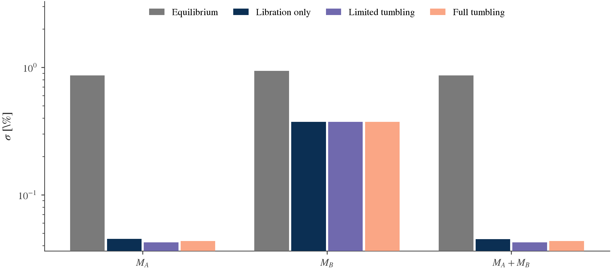
These are formal uncertainties for Didymos, Dimorphos and their correlated total mass. The mass plot supplements the paper's Table 2.
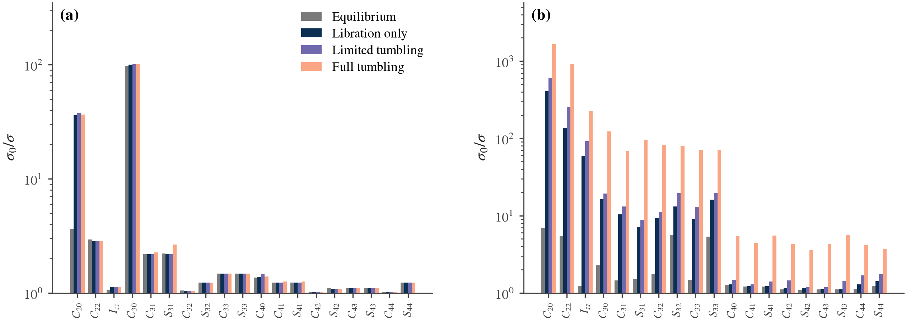
Figure 4 layout: Didymos (a), Dimorphos (b); four rotational cases and the normalized polar moment alongside the gravity coefficients. The colors, plain bars, internal legend and panel proportions follow the supplied paper. Figures are rendered from retained validated results.
Degree, prior and gravity trades
Use separate choices rather than changing a kernel:
# Inside a script with make_study from examples/hera_covariance.py:
degree2 = make_study("AC3", estimate_degrees=(2,), prior="none")
# The paper's expanded no-prior case: primary-only higher harmonics.
primary_high = make_study(
"AC3",
estimate_degrees=(2, 3, 4),
parameterization="harmonics",
higher_degree_bodies="primary",
prior="none",
)
paper_baseline = make_study("AC3")
gravity4 = make_study("AC3", gravity_degree=4)
The second Figure 5 group estimates both bodies' degree-2 inertia coordinates and masses, plus primary-only exterior degree-3/4 harmonics. It is not the same as both-body raw degree-4 moments without a prior. The latter retains structural trace null directions; its unavailable uncertainties must remain unavailable.
hera_degree_trades.py implements these comparisons. propagate makes a new transport; compare verifies and remaps completed BASCO transports without more propagation. Retained comparison fixtures are native, so compare defaults to --derivatives native; fresh propagate defaults to AD. A backend identity mismatch is rejected rather than relabeled.
Figure 5's reproduced no-prior sigma errors are 2.5417e-6 for degree 2 and 3.8168e-6 for the primary-only higher-degree experiment. The four prior cases pass the same Table 2 checks. Degree-trade evidence records the exact scientific configuration.
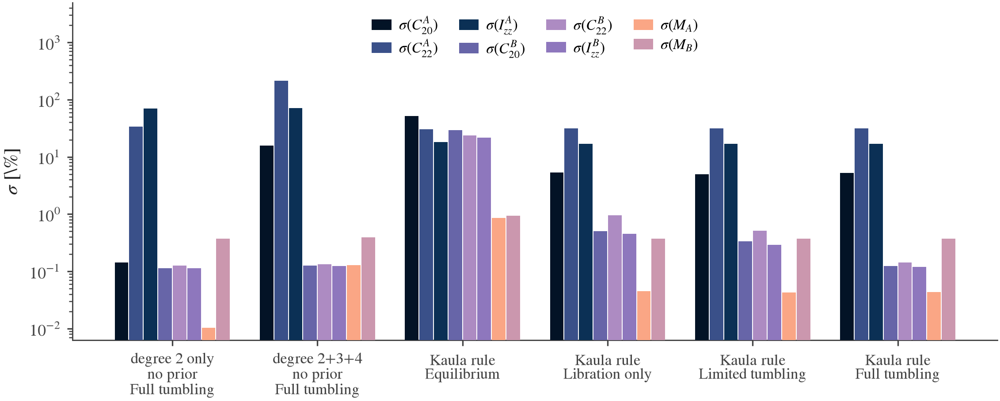
The six groups compare the two no-prior experiments with the four Kaula-prior rotational cases. The legend includes both estimated masses. Izz denotes the normalized polar moment used in the paper's percentage reports.
Changing gravity order requires a new trajectory. Changing only compatible priors/noise can reuse rows. Reducing the uncertain coordinate subset can reuse validated transport through the corresponding map; it conditions omitted estimated parameters as fixed. The workflow chapter explains reuse boundaries.
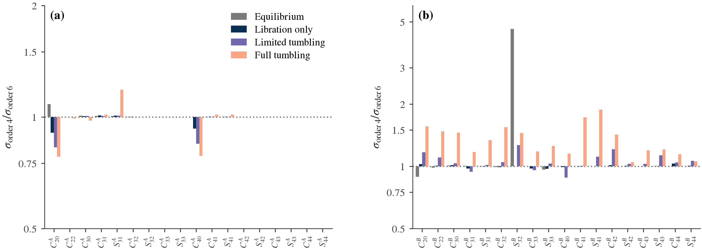
An order-4/order-6 ratio compares two model-conditioned covariances. It does not measure parameter bias from omitted gravity or prove that the model with smaller formal errors is more accurate.
Figure 3 and the shape ensembles
# Refit both archived clouds; no trajectory propagation or new mesh ensemble.
python3 -B tools/dev.py run --plot examples/hera_kaula.py --tex
# Explicitly sample a small new seeded demonstration instead.
python3 -B tools/dev.py run --plot examples/hera_kaula.py \
--fresh --max-degree 4 --copies 3 --subdivisions 1
The archived fit reproduces the Didymos law exactly and the Dimorphos law to 5.9e-15 maximum relative difference. The ensemble includes 200 shape perturbations plus density variants. Fresh low-resolution sampling is an API demonstration, not a fresh reproduction of the complete paper ensemble.
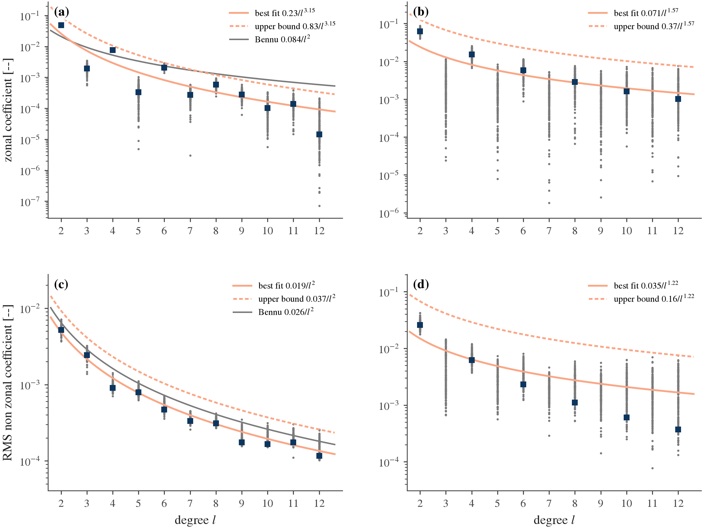
Didymos occupies the left column and Dimorphos the right. Grey points are the retained perturbed-shape models; navy squares are the nominal constant-density values. Orange solid and dashed curves give the fitted law and adopted upper bound. The Didymos panels also show the Bennu reference law.
Fresh propagation, row replay and saved results
| Operation | What it establishes | Additional dynamics |
|---|---|---|
Fresh CovarianceStudy.linearize() |
BASCO's transport, observation assembly, priors and solver reproduce the configured experiment | Yes |
hera.load_hera_archive(...) |
Archived PyGUBAS rows, transformed into physical SI coordinates, agree under BASCO covariance/report algebra | No |
hera.load_retained_transport(...) |
A checked completed BASCO trajectory supports a compatible new estimated parameter/measurement analysis | No |
read_run(folder) or presentation rendering |
A saved result is checksum-valid and can be read/reformatted | No |
Replay converts native kilometers, fractional moment/GM columns and centered Legendre barycenter coefficients into SI mass, moment, R0 and V0 coordinates. It is valuable independent evidence of conversions and algebra, but it cannot validate fresh dynamics on its own.
The latest Phase 2 acceptance is four fresh default-Hou-AD runs, not replay. All 160 reported sigmas pass the declared 1e-3 relative archive/native criterion, and all 36 printed Table 2 values match their rounding bins:
| Case | Maximum relative sigma error vs archive | Vs frozen native |
|---|---|---|
| AC0 | 5.291134e-11 | 1.160849e-11 |
| AC1 | 6.788903e-11 | 3.926393e-11 |
| AC2 | 2.780115e-10 | 1.373615e-10 |
| AC3 | 2.243221e-6 | 1.457388e-6 |
The full-tumbling case amplifies long-arc rounding; its small residual difference is recorded, not hidden. Earlier native fresh propagation and archived-row replay are separate checkpoints. Historical replay's maximum relative sigma error was 2.475084e-9 under its stricter 1e-7 criterion.
The latest Phase 2 validation record owns the current acceptance numbers. Frozen compact evidence retains covariance/scales, comparisons, executed source and logs. Earlier reproduction notes explain source capture, conversions and native evidence; statements there about then-unimplemented AD/schedules are historical.
Output files
The one-case export contains the paper, harmonics and mass report families, numeric arrays, layouts/units, configuration/provenance, checksums and optional figures. Standard run names include a descriptive label, UTC timestamp and analysis identity. See results for the full directory contract.
saved = bc.read_run(folder) # Verifies the completed standard run.
print(result.mass_properties().summary()) # Both masses, total, GMs and ratio.
print(hera.hera_report(result).summary()) # Exact paper conventions.
Never label a prior/noise/degree variant as the paper baseline without recording its changes. The saved configuration and provider identity are the evidence, not the folder's informal nickname.
Limits of the reproduction
These are formal local uncertainties around a nominal rigid-body model. They do not constitute a fit to actual Hera observations, a nonlinear uncertainty-validity proof over chaotic arcs, or a new integration-step convergence study. Complete end-to-end finite-difference coverage of the covariance chain is still open.
Round 20 supplies Table 2's baseline. Six same-dynamics round-21 prior/noise/baseline variants have been checked; 13 other round-21 trajectory/basis variants remain unverified. In particular, one archived position-noise sweep holds the barycentric noise fixed while later paper plotting ties it to relative-position noise. Baseline 1 m results coincide; other points need the matching reanalysis.
Continue with multi-arc studies, shapes and Kaula, or the complete capability map.
Example scripts
Every script below is an existing user example in examples/. They run against the installed library and compose the same modular components used for custom studies. This gallery documents their real behavior; opening these pages runs no scientific computation.
Script index
| Goal | Start here | Fresh dynamics? | Output |
|---|---|---|---|
| Check installation cheaply | S0 smoke run | One short prefix | Console; optional numeric artifact |
| Build your own binary | Custom binary | One short prefix | Null-aware console summary |
| Understand component reuse | Noise/prior/channel reuse | Initial propagation only | Compared summaries |
| Reproduce the paper | One Hera case | Full 16 orbits | Standard results and figures |
| Reproduce Table 2 | All Hera cases | Four independent full propagations | Table 2 and per-case runs |
| Check analytic versus AD | Derivative comparison | Both routes | Asserted report agreement |
| Fit Kaula laws | Kaula and new shapes | No trajectory dynamics | Laws, figures, tables, manifest |
| Compare degrees/priors | Degree and gravity trades | propagate: yes; compare: no |
Study reports and plots |
| Assess tracking gaps/arcs | Multi-arc | Continuous and arc transports; sweep reused | Console; optional artifact |
| Compare fixed, considered and estimated gravity | Hera uncertainty histories | One shared transport | Mass histories, gravity bars and binary-position uncertainty |
| Propagate declared spacecraft uncertainty | RF3BP covariance | One shared binary/particle trajectory | Six-state covariance histories, standard artifacts and figures; no simulated measurements |
| Release using a retained Hera covariance | Hera spacecraft release | Post-release binary/particle propagation; original binary transport reused | Coestimated/considered source comparison, six-state histories and source/release metadata |
| Map or supply local gravity uncertainty | Near-field gravity covariance | No trajectory dynamics | Coefficient, fixed-point and correlated encountered-acceleration reports |
| Visualize a direct local-field mesh approach | 3D approach and landing | Shared RF3BP state/variational transport and own-event probes | Target mesh/domains, position regions, smooth contact covariance, finite-horizon outcomes, videos and interactive views |
| Explore old model comparisons | Legacy gravity | Several two-orbit runs | Printed comparison |
Environment and execution
Quick start explains bootstrap, build, ad_environment and plot_environment. Use the managed launcher from the repository root:
python3 -B tools/dev.py run examples/custom_binary.py
python3 -B tools/dev.py run --ad examples/ad_covariance.py
python3 -B tools/dev.py run --plot examples/hera_kaula.py
Plain run and --ad select the JAX environment. --plot selects JAX plus plotting. --native selects the analytic-only environment. The environment flag does not change the transport selected inside your script. A script that omits transport still requests default AD; without JAX it raises an actionable error. For native-only execution the script must pass bc.NativeAnalyticTransport() or expose its own corresponding option.
The launcher changes the working directory to the machine cache. Resolve data relative to __file__ or pass absolute input/output paths, for example --output "$PWD/results/my-new-run". Existing scripts already resolve their own bundled inputs. Numeric artifact writers refuse an existing target; standard exports create descriptive unique run folders. Add --tex only when a working external LaTeX installation is available.
Historical timings below are observations from an Apple M4 Pro, not performance guarantees. AD compilation, active CPU jobs and selected gravity degree matter. The uncertainty-history increment has its own numerical checks; building this site runs no science.
S0 smoke run
Source: s0_covariance.py · Reference factories
python3 -B tools/dev.py example
python3 -B tools/dev.py run examples/s0_covariance.py --prefix
python3 -B tools/dev.py run --native examples/s0_covariance.py \
--prefix --derivatives manual --output "$PWD/results/s0-native-prefix"
The synthetic S0 study exercises a rigid binary, degree-2 estimated parameters, initial-state errors, position and attitude observations. --prefix integrates only one 600-second output interval and costs seconds. The deliberately small observation set leaves null directions; unavailable formal uncertainty is the correct result.
Without --prefix the script runs the full configured S0 study. --dt changes RK4 seconds; --derivatives ad|manual selects AD or hand-derived native partials. --output saves a numeric artifact, not the full standard figure gallery: epochs, native states, transition/sensitivity matrices, rows, layouts, singular/null information, covariance when available, reports and source hashes.
Custom binary
Source: custom_binary.py · Bodies and states
python3 -B tools/dev.py run examples/custom_binary.py
This is the smallest fully explicit body/state construction: two SI ellipsoids, a 2 km separation, a near-circular velocity scale, spin vectors and identity rotations. It selects masses, moments and initial-state errors, then requests one 600-second observation epoch with an RK4 step of 60 s. Astropy quantities make unit intent visible. Default AD is required; no plotting is needed. It prints unresolved directions and writes no results folder.
Use it as a starting point for your own script, but lengthen the study and validate its dynamics before interpreting scientific uncertainties. A geometrically convenient initial orbit is not a full-field equilibrium solve.
Reuse noise, priors and channels
Source: reuse_covariance.py · Reuse boundaries
python3 -B tools/dev.py reuse
A 1,200-second S0 prefix is propagated once. The script compares data-only covariance, an independent 5% primary-mass prior, doubled measurement noise and position-only channels. The new prior does not change the information carried by the data. The new noise and prior need no ODE evaluations; the compatible channel change reuses the checked transport. Output is printed summaries and a mass-properties report. Cost is seconds plus first AD compilation.
One Hera paper case
Source: hera_covariance.py · Complete annotated study
python3 -B tools/dev.py hera
The default is full tumbling (AC3), 16 mutual orbits, gravity order 6, both masses and raw degree-2/3/4 moments, free barycenter offset/rate, and the paper's combined Kaula prior. The script prints the paper-normalized report and writes a standard results folder including paper, harmonics and mass tables and PNG/SVG/PDF figures. It requests external LaTeX. The managed plotting environment includes JAX; there is no native fallback.
Historical full-case timings: about 1–2 minutes AD versus about 25 minutes native; Phase 2's concurrent AD acceptance took 199–201 seconds per case. To change the study, modify the readable make_study(...) call in your own runner. Available factory arguments are documented in the Hera chapter.
All four Hera cases
python3 -B tools/dev.py hera_cases
python3 -B tools/dev.py hera_cases AC1 AC3 --jobs 1
python3 -B tools/dev.py run examples/hera_all_cases.py \
AC3 --orbits 2 --no-export
The four cases share one factory and differ in initial rotation. Independent processes propagate each case, print progress and compare the nine selected uncertainty percentages to Table 2's printed rounding. With all cases the target is 36/36. Default exports write one standard run per case; --no-export prints only; --figures adds plots when launched with --plot. Other options are --orbits, --dt, --jobs and --output-root.
The two-orbit command is a diagnostic prefix; its percentages are not expected to reproduce the 16-orbit table. A numerical conditioning refusal is reported, not patched by silently weakening the solver.
Hou native versus AD
Source: ad_covariance.py · Derivative methods
python3 -B tools/dev.py ad_example
The full S0 study runs twice with the same model, parameter selection, observation plan and RK4 settings. One provider is NativeAnalyticTransport; the other is the default Hou AD route. The script asserts equal posterior rank and mass/degree-2 sigma agreement at rtol=1e-8. Phase 2 observed a maximum mass/GM/ratio sigma difference of 5.5e-12 relative. It prints the checks and mass report; it writes no artifact. An earlier measured execution took about 35 seconds.
This is a useful same-problem backend comparison. It does not replace opt-in finite-difference checks or certify all nonlinear inference behavior.
Kaula laws and new shapes
Source: hera_kaula.py · Shapes and Kaula
# Refit the paper's retained coefficient clouds, no new meshes or trajectories.
python3 -B tools/dev.py run --plot examples/hera_kaula.py --tex
# Generate a small, new, seeded low-resolution shape/density ensemble.
python3 -B tools/dev.py run --plot examples/hera_kaula.py --fresh \
--max-degree 4 --copies 3 --subdivisions 1
Archived mode verifies source cloud hashes, fits separate zonal/nonzonal power laws and checks all adopted law parameters/sigmas against the paper. It reproduces Figure 3 in roughly 10 seconds historically. The default input roots are BASCO's captured paper/Kaula ensembles; --archive and --ensembles replace them.
Fresh mode calls the generic mesh, radial sampler and core/shell/torus density components with a fixed seed. The CLI permits --max-degree 3–12, --copies per correlation length and --subdivisions for ellipsoid resolution. This is preprocessing, not trajectory integration. Cost grows with degree, mesh resolution and ensemble size. The demonstration is not a claim to reconstruct the full original 200-member random ensemble.
Outputs include PNG/SVG/PDF figures, tables/kaula_laws.csv, tables/kaula_envelopes.csv, results.json, validation.json, README.md and a byte manifest. --output selects a new destination; --tex is optional.
Degree, prior and gravity trades
Source: hera_degree_trades.py · Hera trade interpretation
python3 -B tools/dev.py run --plot examples/hera_degree_trades.py --help
# A fresh active-gravity-4 transport, default AD.
python3 -B tools/dev.py run --ad examples/hera_degree_trades.py propagate \
--gravity-degree 4 --output "$PWD/results/hera-ac3-g4-ad-transport"
# Existing retained native transports are a different, explicit provider.
python3 -B tools/dev.py run --plot examples/hera_degree_trades.py compare \
--derivatives native \
--transport-root "$PWD/artifacts/scientific" \
--output "$PWD/results/hera-degree-comparison" --figures
propagate accepts --state, --gravity-degree, --dt, --duration, required --output and --derivatives ad|native. It stores a fresh complete numeric transport artifact with source identity.
compare assembles six paper Figure 5 cases and additional symmetric degree/prior experiments from completed BASCO transports. It performs no new dynamics. It needs local transport artifacts named hera-ac0-dt75-v1 through hera-ac3-dt75-v1; these large artifacts are ignored by Git and are not guaranteed to exist in a clean clone. The script does not download or fabricate them. --gravity4-transport adds a matched order-4 comparison, --figures draws the reports, and --tex requests LaTeX. Its default provider is native because the retained fixtures are native. All source transports in a comparison must match its declared provider.
The two commands above demonstrate separate activities: the newly produced AD order-4 artifact cannot be substituted into an otherwise native comparison. Choose one backend consistently and create/reuse the matching completed inputs. See the Hera chapter for the precise Figure 5 parameter spaces and null-direction caveats. Historical compare cost was about 20 seconds.
Multi-arc and tracking gaps
Source: multi_arc_covariance.py · Multi-arc guide
python3 -B tools/dev.py multi_arc
python3 -B tools/dev.py run examples/multi_arc_covariance.py --help
python3 -B tools/dev.py run examples/multi_arc_covariance.py \
--state AC1 --days 7 --arc-days 3.5 --blackout 8
Defaults are AC3 full tumbling, Hou order 2, 14 days, 15-minute cadence, 8 h/day off, four 3.5-day arcs, RK4 75 s and AD. Masses/gravity are shared; each arc gets its own binary initial state and channel nuisance coordinates. Order 2 uses no field prior; --order 4|6 estimates moments through degree 4 with the paper prior. Other options are --cadence in minutes, --dt in seconds, --derivatives ad|manual, and optional numeric-artifact --output.
The script compares a continuous ungapped study, the same continuous transport with a blackout, independent arcs, and a blackout sweep. Reweighting/selection in the sweep reuses per-arc transports. It prints a conditioning refusal when a continuous chaotic arc exceeds the solver guard; that refusal is an intended result. Historical default execution was about four minutes on the measured Mac; higher-order longer studies cost more.
These are covariance studies. The separate generic nonlinear batch driver exists, but this example does not fit actual Hera observations or apply a sequential filter.
Hera spacecraft release
Source: hera_spacecraft_release.py · Release and covariance guide
This example starts from completed Hera covariance runs exported with their original factors. It reloads the nominal/variational binary history, selects an exact stored release epoch, and propagates a massless spacecraft under both rotating Hou fields. It creates no observation values or new information and performs no refit.
The runner separates make_model(), run(source_runs, backend=...), export_results(...) and make_plots(...). source_runs maps display labels to completed standard-run folders for the coestimated and considered cases. Backend-specific source artifacts must match the model, parameter definitions and retained binary transport; a changed nominal model is rejected rather than silently reused.
These are saved formal covariance-study results, not fits to realized measurements. The original factor is mapped through the release before subsequent variational transport; this limits precision loss when large earlier-source sensitivities cancel, while preserving the original null-support policy. This change in multiplication order adds no latent errors or fitted information. See numerical covariance transport.
The current local source folders are under artifacts/validation/consider-history-20261020/ad-v2/ and native-v2/. They are scientific run artifacts, ignored by Git and not guaranteed in a clean clone. The public loader is from basco.spacecraft_io import load_covariance_source; a run without the saved original factor is insufficient. The full script documents its input paths and exposes backend/output options.
python3 -B tools/dev.py run --plot examples/hera_spacecraft_release.py \
--estimated /absolute/path/to/completed-coestimated-run \
--considered /absolute/path/to/completed-considered-run \
--backend ad --output "$PWD/results/hera-spacecraft-release"
Use --backend native to select the native post-release transport. --dt, --duration and --cadence change its numerical settings. --no-plots saves only numerical results. The output preserves transport/, per-case history/ and source/, plus run.json and a manifest. Figures are drawn separately and use time since release.
The selected case uses AC3, Hou order 6, masses and field uncertainty through degree 4, and a secondary-body release offset (0, 0, 250) m with body-relative velocity (0.01, 0.02, 0.03) m/s. Independent release sigmas are 0.1 m and 0.0001 m/s per component. Original source coordinates are at 0 s; the included-information cutoff and retained release epoch are 654300 s. These are different concepts even when the last two values coincide.
See the three-epoch explanation, release equations and comparison figures. This Hera release runner reports trajectory covariance after release. The separate direct local-field approach adds selected mesh contact/covariance demonstrations; those declared sources are not this saved Hera posterior.
Near-field gravity covariance
Source: near_field_covariance.py · Local field and uncertainty guide
This self-contained script demonstrates two input routes. mapped_example builds an S0 Hou order-6 model with uncertain masses and degree-2/3/4 moments, then maps a declared joint source factor into a finite cylindrical basis. direct_example supplies local coefficients and an explicitly correlated spacecraft/mass/coefficient factor without an exterior model or archive. Both preserve the same source cross terms and null-support policy.
python3 -B tools/dev.py run examples/near_field_covariance.py
python3 -B tools/dev.py run --native examples/near_field_covariance.py --backend native
The mapped study uses azimuthal degree 4, radial order 5 and radial scale 16. These are checked example settings, not universal field defaults. Check held-out field values and source sensitivities when changing a basis. The mapper requires an explicit continuation assumption; a fit to truncated Hou values is not an independent near-surface truth model.
The direct example computes acceleration uncertainty at an uncertain query position using one combined source/coefficient Jacobian. It retains the position–gravity cross terms instead of adding separate independent budgets. The script prints numerical reports and representation rank. It creates no simulated observations, covariance solve, spacecraft propagation, contact event or landing footprint. The field guide links the evidence figures and validation record.
Legacy gravity comparison
Source: gravity_models.py · Capability status
python3 -B tools/dev.py run --ad examples/gravity_models.py
This retained reference creates two point-mass lattices, propagates two orbits under exact mascon gravity, Hou orders 2/4/6 and Cartesian multipole orders 3/5, and prints trajectory differences and mass sigmas. It uses AD and selects masses/initial-state errors. It does not produce the Hera paper reproduction.
Cartesian multipole is deprecated compatibility code; the primary supported scientific workflow is Hou gravity. Mascons and second-degree reference utilities remain available but are outside current primary development. This example can be computationally heavier than a short S0 study and has no promised current timing.
Evidence tools are separate from user examples
Scripts under tools/evidence preserve numerical acceptance, archived replay and publication generation. They may require completed local artifacts. They are not all minimal tutorials, and not every one should be run to start a project. Use capabilities to distinguish available features from planned estimation/filter work.
3D approach and landing
Source: landing_covariance.py · 3D guide, videos and interactive views
This runner composes the same components for Didymos or Dimorphos. make_problem chooses mesh/model, a calibrated local nominal field and a declared full source factor. run_problem uses the shared approach/contact transport. probe_problem supplies selected unweighted source directions to independent value-only trajectories with their own events. make_scene, export_run and render_run separate numerical results from presentation.
python3 -B tools/dev.py run --plot examples/landing_covariance.py --target didymos --probes 4 --output "$PWD/results/landing-didymos" --figures "$PWD/results/landing-didymos-figures" --animation
Use --target dimorphos, --backend native, or --wide --probes 12 as explicit study choices. The field calibration is deterministic preprocessing, not observation fitting. Free coefficient uncertainty and mass/release cross terms remain in the complete source factor. The wide case changes uncertainty under fixed nominal physics; compatible transport reuse is validated before remapping.
These direct-start examples provide selected smooth contact covariance and geometric probe outcomes. They do not perform an automatic exterior/local model switch or infer miss/escape probabilities. Red means no contact within the recorded finite forecast; amber means the field domain ended. After nominal contact, later animation frames keep only its reference marker and mask the nominal covariance.
For evidence and presentation from completed scenes, use tools/evidence/landing_covariance.py. Its --presentation-only mode redraws saved small/wide scenes without a dynamics or covariance rerun. Acceptance owns exact quantitative checks.
Spacecraft and landing covariance
BASCO now propagates a massless spacecraft in the full rotating binary system, with its own six-component inertial initial position/velocity and their uncertainty. Both asteroids retain extended-body Hou translation and rotation. The spacecraft feels both gravity fields and has no effect on the binary: the restricted full three-body problem (RF3BP).
This is covariance analysis only: no simulated measurements, parameter fitting or filter updates. A nominal trajectory and its sensitivities map a fixed source uncertainty into spacecraft position and velocity covariance. Initial conditions can be inertial Cartesian or body-fixed release conditions on either asteroid. A retained binary transport supplies a later release state and its sensitivities to the original source coordinates. The examples on this page retain their exterior Hou fields. The separate 3D approach and landing guide adds selected direct local-field mesh approaches and smooth first-contact covariance; the near-field gravity guide documents their reusable field/source mapping.
Example
For a self-contained first script, use spacecraft_quickstart.py, which builds the synthetic S0 binary without external data files. Replace that model with your own BinarySystem.
The complete Didymos runner uses the Hera AC3 nominal binary, Hou order 6 and uncertain masses/moments through degree 4. Its core is a composition of public components:
from basco import RK4
from basco.spacecraft import RestrictedDynamics, SpacecraftState
# model, parameters and source are declared separately below.
dynamics = RestrictedDynamics(model, parameters) # AD by default
initial = SpacecraftState([1800, -900, 500], [-0.05, 0.09, 0.02])
trajectory = dynamics.propagate(
initial, duration=900, cadence=30, integrator=RK4(5),
)
history = trajectory.covariance(source)
The full runner builds the model and source distribution explicitly. Execute it from the BASCO checkout with:
python3 -B tools/dev.py run --plot examples/spacecraft_covariance.py
Use --backend native as a runner argument for the hand-derived route. Mutual gravity order, spacecraft field order, uncertain parameter selection, initial state and uncertainty are separate inputs. In this slice field_order may be 2, 4 or 6 up to the mutual order; both backends use the same moment basis and physical map. The example's estimate_masses/estimate_moments builder calls select sensitivity coordinates; they do not run an estimator.
Source uncertainty
The example uses a declared demonstration distribution, not the saved Hera covariance-study result. Binary coordinate sigmas are 0.001 times the selected coordinate scales; spacecraft initial sigmas are 1 m per position component and 0.001 m/s per velocity component. The binary and spacecraft input errors are independent by explicit assumption. Coordinate scales are not inferred priors; the chosen fraction is an example input.
import numpy as np
from basco.spacecraft import SourceUncertainty
layout = parameters.joint_layout()
source = SourceUncertainty.from_factor(
layout, np.diag(0.001 * layout.scales),
source="Declared example uncertainty; not a saved Hera covariance",
reference_epoch_s=0, information_cutoff_s=0,
)
source = source.with_independent_spacecraft(
np.diag([1, 1, 1, 1e-6, 1e-6, 1e-6]),
)
For correlated spacecraft/binary errors, supply the complete joint layout and physical factor to from_factor; common latent columns retain the cross terms. from_covariance validates a newly supplied PSD distribution. from_result retains an existing covariance/consider result's original QR/SVD factor, full correlations and null-support policy. It does not reconstruct the factor from rounded dense covariance or create new information.
Without a handoff, inertial initial errors and the binary model share the source reference epoch. With a handoff, the source keeps its original epoch while the retained binary state and spacecraft release have a later epoch. The information cutoff records knowledge already included; changing its label does not alter data or advance the nominal binary. A formal covariance that includes later observation information can describe a retrospective uncertainty map, but is not a forecast from before that information. The Hera-informed release example keeps all three epochs explicit.
Didymos example results
The validated case propagates 900 s with a 30 s output cadence. At the 5 s step, final combined component sigmas are approximately (1.34735, 1.34469, 1.34406) m and (1.00223, 0.999250, 0.998602) mm/s. These values depend on the declared example uncertainty; they are not a paper landing result.
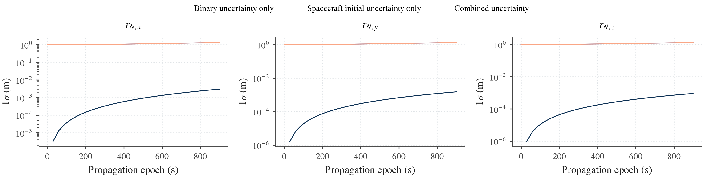
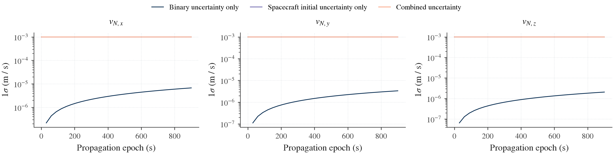
The combined and spacecraft-initial curves nearly coincide because that input dominates this short example. The binary-only contribution remains visible on the logarithmic axis. Independent input covariance contributions add; correlated inputs must instead use their full joint factor.
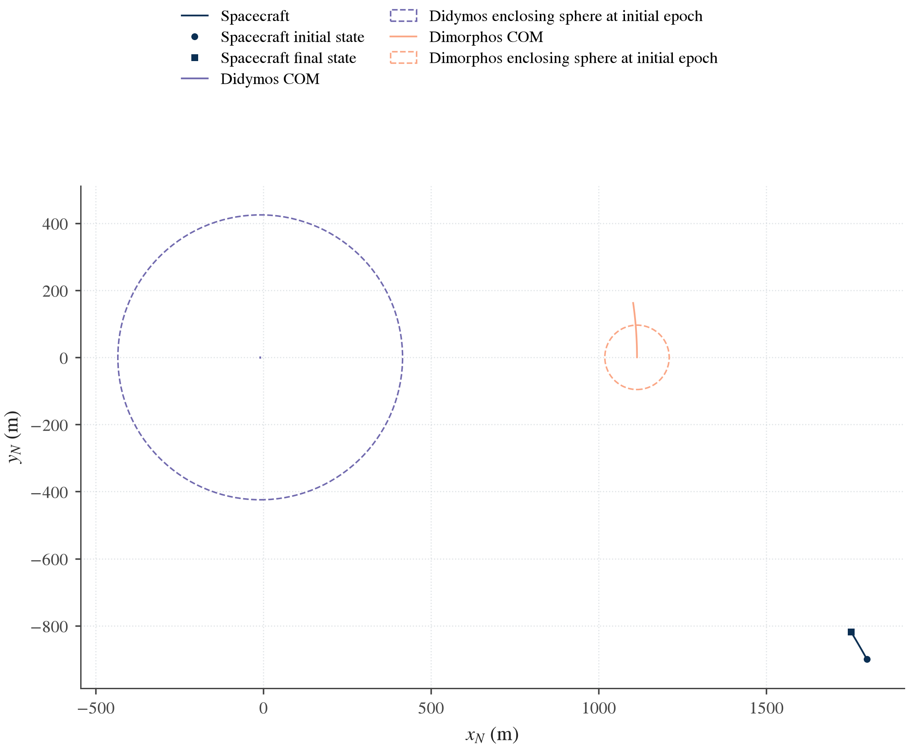
This trajectory stays well outside the enclosing spheres: minimum sampled clearances exceed 1.58 km from the primary bound and 1.14 km from the secondary bound. Dashed circles show enclosing spheres at the initial epoch, not asteroid surface models. There is no contact event or landing footprint in this example.
Hera-informed release
hera_spacecraft_release.py is the application for an existing Hera covariance result. It compares coestimated and considered degree-3/4 gravity uncertainty after release from Dimorphos. These are the completed Hera consider/history cases, not the declared distribution above. The binary nominal model is AC3 with Hou gravity order 6 and mass/field sensitivity coordinates through degree 4. The saved result is a formal Hera covariance-study result; it is not an estimate fitted to realized measurements. It already contains the study's observation information. The spacecraft application adds no observation rows, noise draws or refit.
Reload an existing covariance result
load_covariance_source verifies a completed standard run, its saved original factor, physical-coordinate definitions and nominal/variational binary arrays. It returns a RetainedCovarianceSource with uncertainty, transport, analysis_identity and the included-information cutoff. For a consider result, it also retains the conditional factor and estimated-consider response needed for cancellation-aware output maps. A run saved without the required original factor fails explicitly; the loader does not factor a rounded covariance or recreate observations.
The following fragment assumes model and parameters from the linked runner's make_model() and an absolute saved_run path to one completed source case:
import numpy as np
from basco import RK4
from basco.spacecraft import BinaryHandoff, BodyFixedRelease, RestrictedDynamics
from basco.spacecraft_io import load_covariance_source
retained = load_covariance_source(saved_run, parameters, reference_epoch_s=0)
release_epoch_s = retained.information_cutoff_s
handoff = BinaryHandoff.from_transport(
retained.transport, parameters,
epoch_s=release_epoch_s,
reference_epoch_s=retained.uncertainty.reference_epoch_s,
)
release = BodyFixedRelease(
"secondary", position=[0, 0, 250], velocity=[0.01, 0.02, 0.03],
)
source = retained.uncertainty.with_independent_release(
release, factor=np.diag([0.1] * 3 + [0.0001] * 3),
release_epoch_s=release_epoch_s,
)
trajectory = RestrictedDynamics(model, parameters).propagate(
release, handoff=handoff, duration=900, cadence=30, integrator=RK4(5),
)
observation_nuisance = tuple(
f"barycenter.{kind}.{axis}"
for kind in ("offset", "rate") for axis in "xyz"
)
history = trajectory.covariance(source, ignored_labels=observation_nuisance)
BodyFixedRelease.position is the COM-relative offset in the selected body's frame, in metres. velocity is the body-frame derivative of that offset in m/s. A zero relative velocity still gives inertial motion from the body's translation and rotation. The example offset is a release above the body, not a claim of a surface point or detected contact. The independent release-error sigmas are 0.1 m and 0.0001 m/s per component. This is an explicit additional assumption; it is not inferred from the Hera covariance.
The six barycenter.offset/rate labels above describe the source study's observation bias. They have no force or barycentric-relative spacecraft output pathway, so this application explicitly maps those output columns to zero. The original factor and its physical-coordinate correlations remain intact. Unknown or mismatched physical coordinates cannot be silently ignored.
Keep the three epochs distinct
| Epoch | Meaning in this example |
|---|---|
| Source reference: 0 s | Original binary initial-state and mass/gravity error coordinates. Their saved factor and null-support policy remain unchanged. |
| Information cutoff: 654300 s | Last actual observation-row epoch included in the saved covariance. This is read from the source run rather than inferred from a configured duration. |
| Release: 654300 s | Exact stored binary epoch selected for release. Spacecraft output epochs begin here. |
All epochs use the same elapsed-second clock. BinaryHandoff.from_transport selects the stored native state, STM and raw sensitivities without interpolation or attitude projection. Relabeling reference_epoch_s never advances a nominal binary. For a forecast, release must occur at or after all information included in the source covariance.
The independent helper appends labels such as spacecraft.release.secondary.r_B.x and spacecraft.release.secondary.v_B.x. Their body, frame, nominal offset/velocity and release epoch are recorded separately from the original source epoch. If the release errors are correlated with the binary errors, supply the complete joint factor to SourceUncertainty.from_factor(..., release=release, release_epoch_s=...) instead; the common latent columns retain those correlations. from_covariance accepts the same explicit release descriptor for a newly supplied joint PSD matrix.
Release map and retained sensitivities
With body COM position/velocity c, v_c, body-to-inertial rotation R, release offset rho and body-relative velocity u,
r_S=c+R\rho,\qquad v_S=v_c+\dot R\rho+Ru.
The kinematics uses the coded binary rotation-rate equations at the retained state, including their off-manifold DCM continuation. It does not project the state or substitute an orthogonality identity. The Jacobian includes body translation, attitude, spin, mass-dependent barycentric location and release-error dependence. Thus independent body-fixed input errors do not imply independent inertial spacecraft and binary errors after the release map.
SpacecraftInitialization composes this map with the earlier binary sensitivities. The propagation adapter constructs it automatically; advanced callers can inspect trajectory.initialization or use SpacecraftInitialization.from_handoff(handoff, release). Its full-source map is
J(t)=\Phi(t,t_r)J_0+\Psi(t,t_r)\frac{\partial p_{\mathrm{raw}}}{\partial q}.
J0 maps the original source coordinates and declared release errors to the combined state at release. The variational integrator still starts with an identity STM and zero local raw sensitivity. The original source-to-release map is composed once, preserving the complete factor and consider cancellation.
Numerical covariance transport
After a long binary propagation, sensitivities to the original coordinates can contain large state and parameter terms whose contributions nearly cancel. Combining them into the complete source Jacobian first can lose significant digits before its covariance factor is applied. A dense J P J.T can lose further precision. The spacecraft adapter therefore maps the original source factor at initialization, then transports those mapped latent errors:
\Gamma=\frac{\partial p_{\mathrm{raw}}}{\partial q},\qquad
M_0=\operatorname{map\_factor}(J_0),\qquad
M_p=\operatorname{map\_factor}(\Gamma),
M(t)=\Phi(t,t_r)M_0+\Psi(t,t_r)M_p,\qquad P(t)=M(t)M(t)^T.
The two terms use the same original latent-column order and are added before squaring, retaining their cross covariance. For a consider result, map_factor first forms the combined fitted-response/direct transfer Jx S + Jc, then applies the unchanged external consider factor. CovarianceResult.map_factor, ConsiderResult.map_factor and SourceUncertainty.map_factor expose this operation without constructing a covariance.
The full original-source J(t) is still retained and governs null-support/status decisions. A finite mapped factor does not make an unresolved output observable. propagate_covariance(..., mapped_factors=...) accepts these transported factors while retaining that original null policy. It requires one factor per epoch/output in the original latent basis; it is not a second uncertainty source. Transport creates no new latent columns, observation information or estimated rank, and the existing generic report arithmetic is unchanged.
Ordinary callers use trajectory.covariance(source), which handles this composition. To inspect the factor transport for the Hera fragment above:
J0, Gamma = trajectory.initialization.for_layout(
source.layout, ignored_labels=observation_nuisance,
)
M0 = source.map_factor(J0)
Mp = source.map_factor(Gamma)
mapped = trajectory.state_transition @ M0 + trajectory.raw_sensitivities @ Mp
mapped has shape (epoch, 36, original latent errors); its final six rows are the spacecraft output factor. This changes numerical evaluation order, not the declared source distribution. The independent engineering release uncertainty remains the explicit additional input described above.
Hera release results and validation
The accepted run propagates 900 s with 60 s outputs and a 5 s RK4 step. Final inertial component sigmas are:
| Source treatment | Position x, y, z (m) | Velocity x, y, z (mm/s) |
|---|---|---|
| Estimate degrees 2–4 | 0.668185, 1.153074, 1.190509 | 0.193862, 0.382682, 0.322413 |
| Estimate degree 2; consider degrees 3–4 | 73.649209, 16.868613, 103.547722 | 2.664804, 12.255056, 21.947552 |
These are formal first-order trajectory covariances for the specified Hera study and release. The wider considered case has not yet been checked with nonlinear trajectories. Neither case is a landing ellipse or an impact probability.
The final installed suites pass 510 native and 583 AD plus plotting tests. The focused integration run passes 253 checks (two plotting-only checks skip in the AD role and pass in the full plotting suite), including all four new release/handoff FD checks and the four earlier spacecraft FD checks. The original 87 native / 117 AD snapshot items remain bitwise unchanged. Five transports check both derivative backends, the independently produced native/AD source studies and RK4 steps 20, 10 and 5 s. Same-source backend covariance differences are below 4.25e-17 relative; independent source-study sigma differences are below 2.67e-5. Successive-step ratios are 0.06248–0.06261, consistent with fourth-order convergence. Exact acceptance and frozen evidence state the scales and limits.
Hera release plots
The runner separates numerical execution, export and plotting. run(source_runs, backend=...) takes named completed source-run paths; export_results(...) saves the result; make_plots(...) creates the following comparison figures from those returned results. Source-run identities and initialization assumptions accompany the exported histories. Plotting uses time_origin_s=trajectory.release_epoch_s and time_label="Time since release"; only the displayed axis changes. Stored epochs and the three-epoch contract remain unchanged. The release/handoff acceptance record contains the executed commands, original source identities and numerical checks.
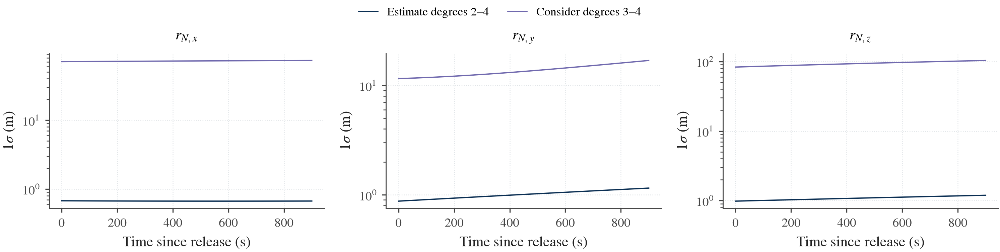
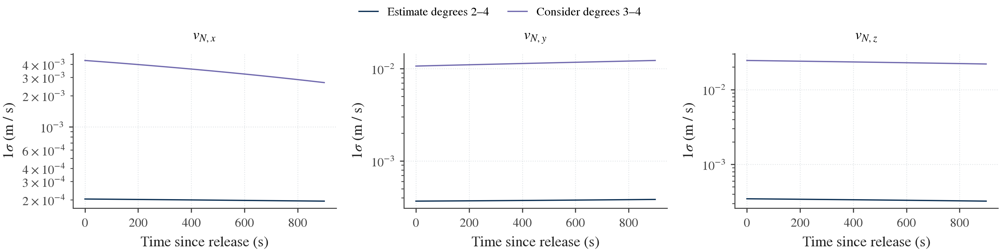
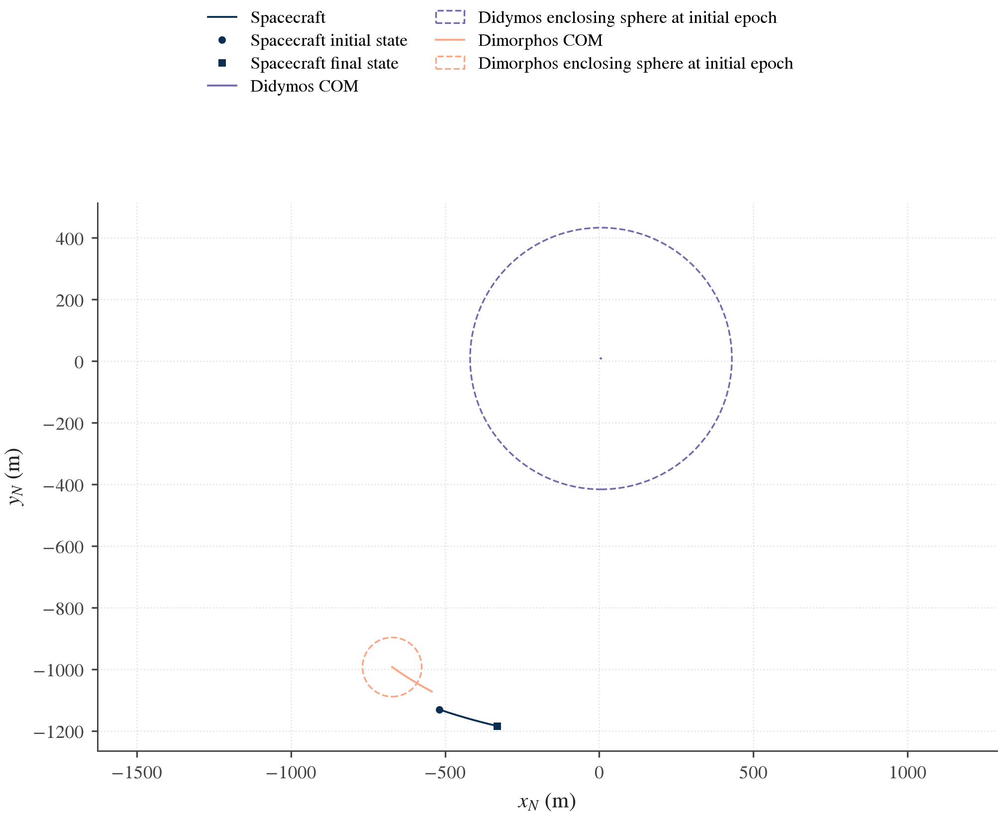
Dynamics and sensitivity equations
For binary state y, spacecraft state s=(r_N,v_N) and parameters p,
\dot y=f_B(y,p),\qquad
\dot s=\begin{bmatrix}v_N\\a_A(s,y,p)+a_B(s,y,p)\end{bmatrix},\qquad
A=\begin{bmatrix}A_B&0\\A_{SB}&A_S\end{bmatrix}.
A_SB includes moving body COM and orientation. The zero upper-right block enforces masslessness. Direct gravity partials include mass-dependent barycentric locations and the full existing mass/normalized-moment/harmonic map. Both subsystems are evaluated at common RK4 stages, avoiding a separate interpolated ephemeris.
The local Hou body field evaluates the retained potential with a unit receiving monopole. It returns body-frame SI acceleration, position gradient and selected derivatives with respect to mass-weighted SI moments. The restricted dynamics applies the existing raw-to-physical map once. No zero-inertia third rigid body is constructed, and no copied binary equations are replaced.
The combined storage has 30 binary native coordinates plus 6 spacecraft SI coordinates. Independent binary initial errors retain the existing 18 physical directions; spacecraft initial errors add 6. These are different from the complete source layout, which can also contain physical parameters and explicit nuisance coordinates.
Mathematically, for full-source output Jacobian J and source factor F, the output covariance is
P(t)=(J(t)F)(J(t)F)^T.
The numerically stable evaluation above transports the mapped latent factors before squaring. Every source cross term and unsupported direction remains represented. Unknown source labels, wrong units, mismatched epochs, changed physical definitions and changed harmonic normalization are rejected. An explicit ignored_labels list is reserved for source nuisance coordinates with no barycentric dynamics effect; physical parameters cannot be silently ignored.
Validation
The numerical evidence in this section is the earlier same-epoch inertial-initialization acceptance. These counts do not assert acceptance of the newly added release/handoff application.
Independent tests cover Newtonian acceleration/gradient limits, spherical bodies, MacCullagh second-degree terms, a Legendre expansion reference, off-manifold DCM derivatives, frame rotation, no backreaction, covariance cross terms, null support and IO roundtrips. Opt-in FD checks include the full initial-state/mass/moment-to-trajectory endpoint map; they are not run in ordinary covariance analysis.
Full ordinary suites passed 414 native and 481 AD plus plotting tests. The retained 87 native / 117 AD snapshot items are bitwise unchanged. Six fresh runs compare native/AD at 10, 5 and 2.5 s. Maximum scaled physical-sensitivity relative difference is below 8.2e-16; the successive-step difference ratios are approximately 0.0623-0.0627, consistent with fourth-order convergence.
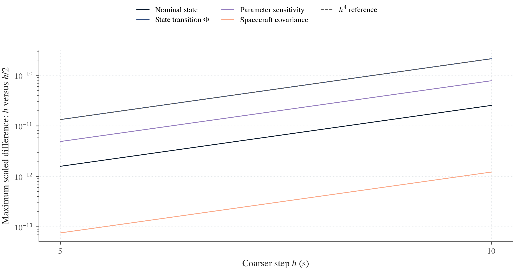
The plot shows successive numerical differences, not errors against a known closed-form RF3BP trajectory. It uses the explicit dimensionless scales in the validation record. Reproduction commands and frozen evidence distinguish executed physics from figures redrawn using saved arrays.
Functions and outputs
| Component | Responsibility |
|---|---|
| SpacecraftState | Initial inertial position/velocity; SI floats or compatible Astropy quantities. |
| HouBodyField | Local field values and derivatives, independent of integration/statistics. |
| BodyFixedRelease | Body-fixed COM offset and relative velocity, inertial release state and complete local Jacobians. |
| body_poses and body_kinematics | COM positions/velocities, rotations, spins and coded rotation rates; barycentric mass dependence. |
| BinaryHandoff and SpacecraftInitialization | Exact stored binary state/source map and composition with a later spacecraft release. |
| RestrictedDynamics | Full binary plus massless-particle equations and local state/raw-parameter derivatives. |
| SpacecraftTrajectory | Shared-stage transport, named source Jacobians, covariance-history adapter and common artifact export. |
| SourceUncertainty | Supplied or retained factors, cancellation-aware latent maps, independent inertial/body-fixed errors and correlated-release descriptors. |
| propagate_covariance | Existing fixed-information history mapping, with optional transported original latent factors and unchanged null policy. |
| load_covariance_source | Reload a completed covariance/consider source and binary transport without new observations or fitting. |
| Spacecraft plot definitions | Position/velocity history and nominal-path figures through the common theme/export service. |
The runner exports a readable root with run.json, README.md, transport/, source/ and histories/{binary-only,spacecraft-only,combined}/. Numeric arrays use existing versioned JSON/NPY artifacts and atomic completion. trajectory.export(...) preserves STM/raw sensitivities and coordinate metadata; read_artifact reads those arrays. Covariance histories use export_covariance_history/read_covariance_history. Figures are a separate presentation step and can be redrawn without dynamics or covariance solves.
Current limits and next steps
The exterior examples above retain their validated inertial/body-fixed initialization, on-grid binary handoff and enclosing-sphere field checks. An enclosing-sphere guard cannot simply be disabled to reach an irregular surface. Their history plots remain trajectory covariance, not a surface footprint.
The local cylindrical model and source mapping can now be connected explicitly to selected particle forces in RestrictedDynamics. The 3D approach and landing guide shows Didymos and Dimorphos shape/domain views, propagated body-frame position ellipsoids, event-corrected smooth contact uncertainty and independently traced finite-horizon probes. Shared mass, body pose and source cross terms remain in the original factor. The binary still uses Hou dynamics.
Those direct-start demonstrations use a calibrated local mean and declared free coefficient/mass/release uncertainty. They are not the saved Hera posterior used in the release example above. No automatic switch at the enclosing sphere, arbitrary-epoch handoff interpolation, general multi-face Gaussian footprint, process noise or escape-probability estimator is supplied. A field-domain exit is an unknown later outcome. Mesh edge/grazing events do not receive a fabricated smooth covariance.
The near-surface plan, contact contract and current acceptance separate the completed selected scope from remaining source/transition and broader landing validation. Reuse the accepted release/handoff and source services when extending these applications.
References
The design uses the orbit linearization, square-root and consider-analysis topics in Tapley, Schutz and Born, the retained Hou potential, and force/integrator separation illustrated by SCARABAEUS propagation documentation. The source audit records the reviewed resources and access limits. Numerical claims above come from BASCO's executed validation.
3D approach and landing covariance
This workflow follows a massless spacecraft toward a selected member of a rotating binary. It displays the target shape, the local gravity domain, the enclosing sphere, the evolving position covariance and the uncertainty at first contact. Separate nonlinear source perturbations show which displayed trajectories contact the surface, remain in flight through the forecast horizon or leave the supported field domain.
The Didymos and Dimorphos runner uses the same components for either target. The binary retains Hou translation and rotation; a selected local cylindrical field supplies the target-to-spacecraft force, and the companion retains its exterior field. Source covariance is transported directly. No observation values, estimator or filter are constructed.
Interactive views: Didymos · Dimorphos · Wide Didymos · Wide Dimorphos. Red indicates no contact during the recorded 300 s forecast; it is not an escape probability.
Run the complete case from a BASCO checkout using a new output directory:
python3 -B tools/dev.py run --plot examples/landing_covariance.py --target didymos --probes 4 --output "$PWD/results/landing-didymos" --figures "$PWD/results/landing-didymos-figures" --animation
python3 -B tools/dev.py run --plot examples/landing_covariance.py --target dimorphos --wide --probes 12 --output "$PWD/results/landing-dimorphos-wide" --figures "$PWD/results/landing-dimorphos-wide-figures" --animation
Choose --backend native for hand-derived field/binary partials; AD remains the default. Numeric output and rendering have separate functions, so compatible saved transports/scenes can be reused. Use a fresh output path instead of overwriting a completed artifact.
The examples use declared uncertainty assumptions and calibrated local nominal fields. They are not landing results inferred from the Hera paper's covariance. Scientific acceptance records the executed inputs, domain and field checks, derivative tests, integration refinement and limits.
Declared example and numerical results
The short-arc binary starts from a declared 1,200 m separation and supplied spins. It uses the two aligned shapes' degree-6 nominal moments. This is a demonstration initial state, not a mission-design solution. The spacecraft releases along the selected face normal from 30 m at 0.3 m/s for Didymos and from 10 m at 0.1 m/s for Dimorphos.
The small scenario declares 0.03 m component release-position sigmas and 0.0003 m/s component release-velocity sigmas. Both mass sigmas are 0.1%. Free local coefficients add a declared acceleration RMS equal to 5% of nominal acceleration at release, in addition to shared mass and release/coefficient pathways. This percentage is not a uniform fractional error at every field point. The complete factor and remaining binary-state/moment assumptions are recorded in the numeric export.
The saved AD runs with a 1 s maximum RK4 step give:
| Quantity | Didymos | Dimorphos |
|---|---|---|
| Shape enclosing radius (m) | 439.358 | 91.831 |
| Local cylinder radius / height (m) | 8 / 50 | 2 / 20 |
| Nominal first contact after release (s) | 96.51001669 | 97.69847849 |
| Contact-time standard deviation (s) | 0.134603 | 0.401684 |
| 95% tangent semimajor axis (m) | 0.151351 | 0.105081 |
| 95% tangent semiminor axis (m) | 0.151329 | 0.105050 |
| Local 95% tangent-plane area (m²) | 0.071954 | 0.034679 |
| Selected wide probes with no contact by 300 s | 9 of 12 | 9 of 12 |
| Selected wide probes with contact | 3 of 12 | 3 of 12 |
The last two rows are counts of selected unweighted source directions, not measured or estimated probabilities. The narrow tangent contours remain on a resolved smooth mesh face. The wide display omits that Gaussian contact contour and shows the separate geometric outcomes. The acceptance record owns exact source factors, event residuals, derivative agreement, backend comparison and step-refinement limits.
The nominal local calibration uses 54 coefficients, 672 deterministic fitting points and 48 independent volume holdout points for each target. Maximum relative held-out acceleration errors are 0.00162% for Didymos and 0.00507% for Dimorphos. A separate 10-point actual surface-boundary acceleration audit gives maximum errors of 0.00163% and 0.00512%. Independent polyhedral spatial-gradient comparisons at strictly exterior points give 0.2365% and 0.1923%, with stable reference finite differences. These numerical approximation checks are separate from the declared uncertain-gravity scenario and from unknown physical density structure.
What each view means
| Display | Meaning |
|---|---|
| Asteroid mesh | The supplied, aligned target surface, in body-frame metres |
| Enclosing sphere | The sphere outside which the exterior expansion has its general convergence guarantee; finite values inside it do not establish accuracy |
| Cylinder | The declared local field domain, with a geometric vacuum check and separate field-approximation checks |
| Nominal path | The coupled binary/spacecraft solution in target-body coordinates |
| Position ellipsoid | A fixed-time marginal position region from the propagated joint covariance |
| Surface contour | A local first-contact region corrected for uncertain event time and checked against the selected surface chart |
| Blue probe endpoints | Geometric contacts found by independently propagating selected source perturbations to their own events |
| Red paths or off-surface mesh | Probes with no detected contact during the declared forecast horizon; the red mesh is their geometric endpoint envelope |
| Amber paths | Probes whose field domain ends before contact or the requested horizon; their later outcome is unavailable |
Domain checks apply to the nominal trajectory and each independently propagated probe. A plotted ellipsoid is linearized output geometry; its vertices are not extra force evaluations or a complete nonlinear domain-validity certificate. Overlap with the surface or domain boundary highlights the need for event/outcome treatment, rather than permission to extend the force model.
A red branch is not an escape certificate. The unweighted probes do not estimate an impact probability, a miss probability or the probability content of the red mesh. The stored result distinguishes contact, no_contact, domain_exit, edge, grazing and numerical or initial-state failures. The renderer consumes those outcomes; it does not classify them from a picture.
Didymos
The primary example uses the archived Didymos radar-derived mesh, whose file header records a 761 m equivalent diameter, aligned to its centre of mass and principal axes. The local cylinder starts at a verified supporting face: every mesh vertex lies behind that face's plane. This establishes a mass-free cylinder above the plane. The face, orientation and interior clearance are selected from geometry, without a body-specific face index.


Open the interactive Didymos view · Download animation
Dimorphos
The secondary case uses the archived PDS SBN v004 Dimorphos mesh, decimated to approximately 6,000 faces. It changes the target, shape, field calibration, release and uncertainty assumptions. The plotting code and contact/statistical interfaces stay the same. Both asteroid poses and the spacecraft evolve in the coupled equations, with the two masses retained as uncertain fixed parameters.


Open the interactive Dimorphos view · Download animation
Wide uncertainty and no-contact probes
The wide cases increase a declared source uncertainty while keeping the nominal model fixed. Selected source-factor perturbations are propagated independently through the same binary and local field. They retain their own contact times and field-domain outcomes. The maximum requested forecast is 300 seconds.

Explore the wide Didymos case · Download wide-case animation

Explore the wide Dimorphos case · Download wide-case animation
Red paths have no detected contact during their stated horizon. A red off-surface mesh is drawn only when their final endpoints support a nondegenerate three-dimensional hull; otherwise the available points and paths remain visible. That hull is a geometric envelope of displayed probes, with no probability weight or coverage claim. Amber paths stopped at the model domain, so their eventual surface outcome is unknown.
The selected perturbations are unweighted two-unit directions in a declared latent source subspace. They do not cover the full Gaussian source distribution. Wide source errors can leave the regime of accurate first-order event covariance or a single-face chart. The wide cases therefore separate the propagated fixed-time position marginal from independently traced contacts and do not promote the small-error tangent ellipse to a universal landing footprint.
Interactive controls and animation
The standalone viewers work offline and have no external JavaScript dependency. Drag to rotate, right-drag to pan and use the wheel to zoom. Choose overview, approach or surface framing; the local views crop displayed geometry to a declared view box without changing the shape, contact point or physics. Toggle the mesh, sphere, cylinder, covariance, probes and contact region separately. The time slider and playback controls use physical elapsed time. The status panel shows the displayed epoch and available uncertainty/outcomes.
After nominal contact the viewer can retain the contact point as a static reference while later probes continue on their own clocks. Its contact-ended status removes the nominal free-flight ellipsoid and component sigmas; no post-contact covariance is propagated. The red endpoint envelope is shown at its declared final forecast time.
The Back button returns to the calling page when browser history is available. Browser back/forward also preserves the manual's saved reading position. The MP4 is a presentation of the same numerical scene; a camera animation does not rerun dynamics or covariance. The handbook uses the static figures above, with links to the interactive and video versions.
Position probability regions
The displayed ellipsoids describe three-dimensional position, rather than a six-dimensional position/velocity ellipsoid drawn in physical space. At fixed time, let P_r be the target-body position covariance. For a full-rank Gaussian marginal, the probability region at level p is
(r-\bar r)^T P_r^{-1}(r-\bar r)\leq\chi^2_{3}(p).
The principal semiaxes are sqrt(chi2.ppf(p, 3) * eigenvalue(P_r)). The plots use an explicitly stored probability, normally 0.95. This differs from plotting each axis at one standard deviation. The SciPy chi-square reference describes the percentile function used by the implementation.
A declared finite singular distribution can have a lower-dimensional supported region. Its rank is recorded and the probability scaling uses that finite rank. An unobservable or unresolved output is a different case: its nominal path can be shown, but the renderer omits the unavailable ellipsoid. Missing information is not replaced by a small or zero uncertainty.
Body-frame uncertainty must include the body's own uncertain position and attitude. Rotating an inertial spacecraft covariance alone would omit those pathways and their cross-correlations. The approach adapter forms the complete body-frame output Jacobian and transports its original latent factor before squaring.
These are free-flight, fixed-time linearized regions up to the nominal event. Realizations that touch earlier do not continue as a modeled landed or rebounding spacecraft. The separate first-contact result handles uncertain event time; the selected nonlinear probes test their own trajectories and event outcomes. Wide uncertainties, face changes and misses require that distinction.
Contact time and surface uncertainty
Let J_r map the original source errors into the target-body position at the nominal event time, v_r be its body-relative velocity and n the outward unit surface normal. For a smooth inward crossing,
J_t=-\frac{n^T J_r}{n^T v_r},\qquad
J_{\mathrm{contact}}=J_r+v_rJ_t.
The same operations act on the transported source factor. This preserves initial-state, mass, gravity, release and consider correlations without reconstructing a dense source covariance. Normal speed near zero makes the event derivative ill-conditioned; grazing results remain explicit rather than receiving a clipped denominator.
The contact covariance is projected onto a fixed nominal two-axis tangent chart. A two-dimensional probability contour uses chi2.ppf(p, 2), not the three-dimensional position scaling. With tangent covariance P_T, its planar area is
A_p=\pi\chi^2_2(p)\sqrt{\det P_T}.
That area is a local first-order tangent-plane quantity. It is not automatically a geodesic area or a contour crossing arbitrary mesh faces. The surface view distinguishes an accepted surface contour from an unprojected tangent contour. A contour leaving the accepted face, a mesh edge or vertex, grazing, unavailable source support or a field-domain exit requires an explicit unavailable/limited result. Discrete hit points can still be displayed without promoting them to a smooth Gaussian footprint.
The contact driver uses the shared augmented RK4 step for state, STM and force-parameter sensitivities. It advances inward with a gap/rate limiter and resolves the boundary from the valid side using declared distance and estimated-time tolerances. Field-domain checks remain active. It does not silently continue the force into material to create a root. Its chronological, step-resolved event policy is recorded; step refinement is required and an arbitrary unsampled oscillatory path is not certified to have no earlier root.
Nominal field, uncertain gravity and geometry
The two example mean fields are calibrated to a BASCO-owned polyhedral reference in a selected local domain. The uniform density of that nominal calibration reference does not constrain the uncertain local coefficients to a uniform-density family. Free coefficient errors and their declared correlations with masses and release errors remain in the joint input factor.
Shape geometry, its nominal COM/principal-axis alignment and the patch pose are fixed input geometry in these examples. Uncertain shape, COM-to-shape offsets or patch alignment require additional explicit source mappings; body motion and its pose uncertainty are already included in the approach map.
A supporting face certifies geometry, not field accuracy. The example checks the local field against held-out reference values across the cylinder, including points close to its lower boundary, plus a separate acceleration check on the actual surface boundary. The spatial-gradient finite differences remain strictly in vacuum; they do not differentiate across material. Finite fitting/holdout grids do not certify the approximation at every unsampled point. Derivative and native/AD tests are separate checks. Those comparisons validate the stated nominal approximation and represented uncertainty pathways. They do not reconstruct missing interior structure or prove that the reference density is the real asteroid density.
The demonstrated source explicitly shares mass response with the local field and adds free local particle-field modes. It does not infer one unique common interior from independently selected binary moments and local coefficients. A physically shared interior parameterization requires its own Jacobians into both sets of force coordinates; a completed common-source representation map can provide such a declared relationship instead of independent uncertainty budgets.
The source factor represents a declared analysis scenario. An actual Hera covariance can feed the existing representation mapper when its completion and extra-mode assumptions are supplied. An exterior-to-local map does not uniquely determine arbitrary surface heterogeneity. The present landing examples use the direct local route and do not include an automatic sphere-boundary model switch.
Reuse the components
The application script separates model/shape and source setup from propagation, numeric export and rendering. It exposes the target as a study choice. To create a new case, supply your own aligned mesh, physical binary model, local field, complete source distribution and initial/release conditions; keep the same approach and scene components.
The following is a composition fragment. model, parameters, field, source, coefficient_uncertainty, initial and mesh have already been constructed with compatible units, frames and source identities:
from basco import RK4
from basco.spacecraft import RestrictedDynamics, TriangleSurface, propagate_approach
from basco.flight_plotting import FlightScene, flight_figure, write_flight_html
surface = TriangleSurface(mesh)
dynamics = RestrictedDynamics(model, parameters, local_fields={"A": field})
trajectory = propagate_approach(
dynamics, initial, source,
local_uncertainties={"A": coefficient_uncertainty},
target="A", surface=surface, duration=300, cadence=1,
integrator=RK4(1),
)
scene = FlightScene(
mesh, trajectory.epochs, trajectory.positions_m, trajectory.covariance_m2,
patch=field.basis.patch,
enclosing_radius_m=model.system.primary.distribution.bounding_radius,
statuses=trajectory.position_history.status,
title="My target approach",
)
figure = flight_figure(scene, view="landing")
write_flight_html(scene, "interactive.html")
The complete runner also attaches event-corrected contact geometry and source probes to the scene. FlightScene contains numerical visualization data, not a dynamics evaluator or original covariance factor. export_flight_scene and read_flight_scene preserve that scene for redrawing. animate_flight writes MP4 or GIF; MP4 uses the explicitly available FFmpeg encoder. Plot generation is optional and does not repeat propagation.
| Component | Responsibility |
|---|---|
| RestrictedDynamics | Coupled binary and massless spacecraft force/derivative evaluation, with explicitly selected per-body local fields |
| propagate_approach | Original-source variational transport, body-frame history and first-contact output |
| probe_approach | A selected source perturbation with its own value-only trajectory and event |
| PlaneSurface, SphereSurface, TriangleSurface | Fixed geometry, distance/normal, first intersection and differentiability policy |
| contact_covariance | Event-time correction, original-factor covariance and tangent report |
| FlightScene | Renderer-independent mesh, path, covariance, domains, contacts and explicit probe outcomes |
| flight_figure | Static overview, approach or surface view through the shared scientific theme |
| animate_flight | Time-dependent MP4/GIF presentation of one saved scene |
| write_flight_html | Self-contained interactive browser view |
The acceptance record owns the quantitative results and tested limits. Return to spacecraft covariance, near-field source mapping or example scripts.
Equations and conventions
BASCO linearizes predicted measurements about a nominal binary trajectory and combines their derivatives with measurement noise and prior information. The resulting covariance describes the local uncertainty in the selected masses, gravity parameters and initial-state coordinates. Numerical rank diagnostics identify parameter combinations that are not constrained under those assumptions.
A covariance forecast is local to the supplied model, state, observation geometry and statistical assumptions. It does not fit measured data, establish the accuracy of the nominal model or quantify bias from gravity truncation.
Computation stages
| Stage | Input | Output | Main component |
|---|---|---|---|
| Physical model | Bodies, moments, relative state and mutual gravity order | Nominal full two-body dynamics | BinaryDynamics |
| Solve-for map | Selected masses, inertia/field coordinates and initial-state treatment | Named independent coordinates and raw-moment Jacobian | Parameters |
| Variational propagation | Model, coordinates, integration grid and derivative provider | States, state transition and parameter sensitivities | Transport |
| Observation assembly | Propagation, channels, direct derivatives and nuisance | Physical unweighted design rows | LinearizedStudy |
| Statistical solve | Rows, noise, priors, scales and numerical support policy | Covariance, nullspace and diagnostics | CovarianceResult |
| Reporting | Result plus physical maps | Mass/gravity tables, plots and verified exports | make_presentation |
The same components are used in the first example and the Hera reproduction. Physical models, measurement statistics, numerical solving and plotting are configured independently.
Variational equations
Let x denote the native integration state and p the independent physical parameters. The dynamics and local derivatives give:
\dot x = F(x,p), \qquad A = \frac{\partial F}{\partial x},
\qquad B = \frac{\partial F}{\partial p}.
The propagated state transition and sensitivities satisfy:
\dot\Phi=A\Phi,\quad \Phi(0)=I, \qquad \dot\Psi=A\Psi+B,\quad \Psi(0)=0.
BASCO transports raw-moment sensitivities and maps them into the independent coordinate basis. A mass direction changes all retained dimensional moments associated with that body's mass. Treating mass as only a monopole derivative would omit part of the implemented physical chain.
For an observation prediction h, the design rows include both propagated and direct terms:
H_p = h_x\Psi + h_p, \qquad H_{x_0}=h_x\Phi L_0.
L_0 lifts an 18-dimensional physical initial-state error into the 30-component native state. Local observation nuisance supplies additional columns. The direct h_p term is essential for Didymos position relative to the system barycenter.
Units and attitude coordinates
The public physical boundary uses SI and radians. The retained native codec uses kilometre-based translation and matrix attitude entries. BASCO performs the conversions and provides physical tangent maps; users should not independently convert public lengths to kilometres.
Two attitude matrices contain 18 scalar entries, but only six physical attitude-error directions. Covariance uses local SO(3) attitude errors instead of treating all matrix entries as independent rotations. See bodies and states.
Statistical interpretation
Whitening transforms the observation residual/design using its declared covariance. Characteristic column scales make differently dimensioned estimated parameters numerically comparable. The numerical solve operates on whitened, scaled rows and maps supported uncertainty back to physical units.
For full supported rank, the familiar expression is:
P=(H^T R^{-1}H + J_{\mathrm{prior}}^T R_{\mathrm{prior}}^{-1}
J_{\mathrm{prior}})^{-1}.
The implementation uses square-root QR/SVD methods. The result records the rank threshold, eliminated nuisance parameters and physical scaling used in the calculation.
A scale is not a prior. A prior adds knowledge; a numerical threshold selects what the finite-precision calculation supports. A fixed parameter is conditioned on its nominal, not estimated perfectly by the observations.
Hou gravity and derivative methods
Hou mutual gravity at total orders 2, 4 and 6 is the main scientific path. Default transport uses automatic differentiation of a separate JAX-compatible Hou value implementation. NativeAnalyticTransport preserves manual analytic derivatives. Both feed the same physical-coordinate, observation and statistical machinery.
Finite differences provide an explicit, optional check. They do not run inside normal covariance analysis. Neither AD nor native agreement alone proves all physics, frames and parameter choices correct; independent equations, finite differences, conservation/refinement and reference reproduction serve different purposes.
Cartesian multipole gravity is deprecated compatibility. Mascons remain available for reference and extension use. These retained models do not change the Hou-centered scope of the toolkit.
Estimation interfaces
BASCO includes frozen-linear multi-arc corrections and a generic callback-based nonlinear batch/MAP driver. Binary observation ingestion, complete measured-attitude residuals, seeded mission-style recovery and sequential filters remain unfinished adapters/features. Multi-arc and estimation makes that boundary explicit.
For implementation details, begin with the mathematical contracts, extension contracts and current validation evidence.
Glossary and notation
Use this page when a matrix label or physical quantity is unclear. Array shape alone does not identify its frame, units or uncertainty coordinates. The API reference supplies exact signatures; concepts connects the components.
Names and frames
| Term | Meaning in BASCO |
|---|---|
| BASCO | Binary Asteroid Simulation, Covariance, and Observability |
| Primary / A | First body; Didymos in the Hera benchmark |
| Secondary / B | Second body; Dimorphos in the Hera benchmark |
| N | Inertial resolving frame |
| A | Primary body-fixed principal-axis frame |
| B | Secondary body-fixed principal-axis frame |
A_to_N, C_NA |
Rotation multiplying A components to obtain N components |
B_to_A, C_AB |
Rotation multiplying B components to obtain A components |
C_NB |
Secondary-to-inertial rotation, C_NA @ C_AB |
| DCM | Direction cosine matrix, a proper 3 × 3 rotation |
| Principal-axis representation | Centered moments with first moments and products of inertia structurally zero; current maintained rigid-body domain |
| Left attitude perturbation | C_new = Exp(skew(delta_theta)) @ C; the rotation vector lives in the rotation's destination frame |
| SO(3) | Manifold of proper 3D rotations; attitude covariance uses local three-component tangents |
BinaryState stores inertial position/velocity and both inertial spin rates resolved in A. Its velocity is not the time derivative of position components in the rotating A frame. Changing a resolving frame requires the appropriate rotation/kinematic transformation.
Physical symbols and units
| Symbol / field | Meaning | Units |
|---|---|---|
G, G_SI |
Fixed gravitational constant of the model | m³ kg⁻¹ s⁻² |
M_A, M_B |
Primary and secondary mass | kg |
GM / gravitational parameter |
G × M; report derived with fixed G |
m³ s⁻² |
system.mass_ratio |
M_B / M_A |
Dimensionless |
r_A, position |
Secondary-minus-primary inertial relative position resolved in A | m |
v_A, velocity |
Inertial relative velocity resolved in A | m s⁻¹ |
rho_N |
Inertial relative position, C_NA @ r_A |
m |
omega_A_A |
Primary inertial spin resolved in A | rad s⁻¹ |
omega_B_A |
Secondary inertial spin resolved in A | rad s⁻¹ |
theta_A_N |
Left primary attitude error resolved in N | rad |
theta_B_A |
Left relative-attitude error resolved in A | rad |
R0, barycenter.offset.* |
Constant barycenter position nuisance at the reference epoch | m |
V0, barycenter.rate.* |
Barycenter velocity nuisance | m s⁻¹ |
t, epoch |
Elapsed time on the study grid | s |
dt |
Fixed RK4 integration step | s |
| Cadence | Time between epochs on the observation base grid | s |
R, reference radius |
Fixed normalization radius of a body | m |
| Bounding radius | Declared exterior-domain geometry bound; distinct from normalization radius | m |
Public constructors accept the documented SI scalars/arrays or compatible Astropy quantities. Do not feed degrees into a bare angular sigma expecting an implicit degree conversion: use np.deg2rad(...) or an explicit u.deg quantity. Unit strings such as m2, m3 and kg m2 in saved layouts mean powers/products, not new parameter types.
Native30 and physical18
The retained propagator stores two DCMs explicitly. Its 30 storage values are not 30 independent physical state errors.
| Native slice | Stored quantity | Stored units |
|---|---|---|
0:3 |
Relative position in A | km |
3:6 |
Inertial relative velocity in A | km s⁻¹ |
6:9 |
Primary spin in A | rad s⁻¹ |
9:12 |
Secondary spin in A | rad s⁻¹ |
12:21 |
C_NA, flattened row-major |
Dimensionless |
21:30 |
C_AB, flattened row-major |
Dimensionless |
The independent physical tangent has 18 entries, in this order:
delta r_A [3] m
delta v_A [3] m/s
delta omega_A_A [3] rad/s
delta omega_B_A [3] rad/s
delta theta_A_N [3] rad
delta theta_B_A [3] rad
physical_lift maps physical18 errors to native30 increments. physical_dual is the left inverse; it is not simply the transpose of the lift. retract_native applies the physical error, including left rotation updates. It does not silently project or normalize the nominal state.
BinaryState.from_native(..., project=True) explicitly projects a propagated DCM to a nearby proper rotation before constructing a new valid initial state. High-level arcs use this to remove RK4 orthogonality drift. On chaotic tumbling that tiny restart change can grow; see multi-arc.
The state codec source is the single owner of the native layout. Standard plots decode position into SI and do not reinterpret raw state columns as meters.
Gravity, moments and inertia
| Term / symbol | Definition and caution |
|---|---|
Raw inertia integral T_lmn |
integral x^l y^m z^n dm, dimensional units kg m^(l+m+n) |
Mass-normalized moment That_lmn |
T_lmn / M, units m^(l+m+n); these are the raw-moment estimated parameter coordinates despite the shorter labels |
primary.T200 |
Primary normalized integral x² dm / M, in m²; not dimensional Ixx |
| Degree | l + m + n for a moment; spherical-harmonic degree l for C_lm / S_lm |
| Mutual order | Total retained order of the Hou interaction expansion; maintained values 2, 4, 6 |
| Nominal degree | Degree available in the body's fixed moment table |
| Estimated degree | Degree of independent coordinates varied in the covariance calculation; may be lower than nominal degree/gravity order |
C_lm, S_lm |
Exterior cosine/sine gravity harmonics; normalization and fixed reference radius must accompany values |
| Zonal | Harmonic order m = 0 |
| Nonzonal | Harmonic order m > 0; Kaula fits use a degree-wise RMS magnitude |
| Trace complement / trace gauge | Raw-moment directions not specified by exterior harmonics; harmonic-coordinate updates keep a declared complement fixed |
| Structural null direction | A parameter combination to which the given exterior data are mathematically insensitive; extra precision does not create information |
Dimensional Izz |
M × (That_200 + That_020), in kg m² |
| Normalized polar moment | Izz/(M R²) = (That_200 + That_020)/R², dimensionless |
For centered principal axes, the general degree-2 report uses
C_{20}=\frac{2\widehat T_{002}-\widehat T_{200}-\widehat T_{020}}{2R^2},
\qquad
C_{22}=\frac{\widehat T_{200}-\widehat T_{020}}{4R^2}.
These are unnormalized coefficients. hera_report converts to the paper's 4π geodesy normalization with no Condon–Shortley phase, and reports dimensionless polar moment. Always read a report's conventions before comparing another source. Varying a mass at fixed normalized shape changes dimensional moments and inertia consistently; it does not mean the shape coordinates are fixed dimensional integrals.
Priors and Kaula rules
| Term | Meaning |
|---|---|
| Prior | Explicit independent information about a named quantity, with its source/reference/units and covariance |
| Gaussian prior | A mean and positive covariance mapped into selected study coordinates; omitted mean uses the nominal for a covariance study |
| Pseudo-residual row | A whitened prior residual/Jacobian assembled alongside measurement information |
| Kaula law | Degree-dependent envelope of harmonic uncertainty, here separate zonal/nonzonal fitted power laws |
K, alpha |
Power-law scale and slope in K × degree^(-alpha) |
| Fit degrees | Degrees used to infer a power law from an ensemble |
| Apply degrees | Degrees receiving prior uncertainty; a separate scientific choice |
| Upper envelope | Adopted bound informed by fitted scatter/interior variants; not an observed posterior |
| Shape ensemble | Seeded or archived perturbed geometry members with the declared coefficient normalization |
| Density variants | Prescribed core, shell or torus alternatives; not recovered internal-density estimates |
| Raw-moment prior rows | Additional independent moment information derived using the declared conversion; the paper uses these as well as harmonic rows |
| Fixed coordinate | Omitted estimated parameter; no uncertainty is being estimated for it. It is not a zero-width numerical prior |
The Hera baseline constrains 36 harmonic and 56 raw-moment rows; masses and local coordinates receive no prior. The prior must be counted once when physical parameters are shared over arcs. Shapes and Kaula explains the modular producers.
Linearization, matrices and numerical support
| Symbol / term | Meaning |
|---|---|
RHS / f |
Equations of motion, dx/dt = f(x,p) |
State Jacobian / A |
Derivative of the RHS with respect to the declared state coordinates; do not confuse with frame A |
Parameter Jacobian / B |
Derivative of the RHS with respect to declared parameter directions; do not confuse with body B |
Phi, state transition |
Sensitivity of the propagated state to initial state |
Psi |
Parameter sensitivity; distinguish raw-SI and independent-physical-coordinate forms |
Design row / H |
Linearized observation dependence on the full study coordinate layout |
| Direct parameter partial | Observation dependence on parameters outside the transported state; barycentric mass ratio is an example |
| Whitening | Apply the declared inverse noise factor to rows/residuals before analysis |
| Characteristic scale | Positive numerical conversion for mixed-unit columns; no physical prior information |
| QR / square root | Factorization of whitened rows without first forming ill-conditioned normal equations |
| SVD | Singular-value decomposition identifying numerical support/null directions |
| Data rank | Numerical supported dimension from measurements alone under the selected scaling/cutoff |
| Posterior rank | Numerical supported dimension after the stated priors are included |
| Marginal physical rank | Support of the physical block after local nuisance elimination |
Rank cutoff / rank_rtol |
Numerical threshold relative to the recorded spectrum; not a scientific prior |
| Nullspace | Directions not constrained by the analyzed information |
| Condition number | Ratio of relevant largest/smallest singular values; values near floating-point limits depend strongly on rounding |
| Nuisance projection | Eliminate local coordinates before diagnosing the marginal physical square root |
| Cross covariance | Off-diagonal uncertainty coupling between coordinate groups; essential in derived mass/inertia reports |
| Formal 1σ | Local standard deviation conditional on the nominal model, measurements, priors and numerical support policy |
| Relative uncertainty | sigma / abs(nominal); undefined for a zero nominal coefficient |
| Prior/posterior gain | Prior sigma divided by posterior sigma, for compatible reported quantities |
For a supported derived quantity with Jacobian J, covariance transforms as C_y = J C_x J.T. If a requested derivative projects into an unconstrained direction, BASCO reports unavailable uncertainty rather than using a pseudoinverse to manufacture finite knowledge. Numerical rank is not automatically a physical observability count, particularly on long chaotic arcs.
The covariance solvers own the support policy; changing derivative backend should not silently change that policy. See statistics.
Derivative methods
| Term | Meaning and current status |
|---|---|
| Analytic/native | Preserved hand-derived Hou partials evaluated through compiled native code; explicitly selectable |
| AD | Automatic differentiation of the separate maintained Hou value equations; default JAX transport |
| JAX | Optional AD dependency, loaded lazily; CPU float64 is the recorded acceptance route |
| FD | Finite differences of independent value evaluations under physical perturbations; user-invoked validation, not routine production propagation |
| Retraction | Apply a physical local correction on the state manifold before a value evaluation |
| Known zero derivative | Explicit mathematical independence; different from missing/unsupported derivative capability |
| Derivative backend | Provider chosen to produce the required partials/transport; choice belongs in provenance/cache identity |
AD does not remove the need to choose a physical parameterization or test equations. It differentiates the implemented value code; an incorrect value model can have perfectly consistent AD. The preserved native route and independent FD checks provide complementary evidence. See derivatives.
Arcs, estimation and results
| Term | Meaning |
|---|---|
| Arc | A time interval with its own local initial-state uncertainty |
| Shared parameter | One physical coordinate common to every arc, such as a body mass |
| Arc-local coordinate | An initial-state/nuisance coordinate independently estimated for one arc |
| Independent arcs | No dynamical continuity penalty or implicit process noise connects the local states |
| Linear correction | One weighted solution of a frozen residual/Jacobian system; does not certify nonlinear convergence |
| Batch/MAP iteration | Rebuild/relinearize around updated estimates while counting measurement/prior information correctly |
| Sequential filter | Repeated prediction/update estimator; planned, not a delivered BASCO feature |
| Transport | Frozen trajectory and variational sensitivities with a checked identity |
| LinearizedStudy | Rows, layouts, priors, observation metadata and checked transport ready for repeat analysis |
| CovarianceResult | Numerical covariance/support result with optional physical-report service |
| DerivedReport | Named values, units, Jacobian, covariance, sigma/status and conventions |
| Presentation | Canonical table/figure dataset built from a result; not a new dynamics calculation |
| Numeric artifact | Atomic JSON/NPY folder with byte hashes and completion metadata |
| Standard run | Study export with descriptive identity, tables/arrays/provenance and optional figures |
| Transport identity | Compatibility statement for model, nominal state, epoch grid, integration and provider; channels/noise can vary when compatible |
| Analysis identity | Scientific analysis configuration including rows, noise, prior and scales; elapsed timing does not change it |
| Manifest | Byte sizes and SHA256 hashes used to verify a saved folder |
| Snapshot | Recorded arrays/identities/tables for exact refactor comparison on the stated host |
| Fresh propagation | New BASCO dynamics and variational integration |
| Archived-row replay | Analyze converted saved producer rows with no new dynamics; different evidence from fresh propagation |
| Model-conditioned trade | Compare covariance under two declared models; not an automatic estimate of modeling bias |
See workflow, multi-arc, results and capability status.
Derivative validation
BASCO preserves the manual analytic Hou implementation and provides an independent JAX-compatible value implementation differentiated automatically. Hou AD is the default. Finite differences are an explicit diagnostic, not part of normal covariance runs.
Choose the route in the study
For model, parameters, plan and bc from your ordinary composition:
# Default: automatic differentiation of the copied Hou equations.
ad_study = bc.CovarianceStudy(model, parameters, plan, integrator=bc.RK4(60.0))
# Explicit manual analytic route, without JAX.
native_study = bc.CovarianceStudy(
model, parameters, plan,
integrator=bc.RK4(60.0),
transport=bc.NativeAnalyticTransport(),
)
Explicit AD selection is also available:
from basco.ad import ADTransport
ad_study = bc.CovarianceStudy(model, parameters, plan, transport=ADTransport())
The managed plain run environment includes AD; run --native is analytic-only; run --plot includes AD and plotting. An environment flag does not change a provider explicitly chosen inside a script.
Importing BASCO, constructing ADTransport and describing a study do not load JAX. Propagation loads the optional dependency. If JAX is unavailable, the error asks for the AD extra or explicit native selection. There is no implicit fallback.
What automatic differentiation changes
AD evaluates exact chain-rule derivatives of the operations in the implemented floating-point value function. It avoids manually maintaining every algebraic partial, and does not subtract perturbed forward values as finite differences do. It is still subject to the model's equations, conventions, floating-point arithmetic and integration accuracy.
BASCO's AD evaluator computes force/torque derivatives and the dynamics F, A = dF/dx and raw-moment B. The shared augmented fixed-RK4 integrator propagates the same variational structure. The provider converts raw sensitivities into the declared SI moment units before returning transport.
This is AD of the implemented continuous right-hand side integrated through variational equations. It is not a blanket differentiation of an entire user runner, file I/O, plotting, rank-threshold decisions or arbitrary custom observations. Existing physical-coordinate maps and observation partials remain important explicit links.
The maintained domain is centered/principal-axis rigid, autonomous Hou orders 2/4/6, fixed RK4 and uniform positive output epochs. Arbitrary deformation, collisions, off-grid observation epochs and new forces do not become supported merely because JAX can differentiate Python operations.
Find the equations in the source
The mathematical chain is deliberately split into recognizable owners:
| Equation or map | Source to read |
|---|---|
Retained Hou potential, moment rotation and native hou_ode |
Native GUBAS core |
| Hand-derived evaluator and prepared derivative access | analytic.py, kernels.py |
| Copied Hou contraction tables and potential | ad/hou_tables.py, ad/gravity.py |
| Copied equations of motion and AD evaluator | ad/dynamics.py, ad/evaluator.py |
| Shared variational RK4 stages | integration.py |
| Independent parameters to raw moments; physical state tangents | coordinates.py, state.py |
| Observation/direct mass terms and row assembly | observations.py, linearization.py |
| Exterior coefficient and reported-quantity maps | harmonics.py, reports.py |
| Local cylindrical potential and independent analytic/AD spatial derivatives | near_field/cylindrical.py |
| Physical Hou-to-local coefficient map and covariance source binding | near_field/hou.py, mapping.py, uncertainty.py |
Read these with the math-flow overview, rather than treating the derivative backend as a single opaque Jacobian. The API inventory describes signatures and fields; source links expose the implemented equations themselves.
The near-field guide describes a separate local potential kernel: native analytic Cartesian derivatives use SciPy radial functions, while AD differentiates an independent regular Cartesian series within its declared numerical envelope. Native/AD agreement, independent Bessel/axis fixtures and opt-in source-refit FD validate different links. The near-field acceptance record reports the executed checks. Neither the derivative backend nor a successful local fit proves the accuracy of extrapolation from an exterior model to an asteroid surface.
Compare both methods at matched inputs
ad_rows = ad_study.linearize()
native_rows = native_study.linearize()
ad_result = ad_rows.covariance()
native_result = native_rows.covariance()
print(ad_result.mass_properties().summary())
print(native_result.mass_properties().summary())
These are two genuine propagations. Compare physics, scales, rows, ranks and reports at the same model/state, epochs, integration step, parameter basis, noise, priors and solver. A timing comparison with different assumptions is not a derivative-backend benchmark.
The AD example runs the native/default-AD Hou comparison. Default/native snapshots and the fresh four-case Hera rerun passed the Phase 2 acceptance. The paper's 36 printed Table 2 values reproduced through default AD. This is evidence for the tested configurations, not universal certification of all future extensions.
Run the built-in finite-difference checks
From the checkout:
python3 -B tools/dev.py validate
python3 -B tools/dev.py ad_validate
Both commands select all tests marked validation_fd: validate runs in the native environment and ad_validate runs the same collection with AD available. This includes the near-field kernel and complete physical source-refit diagnostics. Ordinary test, covariance and export commands do not launch FD probes. Existing validation covers selected local dynamics, raw/physical maps, observations and reports. Complete end-to-end and covariance-propagation coverage remains unfinished; read each record's requested directions and settings.
A small independent derivative check
The following standalone example demonstrates the public validation engine on a simple nonlinear function. It does not validate binary dynamics:
import numpy as np
from basco.validation import ProbeRequest, Tolerances, validate_jacobian
def forward(x):
return np.array([x[0]**2, x[0] * x[1]])
def jacobian(x):
return np.array([[2.0 * x[0], 0.0], [x[1], x[0]]])
request = ProbeRequest(
point=np.array([2.0, 3.0]),
input_scales=np.ones(2),
output_scales=np.ones(2),
steps=(1e-2, 1e-3, 1e-4, 1e-5, 1e-6),
input_ids=("x", "y"),
output_ids=("x_squared", "x_times_y"),
provenance={"purpose": "validation-engine tutorial"},
)
print(request.preview())
check = validate_jacobian(
forward,
jacobian,
request,
Tolerances(atol=1e-8, rtol=1e-8, fd_atol=1e-7, fd_rtol=1e-7),
name="two_variable_example",
equation_id="tutorial.polynomial",
provider="manual_analytic",
)
print(check.summary())
check.write("validation/two-variable-example")
ProbeRequest declares physical point, positive input/output scales, decreasing dimensionless step sizes, directions and named axes. Optional directions has shape (input coordinates, selected directions); probing a subset does not certify the rest. preview() estimates forward-call cost before evaluation.
Tolerances separately controls analytic agreement and FD-reference stability. The engine chooses a reference step from agreement among FD samples, independently of the proposed analytic derivative. Forward roundoff limits, failed evaluations and unrepresentable perturbations are recorded. pass, mismatch and inconclusive are different outcomes.
Validate physical directions
For binary attitude, supply a retraction inside the forward adapter and perturb physical SO(3) tangents. Do not independently perturb nine matrix entries. For masses and moments, update the entire declared physical map, including coupled dimensional moments. Use scales even at zero nominal coefficients.
DerivativeRegistry and JacobianCheck organize explicitly selected checks with equation IDs, and report unrequested coverage. There is no hidden global import-time registry.
FD artifacts save points/scales, sampled derivative actions, selected steps, statuses and provenance without overwriting an existing baseline. Derivative checks complement integration-step refinement, conservation and reference comparisons; none substitutes for all the others.
See AUTODIFF, derivative-validation design and the validation source for detailed contracts.
Extension interfaces
BASCO components implement explicit Python interfaces. A custom component can be passed to the relevant study or export object when it supplies the required methods and attributes. Inputs and outputs must declare their units, frames, coordinate order and settings used to check reuse.
Interfaces
| New capability | Interface | Required behavior |
|---|---|---|
| Measurement | ObservationChannel | Labels, units, positive sigmas, state and direct physical prediction partials |
| Timing/visibility | ObservationSchedule | Boolean mask on existing epochs and complete JSON description |
| Alternative gravity declaration | GravityModel | Mutual order and optional compatibility/identity settings |
| Custom AD potential | DifferentiableGravityModel | JAX-traceable SI mutual potential |
| One variational evaluation | VariationalEvaluator | Callable returning native-layout F, A, B |
| Propagation backend | TransportProvider | Capabilities, preparation, integration and checked transport identity |
| Measurement statistics | NoiseModel | Consistent vector/matrix whitening and complete settings |
| Physical prior | PriorProvider | Prior rows, mean/reference, layouts, noise and provenance |
| Covariance strategy | CovarianceSolver | Support policy, covariance/null/cross information and diagnostics |
| Linear correction | LeastSquaresSolver | A correction using the covariance's same support decision |
| Figure | PlotDefinition | A result-data draw function and caption |
Protocols are runtime-checkable, but isinstance(...) only confirms structural member presence. The consumer still validates returned shapes, finite values, units and identities. A successful structural check is not scientific conformance evidence.
Add a covariance range channel
This example reuses the existing relative-position derivative and applies a line-of-sight chain rule. It is a covariance prediction-direction channel, not a complete observed-range data adapter:
import numpy as np
import basco as bc
class RelativeRange:
labels = ("relative_range",)
units = ("m",)
sigma = 1.0
def linearize_native(self, x, parameters):
position_rows, direct = bc.RelativePosition().linearize_native(x, parameters)
rho = 1000.0 * (x[12:21].reshape(3, 3) @ x[:3])
line = rho / np.linalg.norm(rho)
return line[None, :] @ position_rows, line[None, :] @ direct
plan = bc.ObservationPlan.uniform(
stop=3600.0,
cadence=600.0,
channels=(RelativeRange(),),
)
The channel returns (dh/dnative30, direct dh/dphysical_parameters). The native matrix and kilometre conversion appear here because this low-level observation adapter explicitly consumes native30. Ordinary runners should continue using physical classes rather than copying native indices elsewhere.
Declare known zero derivatives as zero arrays of the required shape. An omitted derivative is unavailable and is not interpreted as zero. Validate the new channel independently before using it in a study with either Hou derivative method.
The dynamics AD default does not automatically differentiate this custom observation. General custom-observable AD remains unfinished.
Optional observation capabilities
ObservationChannel requires only labels, units, sigma and linearize_native. Separate optional contracts in contracts.py describe:
| Optional contract | Added capability |
|---|---|
ScheduledObservation |
A schedule selecting existing epochs |
NuisanceObservation |
Independent nuisance layout and nuisance_partials(epoch) |
ValueObservation |
An absolute value_native(...) prediction |
A covariance-only channel need not claim absolute values. Conversely, a value predictor alone does not provide covariance partials. PolynomialBias and PrimaryBarycentricPosition show how nuisance and direct mass dependence remain modular.
Gravity models
The recommended model is HouGravity(mutual_order=2/4/6) with its dedicated native or AD evaluator. It is a gravity declaration whose adapters own the equations; it need not implement a custom-potential method.
A custom differentiable model instead supplies:
def potential(self, r, C_AB, T_A, T_B, G):
... # Return the JAX-traceable mutual potential in joules.
The contract inputs are SI: relative position in primary components, secondary-to-primary rotation, raw mass-weighted moment tables and G. Declare every model setting affecting physics through identity settings. moment_solve_fors=False explicitly refuses unsupported independent moment/harmonic directions. check_model(model) can validate body compatibility.
Such a model requires an explicit compatible AD provider; it is never silently run through native Hou. Cartesian multipole is deprecated compatibility, and mascons/second-degree example models are retained reference utilities outside active Hou development. See gravity-model evidence before treating a retained alternative as a maintained general workflow.
Replace the evaluator or provider
The common variational integrator requires a callable returning shapes (30,), (30, 30) and (30, n_raw_slots). Its B follows the declared raw-slot order and native kg kmⁿ moment units. The transport converts raw-moment derivatives to public SI units. A custom evaluator must preserve that distinction between native-state and moment-derivative units.
A provider returns Transport with matching epochs, state order, raw slots, physical/raw sensitivities, diagnostics and TransportIdentity. Observations, priors and solver are configured separately. Reuse requires a matching identity; array shapes alone do not establish compatibility.
Numerical results and figure generation
Numerical solvers consume named rows and coordinate layouts. Physical report transformations are supplied separately through resolved parameters. A generic numerical result requires those transformations before it can report binary-specific masses or gravity quantities.
Presentation consumes result/report data and never recomputes gravity or covariance. To add a figure, return a Matplotlib figure from a PlotDefinition.draw(dataset, theme) callback and let the ordinary writer handle format selection, files and captions. Preserve row statuses instead of replacing unsupported uncertainty by zero bars.
Extension validation
Before calling an extension complete, record its owner and input/output layouts; provide units, frame and epoch conventions; declare every physics/statistics setting in identity/provenance; validate shapes and unavailable capabilities; compare an independent small case or FD action; and demonstrate it in an ordinary readable runner.
Avoid a new global registry or application singleton when an explicit object can carry the behavior. Keep code with the model, observation, statistical or presentation owner that gives it scientific meaning. Troubleshooting covers the common boundary failures.
Capabilities and limits
BASCO computes formal local covariance for binary-asteroid masses and gravity, using the Hou/GUBAS full two-body dynamics. The tables below distinguish implemented and validated capabilities from partial interfaces and planned work.
Supported means implemented with recorded checks in the stated domain. Partial means some components are implemented, while the complete workflow or its validation remains open. Legacy means retained compatibility/reference functionality. Planned means unimplemented work.
Bodies, gravity and integration
| Feature | Status | Scope and entry point |
|---|---|---|
| Rigid autonomous binary | Supported | Centered principal-axis body representation; BinarySystem, BinaryDynamics |
| Uniform ellipsoids | Supported | SI axes/density and nominal moments; UniformEllipsoid |
| Explicit moment tables | Supported | Complete nominal moments with fixed reference/bounding radii; MomentDistribution |
| Closed triangular meshes/OBJ | Supported | Geometry validation, centering/principal alignment, moments and distribution construction; TriangleMesh |
| Seeded shape/density ensembles | Supported | Radial perturbations and core/shell/torus alternatives; RadialShapeSampler, DensityVariation |
| Hou mutual orders 2, 4, 6 | Supported, primary path | Order is independent of nominal input degree and selected estimated parameters; HouGravity |
| Fixed-step RK4 augmented transport | Supported | Native30 storage with consistent state/sensitivity epochs; RK4 |
| Exterior-domain checks | Supported | Available body moments and declared bounding geometry checked; this is not a contact/collision dynamics model |
| Exact mascon, second-degree reference models | Legacy/reference | Implemented AD utilities retained outside the primary Hou development target |
| Cartesian multipole gravity | Deprecated legacy | Old imports remain; construction warns; implementation under basco.ad.legacy |
| Independent degree-5/6 estimated parameters | Planned | Degree-6 nominal gravity works; this does not expose independent uncertain degree-5/6 coordinates |
| Adaptive integrators and external perturbations | Planned | Binary covariance uses the documented fixed-step autonomous model; the separate approach adapter has selected surface events |
| Deformation, rebound and free non-principal representation | Planned | Pre-contact spacecraft surface events are separate from rigid-body contact mechanics |
See bodies and states, derivatives and gravity compatibility evidence.
Parameters and physical reports
| Feature | Status | Scope and entry point |
|---|---|---|
| Both masses | Supported | Positive mass coordinates with full effect on force, inertia and reports; Parameters |
| Degree-2 normalized moments | Supported | Three diagonal principal-axis moments per body |
| Raw degree-3/4 moments | Supported | Complete monomial coordinates; trace null directions are retained |
| Exterior degree-3/4 harmonic coordinates | Supported | Fixed reference radius; fixed trace complement; body-specific selections |
| 18 physical initial-state errors | Supported | SI position, velocity, spins and six local attitude errors; distinct from native30 storage |
| Explicit coordinate scales/layouts | Supported | Stable labels and units; scales improve numerical conditioning and add no information; CoordinateLayout |
| Fixed-G mass, GM, total and ratio reports | Supported | Uses full joint covariance; CovarianceResult |
| Harmonics and dimensional inertia reports | Supported | Report conventions are recorded; paper-normalized report is separate |
| Custom derived report | Supported | User value/Jacobian with declared labels/units and nullspace-aware transformation |
| Conditioning a compatible estimated parameter subset | Supported | Reuses rows while treating omitted estimated parameters as fixed, not marginalized uncertainty |
| Mesh-vertex/density/mascon estimated parameters | Planned | Nominal preprocessing or a reference value model does not imply estimable geometry |
| Estimating G separately from masses | Planned | Current G is fixed in the model |
See parameters, results and the glossary for conventions. A reported fixed coefficient is different from an estimated coefficient with informative data.
Measurements and schedules
| Feature | Status | Scope and entry point |
|---|---|---|
| Inertial relative position | Supported | Three components; RelativePosition |
| Both body-attitude covariance tangents | Supported | Three local directions per body; BodyAttitude |
| Primary barycentric position | Supported | Direct mass-ratio partial plus propagated dependence; PrimaryBarycentricPosition |
| Polynomial observation bias | Supported | Explicit SI offset/rate/higher polynomial terms; PolynomialBias |
| Uniform positive elapsed epochs | Supported | First observation after one cadence; no invented off-grid final sample |
| Blackouts, passes, windows/duty cycles | Supported | Masks on the base uniform grid; PeriodicBlackout, Periodic, Windows |
| Per-stream schedules/cadence masks | Supported | Scheduled, Every, schedule composition with &, |, ~ |
| Custom analytic observation channels | Supported extension point | Conform to the observation contract, with explicit value/derivative availability and tests |
| Arbitrary custom-observable AD | Planned | Default AD differentiates the maintained dynamics; it does not automatically differentiate every user channel |
| Irregular off-grid observations | Planned | Schedule masks select available grid epochs |
| State-dependent visibility | Planned | Occultation, field of view and phase-angle geometry are not provided |
| Real Hera data ingestion/range/Doppler adapters | Planned | Current built-ins represent idealized formal measurement information |
| General observed-attitude residual adapter | Planned | Built-in attitude tangents do not imply a full measured-attitude fit |
See observations and schedule/multi-arc evidence.
Statistics and covariance
| Feature | Status | Scope and entry point |
|---|---|---|
| Independent measurement noise | Supported | DiagonalNoise |
| Full correlated measurement noise | Supported | Exact scalar row order and mixed physical units matter; CorrelatedNoise |
| Correlated Gaussian priors | Supported | Named coordinates, explicit units/reference/mean; GaussianPrior |
| Mapped prior rows | Supported | PriorBlock; independent composition with provenance |
| Kaula prior from shape ensembles | Supported | Separate fit/apply degrees, zonal/nonzonal laws, optional raw-moment rows; KaulaRule, KaulaPrior |
| Scaled joint QR/SVD covariance | Supported | Rank/null support recorded; SquareRootSolver |
| Local nuisance projection | Supported | Householder elimination, marginal physical support and local condition guard; NuisanceProjectedSolver |
| Full joint/cross covariance | Supported where numerically supported | Preserved for physical report transforms and local/shared blocks |
| Rank-deficient problems | Supported diagnostics | Null-sensitive uncertainty is unavailable; a pseudoinverse is not finite knowledge in null directions |
| Stable analysis identities | Supported | Scientific configuration/scales retained; wall-clock timing excluded from identity |
| Reweight saved rows | Supported | Noise/prior changes without new propagation; provider/model compatibility is checked |
| Batch consider covariance | Supported | External correlated PSD uncertainty; complete estimated/consider cross terms, direct outputs and estimated-space ranks; guide |
| Source-factor output maps | Supported | Retained QR/SVD factors avoid dense covariance cancellation; derived_stable() and history helpers |
| Original latent-factor transport | Implemented and validated | map_factor on covariance/consider/source results; spacecraft transports mapped initialization/raw factors before squaring. Original full-source null policy and latent-column basis remain; explanation |
| Formal covariance bias/truncation-error prediction | Planned | A force-order comparison conditions each covariance on its own model; it is not a bias estimate |
See statistics and workflow. Priors can improve posterior support; they must not be described as improving the measurement-only information.
Independent arcs and actual estimation
| Feature | Status | Scope and entry point |
|---|---|---|
| High-level independent-arc covariance | Supported | Shared masses/field, separate local state and channel nuisance per arc; MultiArcCovarianceStudy |
| Composition of frozen arc linearizations | Supported | Label/unit/physical-definition checks, shared prior once, cross-arc whitening; MultiArcStudy |
| Linearized residual correction | Supported | Weighted local least-squares correction and nullspace-aware covariance; MultiArcStudy.estimate |
| Callback-based nonlinear batch/MAP driver | Partial pipeline | Implemented objective/backtracking/relinearization framework with independent recovery checks; MultiArcBatchEstimator |
| Ready-to-use real binary observation fit | Planned | Requires validated measured-value/residual adapters and physical context refresh/retraction callbacks |
| Sequential filters/smoothers | Planned | No EKF, UKF, information filter or smoother is delivered |
| Process noise/dynamical continuity constraints | Planned | Existing arcs are independent; no hidden process noise or continuity penalty |
| Partial state resets/shared channel biases | Planned | High-level arc state and nuisance coordinates are local; inspect lower-level composition before custom use |
| Global binary state with per-arc spacecraft state | Planned | Different from the current independent binary-state formulation |
The generic nonlinear driver is implemented; a complete Hera observation-data fitting application is not. Multi-arc documentation explains the independent-arc assumption and RK4/SO(3) restart sensitivity on chaotic trajectories.
Results, plots and reproducibility
| Feature | Status | Scope and entry point |
|---|---|---|
| Atomic numeric artifacts | Supported | JSON/NPY, hashes, no-overwrite completion; write_artifact, read_artifact |
| Standard study export/reload | Supported | Descriptive run folders, tables, arrays, units and checksum verification; export_study, read_run |
| Shared presentation model | Supported | Numerical tables feed all formats; make_presentation |
| PNG/SVG/PDF and table formats | Supported | Common paper palette, grids/fonts, CSV/Markdown/LaTeX, optional external TeX; PlotTheme |
| User plot definitions | Supported | Replaceable figure builder consumes the shared result dataset; PlotDefinition |
| Hera Table 2 | Supported reproduction | Four fresh default-AD cases; all 36 printed entries and all 160 report sigmas pass |
| Hera Figure 3 | Supported reproduction | Archived cloud refits, with fresh seeded demonstration as a separate mode |
| Hera Figure 5 | Supported reproduction | Exact degree/basis/prior cases, reused completed BASCO transports |
| All original R21 studies | Partial | Six same-dynamics variants checked; 13 remain unverified |
| Covariance histories | Supported selected batch scope | Exact observation prefixes and fixed-information ideal-output propagation; guide and Hera plots |
| Massless spacecraft trajectory covariance | Supported selected RF3BP scope | Full rotating Hou binary; six-state covariance, correlated source factors, AD/native and degree-6 declared-source validation; guide and plots |
| Body-fixed release and retained binary handoff | Implemented and validated | Either body, explicit COM offset/body-relative velocity, on-grid nominal state and original-source sensitivities without projection; release guide |
| Reload original spacecraft covariance source | Implemented and validated | Completed run with original factor, consider cancellation/null support and compatible binary transport; load_covariance_source |
| Local cylindrical gravity and derivatives | Implemented selected domain | Regular one-sided finite harmonic family in a declared mass-free patch; AD/native; geometry does not certify shape clearance; guide |
| Hou-to-local coefficient uncertainty | Implemented selected scope | Deterministic source Jacobian, original factor/cross/consider/null maps and explicit completion assumption; fit residuals add no information; guide |
| Direct joint local-field distribution | Implemented selected scope | Supplied local coefficients with correlated state/mass/coefficient factor; fixed-point and coupled encountered-field reports; guide |
| Local field in RF3BP propagation | Implemented selected direct-start scope | Explicit per-body fields, named raw/coefficient force maps, original source factors and guarded stages; 3D guide |
| Smooth first-contact covariance | Implemented selected scope | Plane/sphere/mesh events, uncertain contact time, fixed tangent chart, domain/edge/grazing outcomes; conditional Didymos/Dimorphos demonstrations; guide |
| 3D domains, position ellipsoids and animation | Implemented | Arbitrary target mesh and saved scene; static figures, MP4/GIF and offline interactive views; guide |
| Hit/miss probability or global escape | Not inferred | Unweighted nonlinear probes report contact/no_contact within a declared horizon/domain_exit, not probabilities |
| Automatic exterior/local switching and arbitrary multi-face regions | Planned | Current direct starts do not certify a sphere crossing or a globally smooth surface chart |
See results, Hera, and the example gallery.
Derivative and platform evidence
| Feature | Status | Scope |
|---|---|---|
| Hou AD transport | Supported, default | Optional JAX CPU float64 backend; lazy imports; no silent native fallback |
| Hou native analytic transport | Supported, explicit | Preserved hand-derived math/native implementation |
| Native-versus-AD acceptance | Supported | Same-problem tests, snapshots and Hera comparisons |
| Opt-in finite-difference checks | Supported selected coverage | Native RHS, parameter map, attitude retraction, high-degree/report/barycentric checks and AD/legacy checks |
| Complete end-to-end covariance FD | Partial | Complete transport, covariance-propagation and prior coverage remains incomplete |
| Bitwise refactor snapshots | Supported on recorded host | Native 87/87 and AD 117/117 equal the Mac Phase 1 baselines after Phase 2 |
| Managed locked macOS arm64 runtime | Validated | CPython 3.13.16; native development dependencies and current macOS deployment constraints apply |
| Linux portability | Partial evidence | Earlier cloud validation exists; it is not a universal release/portability certificate |
| Windows/release wheels for all systems | Planned/unvalidated | No supported portable-binary promise today |
The Phase 2 record contains exact installed-source/runtime identities, ordinary suite outcomes and opt-in validation results. Ordinary covariance execution does not launch finite-difference probes. Derivative methods shows how to request checks deliberately.
Where future work is tracked
The authoritative scope is requirements. Implementation status distinguishes complete increments from remaining work; decisions record selected scientific/API policy. Phase 2 is complete; later modularity phases and wider real estimation/filtering scope are separate work.
Troubleshooting
When something fails, identify the boundary first: environment/build, physical inputs, propagation identity, observation layout, statistical support or presentation. Fixing one boundary by quietly changing another can produce plausible but scientifically different results.
Environment and build problems
| Symptom | Check and action |
|---|---|
| Source changes appear ignored | The runner uses the installed wheel. Rebuild with python3 -B tools/dev.py build after library edits. |
| JAX dependency error | Plain studies default to AD. Prepare ad_environment or install the AD extra; for native-only work explicitly select NativeAnalyticTransport() and run --native. |
| Matplotlib unavailable | Prepare plot_environment and run with --plot; numeric exports do not need plotting. |
| CMake/compiler/Armadillo/OpenBLAS failure | Check the host compiler and native development dependencies. Do not repair global Python packages or install into read-only original projects. |
| Relative input file not found | The managed runner starts outside the checkout. Resolve script-owned paths from Path(__file__) or pass absolute paths. |
| Different machine fails | macOS arm64 is the currently validated deployment. Portability/build acceptance on other targets remains separate work. |
The host Python launches the helper; the managed interpreter executes science; the wheel/native libraries provide the installed implementation. Record all three identities when diagnosing a build or run. Do not reinstall a shared runtime role while another scientific process is using it.
Physical input errors
| Error or suspicious behavior | Meaning |
|---|---|
| Missing moments | Nominal table completeness does not satisfy the chosen order. Supply them, or explicitly declare scientifically justified zeros. |
| Center/principal-axis rejection | First moments or products of inertia violate the supported representation. Align the geometry/moments correctly. |
| Unexpected scales/masses | Verify semi-axes versus diameters, density units, mass-weighted versus geometric moments and OBJ length conversion. |
| Invalid rotation | Supply proper mapping-direction rotations; do not silently project arbitrary invalid inputs. |
| Unexpected relative motion | Public velocity is inertial relative velocity expressed in primary components, not the rotating-frame derivative. Secondary spin is also expressed in primary components. |
See units and frames and shape ingestion. High-degree models are especially sensitive to incomplete nominal data and incompatible normalization.
Grid and schedule errors
Cadence must be positive, duration must include at least one cadence, and the output grid must align with fixed RK4 steps. Multi-arc lengths must also align with the cadence/grid. Uniform plans start one cadence after the arc origin.
Schedules select existing epochs only. A pass window narrower than the grid can select no observations; that is a plan issue, not a reason to invent an epoch. schedule_offset determines mission-time phase, and Windows uses half-open intervals. Inspect plan.visibility() and plan.schedule_description() before propagation.
Transport reuse rejected
A retained trajectory's shape alone is not enough to establish compatibility. Physics, nominal state, parameter map/raw slots, epochs, derivative provider and integration policy enter its checked identity.
If a study was native, construct its reuse target with explicit native transport too; an AD default must not relabel native evidence. Changing gravity order or integration step requires new matching propagation. For supported statistical/channel changes, follow reuse and trades instead of editing identity fields.
Missing or surprising uncertainty
An unresolved direction is a result, not necessarily a software failure. Check:
- Whether the duration, geometry and channel selection can identify the chosen quantities.
- Whether initial state and barycenter nuisance are coestimated or fixed.
- Whether raw higher-degree trace directions require explicitly stated prior knowledge.
- Data rank versus posterior/marginal rank, coordinate scales, singular spectrum and solver policy.
- Integration-step refinement and basis/threshold sensitivity where conditioning matters.
An unavailable full covariance cannot be replaced by arbitrary diagonals of a supported-subspace matrix. Zero nominal coefficients have no percentage uncertainty. A fixed coefficient's zero sigma means conditioned, not measured perfectly.
The projected solver's nuisance-condition error identifies a local block it cannot safely eliminate. Do not loosen its guard merely to obtain finite numbers. Reassess arc length/geometry, parameterization and the intended support policy, and preserve the rejected configuration as part of the analysis record.
Prior problems
Labels and units must match the coordinate layout. Priors with correlated quantities must retain their covariance. Shared multi-arc knowledge is supplied once globally; arc-local copies touching shared parameters are rejected.
A Kaula radius/normalization mismatch must be resolved at the physical mapping boundary, not by changing its label. For iterative fitting, maintain fixed observations, noise and prior means while rebuilding current references. Noise and priors explains the distinction.
Plotting and export problems
tex=True needs external LaTeX. Use tex=False for built-in math text when a TeX toolchain is unavailable. The plotting environment must be installed even when the covariance calculation itself succeeded.
Writers refuse an existing destination. Choose a fresh run folder instead of overwriting evidence. A failed checksum or incomplete-artifact error means the folder is not verified evidence; preserve it for diagnosis rather than bypassing verification.
read_run reloads arrays/reports/metadata, not a live study object. Restyling reports launches no propagation. Reanalyzing saved rows requires a correctly reconstructed scientific/layout context rather than merely loading an NPY matrix.
Minimal reproducibility record
For each saved result, retain the repository commit and installed wheel/source identity; input hashes and provenance; body/state units and frames; G and reference radii; nominal gravity order and estimated parameter basis/body selection; epochs/cadence/gaps; derivative provider and integration step; noise/prior definitions; solver/scales/rank settings; and complete output manifests/status.
Standard exports capture much of this automatically. Add external input sources and scientific rationale through provenance. Distinguish fresh propagation, captured archive replay, reanalysis of retained transport and pure restyling.
Checking run completion
Do not infer completion from a directory existing or a process having started. A complete manifest, matching checksums and explicit command status are needed. Keep incomplete artifacts separate. Never overwrite frozen reference inputs or baselines when a new implementation gives a different answer.
The current project state, requirements and validation records distinguish implemented capabilities from future plans. Full binary-data fitting, custom-observable AD, end-to-end FD, sequential filtering and broad portability remain open; this manual does not promote them to finished features.
Public API index
Signatures, methods and attributes are documented in the API reference.
| Import | Kind | Description |
|---|---|---|
G_SI | constant | Default fixed gravitational constant, 6.674e-11 m³ kg⁻¹ s⁻². Mass estimates assume this selected G is exact; pass a different fixed G to BinarySystem explicitly. |
RK4 | class | Fixed integration step in seconds, positive and finite. Both maintained Hou routes use the retained RK4 policy; this object does not select the derivative method. |
AllOf | class | Keep epochs accepted by every component schedule (&). |
Always | class | A schedule that retains every supplied grid epoch. |
AnyOf | class | Keep epochs accepted by at least one component schedule (|). |
Arc | class | One named interval of mission elapsed seconds, [start, stop]. |
ArcTimeline | class | Contiguous independent estimation arcs on one global elapsed-time timeline. A boundary observation belongs to the arc ending at that epoch. Arc boundaries must be compatible with the common grid. |
BarLayout | class | Configure grouped-bar geometry independently of the result data. Dimensions are inches. group_by='parameter' puts quantities on the horizontal axis and cases in the legend; 'case' exchanges those roles. Colors and optional hatches follow legend order. |
BinaryDynamics | class | Owns nominal binary physics independently of observations, derivative provider, priors and covariance solver. Change gravity order by constructing a new model; transport reuse will reject an incompatible identity. |
BinaryState | class | Position and inertial velocity are relative-secondary-to-primary vectors expressed in primary-body components. Velocity is not d(position_in_primary_frame)/dt. Both inertial spin vectors are also expressed in primary components. A_to_N maps primary components to inertial components; B_to_A maps secondary components to primary components. Public lengths are metres, rates radians/s, and rotation matrices dimensionless. |
BinarySystem | class | Collect the two bodies, one initial state, fixed G and a readable system name. Initial enclosing bounding spheres must not intersect. |
Body | class | A named UniformEllipsoid or MomentDistribution. Its mass is the raw degree-zero moment; inertia returns the three principal moments of inertia in kg m². |
BodyAttitude | class | Local three-component attitude prediction errors for the selected body. sigma is in radians, not degrees; use numpy.deg2rad for degree-valued uncertainty. |
CoefficientEnsemble | class | Nominal/shape/interior gravitational coefficients with body, reference radius, normalization and provenance. Ensemble coefficients are dimensionless geodesy 4π-normalized; they are not the ordinary unnormalized harmonic report. |
ConsiderParameters | class | An external, possibly correlated PSD uncertainty on named coordinates. |
ConsiderResult | class | Conditional estimated-space information and full-source error covariance. |
CoordinateLayout | class | Named column ordering, physical units and positive numerical scales. n_state marks the leading arc-local state/nuisance block; remaining columns are shared physical parameters. Scales do not contribute prior information. |
CorrelatedNoise | class | A positive-definite full residual covariance, in the exact row order and mixed row units of the linearization. Cholesky whitening retains correlations. Large dense matrices may be expensive. |
CovarianceHistory | class | Accumulated-data batch results for one fixed reference-epoch layout. |
CovarianceResult | class | Covariance and support diagnostics tied to an explicit named layout. A deficient supported-subspace covariance is not a full covariance. Unsupported derived uncertainty is unavailable, not zero. |
CovarianceSolver | class | Analyze whitened SI rows and return a CovarianceResult. |
CovarianceStudy | class | Configure the nominal dynamics, estimated parameters, observations, integration, derivative method, noise, priors and covariance solver. Hou AD is selected when transport is omitted. Missing JAX raises an error that identifies the required dependency; there is no automatic native fallback. |
DensityVariation | class | Mass-preserving core/shell/torus interior alternatives for coefficient ensembles. Verify that chosen regions lie inside your body; the generic mesh does not prove that containment. |
DerivedCovarianceHistory | class | Mapped uncertainty with an explicit time-axis meaning in ``metadata``. |
DerivedReport | class | A derived table retains labels, nominal values, units, transformation Jacobian, covariance availability and conventions. sigma is an absolute one-sigma quantity; percentages at a zero nominal coefficient are undefined. |
DiagonalNoise | class | Positive independent residual standard deviations in each named row unit. Supplies whitening, not extra dynamics. |
DifferentiableGravityModel | class | Optional extension capability for a JAX-traceable SI potential(r, C_AB, T_A, T_B, G). Native analytic support is not implied by supplying an AD-compatible potential. |
Every | class | Retain epochs separated by period seconds relative to offset, when they lie on the supplied base grid. It does not interpolate or create off-grid measurements. |
GaussianPrior | class | Named Gaussian knowledge on explicit coordinate labels/units and covariance. mean=None uses the producer reference convention; for iterative fitting preserve a fixed intended mean rather than recentering it at every iteration. |
GravityModel | class | Runtime-checkable minimal gravity declaration with mutual_order. Member-presence checks do not establish backend compatibility or physical correctness; maintained Hou evaluators own the Hou equations. |
HouGravity | class | The maintained binary gravity workflow uses total mutual expansion order 2, 4 or 6. This nominal order is separate from the estimated moment/harmonic degrees, which currently run through degree 4. |
IndependentPriors | class | Compose independent prior producers while preserving each block metadata and its internal correlations. Independence between blocks is an assumption, not inferred from their names. |
IntegrationSchedule | class | Provider-level propagation/output policy, independent of observation weights and priors. Epochs are increasing positive elapsed seconds; transports also retain the epoch-zero initial state. |
KaulaPrior | class | Map the rule normalization/radius through the physical-coordinate Jacobian. raw_moment_priors=True additionally selects the paper's independent RMS-touching raw-moment constraints; it is separate from harmonic knowledge and adds no implicit mass/state/barycenter prior. |
KaulaRule | class | Fitted zonal/nonzonal normalized-coefficient magnitude laws and adopted sigmas. Persist with to_dict/from_dict. A law describes an explicit empirical prior assumption rather than an observed covariance result. |
LeastSquaresSolver | class | Optional correction on the same numerical support as its covariance. |
LinearizedStudy | class | Owned, frozen prediction rows with named row/column layouts, nominal, transport, noise/prior context and content identity. Reanalysis changes statistical assumptions without rerunning dynamics. |
MasconSet | class | Point masses fixed in a body frame: positions in metres, masses in kilograms. |
MomentDistribution | class | Explicit centered principal-axis mass moments in SI. The reference radius fixes harmonic normalization; the bounding radius supports non-overlap checks; characteristic_length sets numerical coordinate scales. Missing moments are errors unless missing="zero" is deliberately selected. |
MultiArcBatchEstimator | class | Generic callback-based nonlinear batch/MAP loop with relinearization and objective backtracking. Callers supply correctly signed residuals and physical retractions. Mission-style binary observed-value adapters, recovery validation and multiple filters remain future work. |
MultiArcBatchResult | class | Returned state, study, covariance, status and iteration history from the generic batch loop. Inspect explicit convergence status; a returned result does not automatically imply convergence. |
MultiArcCovarianceStudy | class | High-level binary multi-arc covariance: one continuous nominal, independent local initial-state errors per arc, shared masses/gravity, and optional arc-local nuisance. Shared priors enter once. There is no implicit continuity constraint. |
MultiArcEstimate | class | A single weighted linearized correction, with null-aware covariance. |
MultiArcStudy | class | Assemble arbitrary already-linearized arcs into named local columns plus shared physical columns. Default measurement noise is independent across arcs; a full joint whitening model can express cross-arc correlation. |
NativeAnalyticTransport | class | Explicit preserved Hou values plus hand-derived partials. Supports the centered principal-axis order-2/4/6 Hou workflow and fixed RK4. This route does not require JAX. |
NoiseModel | class | Whiten a vector or row matrix without changing its shape or ordering. |
Not | class | Invert a component schedule (~). |
NuisanceProjectedSolver | class | Alternative Householder elimination of local nuisance directions with marginal physical support diagnostics. Inspect joint versus marginal rank; its support criteria need not produce identical availability decisions to joint scaling. |
ObservationChannel | class | Prediction-direction contract: named labels/units, positive noise sigma, and signed local native-state/direct-parameter partials. Actual fixed-data residuals for nonlinear fitting are a separate contract. |
ObservationPlan | class | Owns one regular base grid and channel definitions. Schedules remove selected observation rows on this grid; they do not skip propagation stages. Arbitrary off-grid observation epochs are not implemented by the fixed-step transport. |
ObservationSchedule | class | Select epochs on the plan's uniform grid without changing dynamics. |
Parameters | class | Select independent estimated parameters for one nominal model: masses, moments or higher-degree exterior harmonics, and optionally the 18 physical initial-state errors. Selection order determines column order. |
Periodic | class | A periodic keep-window schedule on the existing epoch grid. period, duration and phase are in elapsed seconds. |
PeriodicBlackout | class | Remove a repeated blackout duration within a period, in seconds. Combine masks with &, | and ~; consult the source for boundary conventions. |
PlotDefinition | class | A named figure-drawing function and caption. The function receives presentation data and a plot theme, and returns a figure or None without recomputing covariance. |
PlotTheme | class | Shared palette, typography, optional grids and output formats. Defaults follow the Hera plotting source: 9.5-point STIX typography, 300 dpi and no grid. tex=False uses Matplotlib mathtext; tex=True requires an external LaTeX installation. |
PolynomialBias | class | Observation-only polynomial coordinates with explicit units/reference epoch. Degree 1 and three components add barycenter position and rate; no prior is introduced implicitly. These are nuisance parameters, not a change to nominal binary gravity. |
PrimaryBarycentricPosition | class | Predict the primary position relative to system center of mass: -M_B/(M_A+M_B) times inertial relative separation, plus optional bias. Includes direct mass-ratio derivatives as well as transported dynamical effects. sigma is in metres. |
PriorBlock | class | Advanced mapped prior rows with explicit layout, mean/reference and noise. Supports a prior on a derived linear combination without pretending it is a coordinate-wise independent constraint. |
PriorProvider | class | Produce a concrete basco.PriorBlock, without selecting a solver. |
RadialShapeSampler | class | Seeded radial shape perturbations with requested RMS roughness and correlation lengths in metres. Choose sample count, resolution, frame/realignment and legacy seed convention explicitly for a science campaign. |
RelativePosition | class | Three relative-position prediction directions, with sigma in metres. Only frame="inertial" is currently implemented. |
ResolvedParameters | class | The physical-coordinate map owns labels/units and derived physical reports, while numerical covariance solvers remain independent of binary physics. raw_jacobian includes mass-to-moment pathways, not just selected diagonal entries. |
Scheduled | class | Wrap one existing channel to give it its own cadence, pass windows or blackouts on the common plan grid. The wrapper preserves the channel labels, units and native partial method. |
SquareRootSolver | class | Default joint scaled solver using SVD for numerical support and QR for covariance/correction. Positive scales and rank_rtol control numerical representation/support; neither adds information. |
Transport | class | Immutable epochs, native30 states, state transition, raw SI-moment sensitivities, physical-coordinate sensitivities, diagnostics and validity identity. Save labels/units and identity with numerical arrays; raw and physical sensitivity axes are different. |
TransportIdentity | class | A canonical content identity over declared physical/numerical inputs and derivative-coordinate mappings. It prevents accidentally reusing a transport for changed gravity or solve-for derivatives; it is not proof of numerical accuracy. |
TransportProvider | class | A replaceable provider owns physics propagation and variational transport; it must return the owned Transport with correct layouts, units and content identity. It does not choose observations, priors or covariance solver. |
TriangleMesh | class | A closed, outward-wound triangular surface in metres with provenance. Topology/volume checks do not certify absence of every possible self-intersection or interior-region containment. |
UniformEllipsoid | class | A homogeneous ellipsoid with positive semi-axes in metres and density in kg/m³. Supplies analytic mass-weighted moments through degree 6; estimating independent moments does not constrain the uncertain body to remain homogeneous. |
VariationalEvaluator | class | Callable value-plus-derivative evaluation F, A=dF/dx and B=dF/dT used by the common variational integration owner. No specific force implementation is required by this structural protocol. |
Windows | class | Keep epochs inside explicit elapsed-second intervals; Windows.around builds windows around listed pass centers. |
analyze_consider | function | Partition full-source whitened rows into estimated and consider columns. |
analyze_design | function | Analyze already-whitened named-layout rows directly. If you start from physical measurement partials, apply the correct noise whitening first; passing raw rows changes the statistical problem. |
build_shape_ensemble | function | Generate coefficient statistics from shape and optional density members, independently of dynamical order. realign=True aligns each perturbed copy; False retains its perturbation-frame convention. These are scientifically different ensembles. |
covariance_history | function | Exact batch covariance prefixes, without repropagating dynamics. |
export_covariance_history | function | Write a mapped history, full output covariance and source Jacobians. |
export_study | function | Write the standard descriptive run folder with configuration, named arrays, presentation, provenance and checksums. Its analysis identity excludes runtime timing while retaining science/statistical choices and scales. |
make_presentation | function | Build the shared result dataset used by tables and plots. Supply rows to retain the linearization settings; custom derived reports can be added to the same presentation. |
observable_covariance | function | Map a fixed result to ideal, noise-free observable error coordinates. |
physical_dual | function | A checked left inverse of physical_lift. Transposing the lift alone does not provide its dual. |
physical_lift | function | Map an 18-component SI/local-attitude error into native30 tangent space. Left attitude perturbations are used; the first six components include metre-to-kilometre conversion. |
propagate_covariance | function | Map one fixed source result at physical epochs without observations or process noise. Optional mapped_factors supplies already transported original-latent factors when forming the earlier-source Jacobian first loses precision. Covariance is formed from those factors, while the original full-source Jacobians retain all null/support decisions. Existing generic derived/report arithmetic is unchanged. |
read_artifact | function | Verify schema, array shapes/dtypes and hashes before returning arrays/metadata. Untrusted paths and external symlink targets are rejected by shared readers. |
read_covariance_history | function | Verify a complete history export and reconstruct its immutable record. |
read_presentation | function | Verify and reload saved table and plot data without rerunning dynamics. It does not reconstruct a live study. |
read_run | function | Verify and reload the standard run into arrays, presentation and run metadata. Numeric evidence is reloaded, not a live model/study. |
references | module | basco.references |
retract_native | function | Apply a finite physical SI/local-SO(3) error to a native30 state. This is an explicit estimation/retraction utility rather than a propagation-time correction. |
run_path | function | Descriptive UTC name plus identity; never overwrite an existing run. |
schedules | module | basco.schedules |
spacecraft | module | basco.spacecraft |
subset_noise | function | Marginal residual noise for selected ORIGINAL scalar row identities. |
transport_identity | function | Identify physical inputs, derivative coordinates and numerical policy. |
write_artifact | function | Atomic JSON/NPY evidence container with hashes and shape/dtype declarations. Object arrays and pickle are excluded; preserve named unit/layout metadata explicitly. |
write_presentation | function | Atomically write JSON, Markdown, CSV and LaTeX tables, plus optional PNG/SVG/PDF figures, from a presentation dataset. The destination must be new; existing completed results are not overwritten. |
write_run | function | Atomic complete run: overview, config, reports, arrays and validation. |